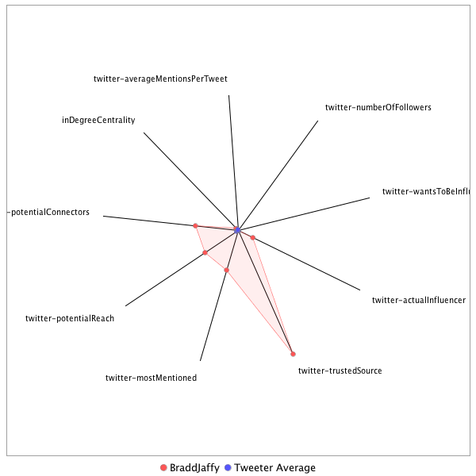

This tweeter has been identified as an influencer. Its target audience and hashtag and word usage are analyzed below.
Basic Statistics
Number of direct followers 208179 The peak number of followers that the tweeter had during any time period. Number of retweeters 507 Number of agents that retweeted the key influencer. Number of secondary followers 154300416 The sum of the followers of those who retweeted the key influencer.
Measure Values of Other Influencers node versus Tweeter Average
This compares the measure values of the key influencer with the average values across all tweeters. For each measure line, the center-point means zero and the end-point means the maximum score across all tweeters.

Where was the influencer?
The agent is not recorded as being in any locations. Either he tweeted without geo-tags or we have no information about the tweets he sent.
The agent and retweeters were in 76 different locations.

What hashtags did the influencer use?
This displays the top ranked hashtags that the influencer and its retweeters used.
Rank hashtag Count 1 AHCA 1003 2 Comey 898 3 BREAKING 857 4 Trump 694 5 pharma 594 6 Russia 554 7 mtal 539 8 ComeyHearing 525 9 TrumpCare 500 10 ParisAgreement 493 11 txlege 450 12 Obamacare 444 13 SCOTUS 437 14 GA06 432 15 ACA 389 16 biotech 383 17 FDA 375 18 VAGov 352 19 CNNsotu 345 20 ge2017 337 21 Qatar 298 22 TheLead 295 23 ComeyDay 259 24 Manchester 252 25 MemorialDayWeekend 251 26 NIH 235 27 adopt 220 28 Syria 212 29 trumprussia 210 30 healthcare 191 31 covfefe 188 32 ComeyTestimony 181 33 ComeyFiring 179 34 drugprices 176 35 netneutrality 176 36 MemorialDay 171 37 AdoptDontShop 170 38 dog 170 39 Iran 169 40 ISIS 163 41 sallyyates 160 42 TrumpBudget 158 43 AMR 156 44 LondonBridge 154 45 JamesComey 153 46 FF 152 47 climatechange 147 48 ForTheRecord 140 49 ClassActions 137 50 CongressionalBaseballGame 133 51 MTpol 130 52 climate 130 53 China 129 54 fakenews 129 55 Hardball 128 56 FBI 127 57 NAFTA 126 58 Nats 122 59 ParisAccord 120 60 potusabroad 116 61 SessionsHearing 112 62 Israel 104 63 NorthKorea 103 64 US 103 65 cat 103 66 FBIDirector 102 67 WrongChoiceAct 102 68 FOIA 101 69 TheBachelorette 101 70 Afghanistan 100 71 NYC 99 72 wmata 99 73 NATO 96 74 Saudi 96 75 ThisIsGoingWell 95 76 Medicaid 92 77 snl 92 78 CDC 91 79 MTP 90 80 Venezuela 90 81 spellingbee 90 82 GrenfellTower 89 83 drugpricing 88 84 rescue 88 85 Opioids 85 86 TBT 85 87 ThisWeek 85 88 Turkey 83 89 omnibus 83 90 Alexandria 82 91 yemen 82 92 RiyadhSummit 80 93 SaudiArabia 79 94 foster 79 95 MAGA 78 96 Putin 78 97 Paris 76 98 SC05 76 99 travelban 76 100 London 75
Tweet List
This displays all of the tweets of the influencer ordered from earliest to latest. Click on a tweet to see its status in Twitter.
Number Tweet ID Date Message 1 859799170017882112 2017-05-03 11:57:51-04 Similar to what Mitt Romney said 5 years ago — a position for which he was mocked by some at the time. And now... https://t.co/H76Lfxi0Ev 2 859795327418859524 2017-05-03 11:42:34-04 Comey on WikiLeaks: “intelligence porn” 3 859388907787603969 2017-05-02 08:47:36-04 40 months, 38 suspicious deaths of Russians — including 10 high-profile critics of Vladimir Putin https://t.co/UbScTmQsWZ https://t.co/xdmCswlkbE 4 859416877499641857 2017-05-02 10:38:45-04 … https://t.co/lgOtvnfC9T 5 859056560554856449 2017-05-01 10:46:59-04 Trump, who says the 100-day marker is unfair (but says his were the best), literally cut a cake to mark the occasion https://t.co/wVclEnewpI 6 862137415678525440 2017-05-09 22:49:12-04 ! The NYT editorial board https://t.co/IX0m6WDl7f https://t.co/Rg8lsUGBpA 7 860584049668239360 2017-05-05 15:56:40-04 Trump's second nominee for Secretary of the Army, Mark Green, has withdrawn. Statement via @frankthorp. https://t.co/OyjVJ6S5FP 8 862326083659714561 2017-05-10 11:18:54-04 CBO score on AHCA coming in 2 weeks https://t.co/P1AH4KHz9j 9 862263671405334528 2017-05-10 07:10:54-04 Ex-Trump adviser Carter Page, among those under investigation by the FBI in Russia probe, hails Trump's firing of Comey https://t.co/dz2GQhnJ8x 10 862081969399750656 2017-05-09 19:08:52-04 NYT: “Jeff Sessions had been charged with coming up with reasons to fire [Comey], the officials said.” https://t.co/TpWKwOSMpr https://t.co/CWqBm6Rdlo 11 861671905295835136 2017-05-08 15:59:25-04 Forceful response from Yates on her decision not to defend Trump travel ban: “Senator, I did not say it was lawful. I said it was unlawful.” https://t.co/Nky1zkV2pg 12 861333032745259008 2017-05-07 17:32:52-04 Macron’s entrance music: ‘Ode to Joy,’ the European anthem. Clear message: globalism victorious over nationalism. https://t.co/Igpf7dD1uU 13 861989725359525888 2017-05-09 13:02:20-04 Trump has approved a plan to arm the Syrian Kurdish militia, U.S. defense officials tell NBC News https://t.co/nTtQEnxAMN via @ckubeNBC 14 862367043378708498 2017-05-10 14:01:39-04 The White House deputy press secretary just said Comey committed “atrocities.” Atrocities. https://t.co/mVGnavpz49 15 862153171858227200 2017-05-09 23:51:48-04 Striking lede from the Associated Press @jpaceDC on Trump/Comey https://t.co/jd6F0cGCCI https://t.co/VsIox3Lhzl 16 860461468009025536 2017-05-05 07:49:35-04 Yikes. Lede in NY congressman's hometown paper after vote for AHCA. What his constituents are reading this morning… https://t.co/5UHyxqIlWZ 17 860288727276556289 2017-05-04 20:23:10-04 Trump: Australia has better health care than U.S. (they have universal health care) Watch the reaction from @BernieSanders to @chrislhayes https://t.co/zYF8NsGKF0 18 861677960092319745 2017-05-08 16:23:29-04 As you hear repeated questions about unmasking, leaks or Hillary Clintons emails, recall the title of this hearing. h/t @DafnaLinzer https://t.co/UFHK3N5Gae 19 862106173465649160 2017-05-09 20:45:03-04 !!! Comey thought it was a prank and laughed when news of his firing flashed on the TV https://t.co/QPtJkpPx3P https://t.co/vc7tSfn8vw 20 862027325705211909 2017-05-09 15:31:44-04 All 48 members of Senate Democratic caucus write to McConnell asking him to drop Obamacare repeal efforts & work together to fix health care https://t.co/NnS6vHq3Tf 21 861643065370587137 2017-05-08 14:04:49-04 ! Comey admits he's on Twitter, says sometimes Twitter is like being in a dive bar where you can hear everybody screaming at the TV True. https://t.co/wkyUWmAPGw 22 859602411056492544 2017-05-02 22:56:00-04 Leave aside the Hillary part for a second. Focus on Comey. The president is accusing his own FBI Director of giving someone a "free pass." https://t.co/nJg48sbu20 23 860852830436982784 2017-05-06 09:44:43-04 In a Beijing ballroom, Kushner family flogs $500,000 ‘investor visa’ to wealthy Chinese https://t.co/mX3UT1Y09P 24 862326950400069632 2017-05-10 11:22:20-04 2 photos of Trump in the Oval Office with Russian FM Lavrov and Ambassador Kislyak. They're from the Russians. Nothing from White House yet. https://t.co/s8BSYDGn62 25 862277510482022404 2017-05-10 08:05:53-04 Questioning the president's actions is the job of the free press https://t.co/hgR51Cx82k 26 861558503483244544 2017-05-08 08:28:48-04 Trump's morning tweets: —Golf —Not worried about Flynn, no sir —Accuse Yates of leaking, without evidence —Use wrong counsel/council —TKTKTK https://t.co/zT8M8gcCqW 27 861551140881793024 2017-05-08 07:59:33-04 The Obama administration fired Mike Flynn. Trump made him national security adviser. Sally Yates testifies today. https://t.co/AMHND3Azoz 28 860585126576652288 2017-05-05 16:00:57-04 Green came under fire for anti-LGBT comments. This makes 2 Trump Army secretary nominee withdrawals & 1 Navy secretary nominee withdrawal. https://t.co/dU3TgzOGvZ 29 860214038336286720 2017-05-04 15:26:23-04 Trump: “How am I doing? Am I doing OK? Hey, I’m president! I’m president! Can you believe it?” https://t.co/hjos8ZWL95 30 860165929623334912 2017-05-04 12:15:13-04 Meantime, while you're watching health care... https://t.co/h05GMs43CO 31 859482183626608641 2017-05-02 14:58:15-04 Notably, the White House readout of the Trump-Putin call leaves out this detail https://t.co/5WjVYydKtC 32 862717281360642048 2017-05-11 13:13:23-04 The President of the United States says he directly asked the FBI director if he was under investigation https://t.co/Hx2XxJbD7j https://t.co/wfyjNkK62a 33 862712765324120064 2017-05-11 12:55:26-04 NBC NEWS: Trump says he asked Comey if he was under investigation and Comey said no; “I actually asked him, yes.” 34 863095546579476480 2017-05-12 14:16:28-04 The White House is refusing to deny that President Trump has secret recording devices in the White House. Extraordinary. https://t.co/WNM3DP55I1 35 862642542390784000 2017-05-11 08:16:23-04 Trump: Maybe I'll release my tax returns when I'm out of office Hope Hicks: He means after the audit Trump: I mean after I'm out of office https://t.co/yYeedYzRzd 36 860185168744722435 2017-05-04 13:31:40-04 Waiting for Ryan and Pelosi, I'm suddenly flashing back to Boehner 2010: “Hell no you can’t! … Hell no you haven’t!” https://t.co/4Sg1RirVBm 37 859036417363771392 2017-05-01 09:26:56-04 As @jdickerson meticulously questions his wiretap claims, Trump hits the escape hatch: “Okay, it’s enough. Thank you. Thank you very much.” https://t.co/Aw4GyjiC2r 38 862768068388409344 2017-05-11 16:35:11-04 ! cover of the @NewYorker is Sessions dragging Comey off a plane https://t.co/phZPJRQWgR 39 862737679783514113 2017-05-11 14:34:26-04 WH spox: I’ve talked to “countless” FBI agents who are happy with Comey's firing NYT's @shearm: “Really?!” https://t.co/bEvoD5pATu 40 862631874518294529 2017-05-11 07:34:00-04 An incredible interview. Less than 24 hours before firing Comey, Trump gave reporters a tour of the WH and his DVR. https://t.co/aGNFW3RuVi https://t.co/ZV24jCgWJX 41 862332988113203201 2017-05-10 11:46:20-04 Rosenstein is the Deputy AG who wrote the memo justifying Comey's firing https://t.co/BdqHc3zr73 42 862104307231019008 2017-05-09 20:37:38-04 So Trump fired Comey, citing his handling of the Clinton case. This was Trump on Comey in October, after the Clinton letter. Watch. https://t.co/CjPLsxshlH 43 859906962766651392 2017-05-03 19:06:10-04 House will vote on health care bill tomorrow, senior GOP House sources tell @AlexNBCNews 44 859786578759229442 2017-05-03 11:07:49-04 Q: Trump just said again that the hacking could have been China or someone else… Comey: It was Russia. https://t.co/iog2HYwAhQ 45 859086467003494401 2017-05-01 12:45:49-04 Trump: “absolutely, I would be honored” to meet with Kim Jong Un under the right circumstances https://t.co/dhno7oZw25 46 863765737235677185 2017-05-14 10:39:34-04 It's the 15th weekend in a row that President Trump has spent time at a Trump business property (FL/VA/NJ golf clubs, DC hotel, Mar-a-Lago) 47 863091229642432512 2017-05-12 13:59:19-04 The White House is refusing to say whether President Trump has a secret WH recording system. Extraordinary moment. https://t.co/kdDdrmZ4lP 48 863064116625375235 2017-05-12 12:11:35-04 Clapper on MSNBC: “I don’t know if there was collusion or not. I don’t know if there was evidence of collusion or not – nor should I have.” https://t.co/wHBExzvZ2k 49 863036366720045056 2017-05-12 10:21:18-04 “The lawyers did not release copies of Trump's tax returns so The Associated Press cannot independently verify their conclusions.” https://t.co/7wcRsl9bVp 50 862714299902550017 2017-05-11 13:01:32-04 TRUMP says he was going to fire Comey regardless of recommendation—says he asked Comey if he was under investigation https://t.co/TKDralbLzJ 51 862509886109876229 2017-05-10 23:29:16-04 Holy wow. Deputy AG threatened to quit after WH narrative cast him as main force behind the decision to fire Comey. https://t.co/1zyIGWn4UR https://t.co/5iskRCOqVh 52 862438298907791360 2017-05-10 18:44:48-04 Mike Flynn's subpoena is the 1st from Senate Intel since the 9/11 inquiry; 1st documentary subpoena since 1970s at least, via @frankthorp https://t.co/V7yiszT8Lk 53 862434218034507776 2017-05-10 18:28:35-04 Senate Intel has just subpoenaed Mike Flynn for documents in Russia investigation https://t.co/5EvtzX3Swm 54 862078499699515392 2017-05-09 18:55:05-04 Trump fires Comey, who's investigating his campaign, and the stated reason is because of his handling of the Clinton case. Today … is a day. https://t.co/UsnRD9VhZg 55 862011407658823682 2017-05-09 14:28:29-04 Spicer calls Sally Yates a “strong supporter” of Hillary. Why'd he say that? “It was widely rumored” that she’d play a role in a Clinton DOJ 56 861778610562236416 2017-05-08 23:03:26-04 Problem is—Clapper didn't say that; in fact he said he didn't even know about FBI Trump/Russia investigation till Comey revealed it publicly https://t.co/Y0QVtDRYhE 57 861664871313756160 2017-05-08 15:31:28-04 Astounding. Yates says Trump WH counsel asked her why DOJ cared that one WH official (Flynn) lied to another. This is why DOJ cared: https://t.co/UWRhyC45LO 58 861599529229049856 2017-05-08 11:11:50-04 NBC NEWS: Obama warned Trump against hiring Mike Flynn in Oval Office meeting, 3 former Obama officials say https://t.co/nbzLxxm61u 59 860551220649394177 2017-05-05 13:46:13-04 As Sarah Huckabee Sanders very capably handles her first WH briefing & mentions Cinco de Mayo — a message from her father this morning: https://t.co/2tu1ZK4QJK 60 859207928972279815 2017-05-01 20:48:28-04 Trump to speak with Putin tomorrow https://t.co/sWpvUeipAG 61 862683686436843521 2017-05-11 10:59:53-04 Q: Did Comey's firing impede any investigation? McCabe: “you cannot stop the men and the women of the FBI from doing the right thing” https://t.co/4hSqb2IXlM 62 863090640707604480 2017-05-12 13:56:58-04 Spicer does NOT deny that Trump recorded Comey or has a White House recording system: “the president has nothing further to add” https://t.co/s84oYAvBpp 63 861663238211198976 2017-05-08 15:24:59-04 Sally Yates: “We believed General Flynn was compromised with respect to the Russians” https://t.co/Cd2sH4KSl9 64 860522370724966400 2017-05-05 11:51:35-04 Q: Old and sick could pay 5x more than young… Trump HHS Sec: “It’s pricing for what individuals' health status is…” https://t.co/V8Et6gQM4R 65 859473298039730176 2017-05-02 14:22:57-04 Chyron on point https://t.co/iR8h2WOfLh 66 863816059807293440 2017-05-14 13:59:32-04 United States of America, 2017: White nationalist mob gathers at Confederate statue, chants “Russia is our friend” https://t.co/2ejjwHnmb6 https://t.co/owtX5ahr6l 67 863769199801503745 2017-05-14 10:53:19-04 Wow. Ex-DNI Clapper says the Russians have to consider Comey's firing “another victory on the scoreboard for them.” https://t.co/OHO18NtaL6 68 861403484809297920 2017-05-07 22:12:49-04 Trump's EPA chief fired top environmental researchers, may replace them with representatives from industries the EPA is supposed to regulate https://t.co/VYJBa593co 69 860502646754615296 2017-05-05 10:33:13-04 The job typically involves a long tenure; there have been just 9 in over 100 years, per @AshleyRParker — and WH won't say why she was fired https://t.co/uKgtGmac14 70 860630600599973888 2017-05-05 19:01:39-04 GOP House special election candidate won't say if he'd support AHCA — but is caught on tape praising it to lobbyists https://t.co/rHfimuaRLZ 71 862828195808149504 2017-05-11 20:34:07-04 NYT: Trump summoned Comey to the WH for dinner & pressed him to pledge his loyalty; Comey would only promise honesty https://t.co/JlxAIZoPXW 72 862627781527654400 2017-05-11 07:17:44-04 Asked about Rosenstein, Sarah Huckabee Sanders says on @TODAYshow the decision to fire Comey “was the president’s and the president’s alone” 73 862513737600782336 2017-05-10 23:44:34-04 Steve Schmidt: “an enormous abuse of power by the President of the United States … clearly an attempt to influence” the Russia investigation https://t.co/hgk06QbNBp 74 862471023060557824 2017-05-10 20:54:50-04 Trump gave WH comms team almost zero notice of Comey firing—then became irate when it didn't play well on cable news https://t.co/QnuBnmRCKu https://t.co/ukp0rjgU66 75 862476222013550592 2017-05-10 21:15:30-04 WSJ sources: “Mr. Comey was concerned by information showing potential evidence of collusion” in Trump-Russia probe https://t.co/gtos5gv6NI https://t.co/3Y0vLzVRAX 76 863103542923603970 2017-05-12 14:48:14-04 Top House Judiciary and Oversight Dems tell the White House: Hand over Trump’s Comey “tapes” if they exist https://t.co/sJjktx8jRa 77 863065910390738944 2017-05-12 12:18:42-04 Schiff to Trump: Hand over the Comey “tapes” to Congress or admit it's baloney https://t.co/22pE6kzu40 78 862760144802918400 2017-05-11 16:03:42-04 “The time for trivial fights is over” — President Trump, February 28 https://t.co/XSnOmbt5NQ 79 862766471109369856 2017-05-11 16:28:50-04 WH nixes possible Trump visit to FBI HQ; WH was told he was unlikely to be greeted there warmly, per @KenDilanianNBC https://t.co/0GYOt73nDl 80 862642110234755072 2017-05-11 08:14:40-04 Read this—Trump essentially admits the audit excuse for not releasing his taxes is a sham. Hope Hicks tries to help. https://t.co/ngWo0xmSg5 https://t.co/dJRy0WUCzk 81 862643603927162881 2017-05-11 08:20:36-04 ... https://t.co/FySmxOgYHN 82 862396073259741185 2017-05-10 15:57:01-04 So @KenDilanianNBC talked to a former senior intelligence official about the way Trump fired Comey. This quote is … quite something. https://t.co/DyKwxo3cMj 83 862729407852576768 2017-05-11 14:01:34-04 Here's the executive order Trump signed establishing a commission on “election integrity” https://t.co/BaKfTD7t0u 84 863887686553219072 2017-05-14 18:44:09-04 GOP health bill would allow states to cut essential benefits—which include prenatal & postnatal care New Trump statement on women's health: https://t.co/WyhoXW3tTS 85 863025550750830594 2017-05-12 09:38:20-04 From 2016. h/t @SZilberstein https://t.co/WaQascQg3v 86 862666033374666754 2017-05-11 09:49:44-04 By a 54–38 margin, voters want Democrats to win control of the House; widest margin ever for this question in Q poll https://t.co/RQtaOLlNNM 87 862468904538578948 2017-05-10 20:46:25-04 WaPo: Trump fumed at Comey over the Russia investigation and b/c he wouldn't back up his baseless wiretapping claim https://t.co/QnuBnmRCKu https://t.co/q4Iz2Sr6UA 88 862340224432713728 2017-05-10 12:15:05-04 NBC's Pete Williams: There's a strong feeling at the FBI that Comey was fired because he wouldn't drop the Russia investigation (via @MSNBC) https://t.co/hkH5kQJqEZ 89 862276182758248448 2017-05-10 08:00:36-04 Trump spox Sarah Huckabee Sanders explains why she said last night it's “time to move on” from Russia investigation https://t.co/qSh0jbQHUg 90 861997810111131648 2017-05-09 13:34:27-04 This is an interesting answer coming from a former U.S. attorney general about Russian interference in our election (h/t @SZilberstein) https://t.co/4JlpMh4RCS 91 861659748181188608 2017-05-08 15:11:07-04 Q: Do you have evidence of collusion between Trump campaign & Russians? Yates: I can’t answer that without revealing classified information https://t.co/7NCsaMKquO 92 861303257293041665 2017-05-07 15:34:33-04 Interesting. Trump tweeted congratulations to Macron, but the official White House statement is from the press secretary, not the president. https://t.co/RwQp7En9bb 93 861263605265821697 2017-05-07 12:56:59-04 Sally Yates to testify tomorrow—expected to contradict WH and say she explicitly warned about Flynn lies/Russia risk https://t.co/Oa7d8hMetx https://t.co/8U0ZKadYyK 94 859156595816714240 2017-05-01 17:24:29-04 Trump commerce secretary Wilbur Ross on U.S. strikes in Syria: “It was in lieu of after-dinner entertainment” https://t.co/fahmxtQ17C https://t.co/RJ8ELAAF1i 95 858887820865306624 2017-04-30 23:36:28-04 “And he was able to do it.” (because he regularly has them killed) https://t.co/6LLwhZ5p18 https://t.co/SDkq4oZRfd 96 858878758371172352 2017-04-30 23:00:27-04 Budget deal: —No border wall $ —No $ cuts for ‘sanctuary cities’ —Keeps funding Planned Parenthood —More defense $ https://t.co/LX5q1lTI7B 97 862810193280860160 2017-05-11 19:22:34-04 Trump: “when I decided to just do it, I said to myself … this Russia thing with Trump and Russia is a made up story” https://t.co/rK2GWvg74w 98 862780657688338433 2017-05-11 17:25:13-04 There's a lot more of the Trump interview you haven't seen — @NBCNightlyNews 6:30 ET https://t.co/7ZvYDzLRXH 99 862711273049522177 2017-05-11 12:49:30-04 Turn on NBC. @LesterHoltNBC about to anchor an NBC News Special Report following his interview with President Trump. 100 862695350833905664 2017-05-11 11:46:14-04 WASHINGTON (AP) -- Acting FBI director calls Trump-Russia investigation "highly significant," contradicting White House claim. 101 862321790399504384 2017-05-10 11:01:50-04 Trump meeting with Putin's top diplomat, Sergei Lavrov, in the Oval Office — photo via the Russian Foreign Ministry https://t.co/tlwd5SQr83 102 862050945412321280 2017-05-09 17:05:36-04 6 days later, the FBI cleans up Comey's comments about Huma forwarding “hundreds of thousands” of emails to Weiner https://t.co/IkTSW2C8ON 103 859792779790176256 2017-05-03 11:32:27-04 FBI Director Comey says Sally Yates did tell him about her concerns regarding Mike Flynn; also reiterates there was no spying on Trump Tower https://t.co/aq2SguyJIs 104 862519006682636288 2017-05-11 00:05:30-04 Left: This a.m. https://t.co/GcISPOWp7D Right: Tonight https://t.co/yyL3wZVVso Perhaps not so “inappropriate” to raise questions after all https://t.co/KUKBU7mH55 105 862365091668402177 2017-05-10 13:53:54-04 WH spox Sarah Huckabee Sanders just now: “The president over the last several months lost confidence in Director Comey” Trump last month: https://t.co/NwXk7ZwRqT 106 861996450825326594 2017-05-09 13:29:03-04 Trump team marks 6 months since election win by vowing to release video of the Clinton campaign's concession call https://t.co/VzYwKAXLPH https://t.co/4l91I9cWA5 107 859365861945159681 2017-05-02 07:16:02-04 .@jmeacham Watch this. @jmeacham says on @Morning_Joe that Trump told him a year ago that he thought he could have done a deal to avert the Civil War. https://t.co/IFc0q5zG2m 108 859026543317835777 2017-05-01 08:47:42-04 Andrew Jackson was a slaveholding plantation owner. He also died 16 years before the Civil War began. This Trump answer is astonishing. https://t.co/wdKNkUOx1t 109 862996757101383680 2017-05-12 07:43:55-04 Sarah Huckabee Sanders gives WH staffers a stern lecture about leaking. News of her lecture immediately … leaks. https://t.co/UsDqK3Av1i 110 859609243774840834 2017-05-02 23:23:09-04 oh my god the Mulvaney conference call, via @maddow https://t.co/YPZr1tZfRo 111 864537134807515136 2017-05-16 13:44:49-04 shot/chaser https://t.co/twcHgyigRY 112 864253275796852737 2017-05-15 18:56:52-04 “Blockbuster” is overused. But this @gregpmiller @GregJaffe jam was a true blockbuster. Helluva scoop. Cheers to the @washingtonpost. 113 864246037627772928 2017-05-15 18:28:06-04 NYT matches WaPo, says the info Trump gave the Russians was so senstive we didn't even tell our allies about it https://t.co/jYBdMmRAdl 114 864190380077723648 2017-05-15 14:46:57-04 Good Q @HallieJackson: WH won't deny Trump is secretly recording conversations — how are people supposed to feel comfortable talking to him? https://t.co/FKOVbNay88 115 864596751797424128 2017-05-16 17:41:43-04 Source confirms to @KenDilanianNBC the Comey memo and the line “I hope you can see your way clear to letting this go, to letting Flynn go.” 116 864307718374531073 2017-05-15 22:33:12-04 Good point @EliStokols: WH squandered credibility on things big (wiretapping) & small (crowd size). Today a rainy day came…nothing saved up. https://t.co/fdomX5Pmpp 117 864289174878375937 2017-05-15 21:19:31-04 I have aged a year just reading this tweet https://t.co/ij6cfwVBqo 118 864488089170976768 2017-05-16 10:29:56-04 Blistering statement from McCain on Trump https://t.co/n0YkAd1fhX 119 864169410222845952 2017-05-15 13:23:37-04 Deputy AG Rosenstein to brief all senators on Comey firing on Thursday https://t.co/DamzeRSjSa 120 864646748454756358 2017-05-16 21:00:23-04 An interesting choice by the @NYDailyNews on tomorrow's front page. Can be read two ways. https://t.co/h4xTeTA2S4 121 864616520239992833 2017-05-16 19:00:16-04 https://t.co/rXC28GC3M5 122 864592391273164801 2017-05-16 17:24:24-04 BREAKING from NYT: Trump asked Comey to shut down Mike Flynn investigation, Comey memo says. Wow. https://t.co/wtk1Do6dTd 123 864552753422630913 2017-05-16 14:46:53-04 Trump's senior staff is afraid to leave him alone with foreign leaders for fear of what he might say https://t.co/V2r6xkdxJI 124 864554568377618433 2017-05-16 14:54:06-04 This is a stunning paragraph about the President of the United States. https://t.co/V2r6xkdxJI https://t.co/wFLfnid4kt 125 864321841078427649 2017-05-15 23:29:19-04 A+ reel of Trump's previous statements on handling classified information, via @11thHour @nick_ramsey. Watch. https://t.co/7NO4xLSvlk 126 864189499915612160 2017-05-15 14:43:27-04 The White House still won't deny that President Trump is secretly recording conversations. Reminder of how extraordinary that is. https://t.co/gyCXN9szHl 127 864453777054732289 2017-05-16 08:13:35-04 Seconds apart. via @brianstelter https://t.co/KIGj7AheaF 128 864257709830529024 2017-05-15 19:14:29-04 Watch McMaster's statement carefully: “at no time were sources or methods discussed.” WaPo report never said Trump revealed sources/methods. https://t.co/SF3rWDqKFi 129 864637761982271488 2017-05-16 20:24:41-04 Chaffetz letter to FBI: I want all all memoranda, notes, summaries and recordings related to Trump-Comey communications https://t.co/GTy8wrZ1yo 130 864283926390550528 2017-05-15 20:58:40-04 Tomorrow's @NYDailyNews on Trump: “Leaker of the Free World” https://t.co/ure1hVDmHu 131 864235531604983808 2017-05-15 17:46:22-04 U.S. Senator from New Mexico https://t.co/wT1yMsSalN 132 864628098096140289 2017-05-16 19:46:17-04 Reporters Committee for Freedom of the Press: Comments attributed to Trump cross a dangerous line — no president gets to jail journalists https://t.co/trZvipY5BQ 133 864624659463114752 2017-05-16 19:32:37-04 Republican Congressman: https://t.co/RWT1uax097 134 864620486487048192 2017-05-16 19:16:02-04 The potential consequences of Trump giving that intel to the Russians https://t.co/P2h03hl4J8 135 864265013313359872 2017-05-15 19:43:31-04 July 2016: https://t.co/uEiFxi3KPt 136 864234970549817345 2017-05-15 17:44:08-04 BuzzFeed confirms WaPo report on Trump; “it’s far worse than what has already been reported,” official tells them https://t.co/gqcHnj0qx0 137 864489094058999812 2017-05-16 10:33:56-04 WH: McMaster will hold an on-camera briefing at 11:30 a.m. ET, Spicer off-camera gaggle later 138 864798435802836992 2017-05-17 07:03:08-04 .@DouthatNYT argues Trump should be declared unfit and removed from office via the 25th Amendment https://t.co/37lN15R4VE 139 864560092787736577 2017-05-16 15:16:03-04 Israeli intelligence officials to @BuzzFeed: “our worst fears confirmed” https://t.co/n4mVV99n9V 140 864529026622398465 2017-05-16 13:12:36-04 Erdoğan just congratulated Trump for his “legendary triumph,” according to the translation 141 864319124989673472 2017-05-15 23:18:32-04 This is from January. Note the subhead as well. https://t.co/cqnxSiJEs3 https://t.co/ntmMRFzKlg 142 864226069276176390 2017-05-15 17:08:46-04 WOW. WP: Trump revealed highly classified info to Russians in Oval Office, jeopardized critical source of ISIS intel https://t.co/9E4EEa178s https://t.co/516H7I6EkL 143 864530819905466373 2017-05-16 13:19:44-04 Wait, what? Is this not an odd thing for her to confirm—when Spicer is still in that job and no announcements have been made about a change? https://t.co/dh1Qml845z 144 864512728056160256 2017-05-16 12:07:50-04 McMaster: “The president wasn’t even aware of where this information came from.” https://t.co/Q9C7FT62mz 145 864534786475515906 2017-05-16 13:35:30-04 NYT: Israel was the source of the classifed intel that Trump gave the Russians https://t.co/3Qvn28z5jG 146 865028092166799360 2017-05-17 22:15:43-04 If McGahn knew about Flynn as NYT sez—wouldn't Pence, as head of Trump's transition team? And if not—why not? Kept in the dark on this, too? https://t.co/bbcAapIbgL 147 864881494380171264 2017-05-17 12:33:11-04 This is what President Trump told U.S. Coast Guard Academy graduates in a commencement address https://t.co/HDHnmi0Ufs 148 867159485864857601 2017-05-23 19:25:07-04 Leaked transcript: Trump praised Duterte for doing an “unbelievable job on the drug problem” He's murdering people. https://t.co/KvuaSjDMM6 https://t.co/1pyBJs4s2H 149 865688131240153088 2017-05-19 17:58:28-04 NBC News confirms: the activities of a current White House official are now under investigation in FBI's Russia probe, 2 U.S. officials say 150 865019105082048513 2017-05-17 21:40:00-04 Days before Trump was sworn in, Flynn stopped a Pentagon plan Turkey opposed—after being paid $500,000 as its agent https://t.co/2rFa9MnqqF 151 865029467466543104 2017-05-17 22:21:11-04 On 3/9, Fox asked Pence about Flynn filing w/DOJ as a foreign agent re Turkey. Pence: "hearing that story today was the first I heard of it" https://t.co/xSCBD8XoR2 152 864983053327794177 2017-05-17 19:16:45-04 Kevin McCarthy to NBC News on @washingtonpost story: “Don't you have a sense of humor anymore? People aren't supposed to be able to laugh?” https://t.co/ff7606Qtal 153 867038198219800576 2017-05-23 11:23:09-04 This is a notable comment from Brennan: “frequently, individuals who go along that treasonous path” don't even realize it till it's too late https://t.co/VqkaO7WJeP 154 865619101561098240 2017-05-19 13:24:10-04 NYT: “No, you hang up first” WaPo: “No, you hang up” NYT: “No, you first” WaPo: “No, you first” NYT: “No, you…” https://t.co/aoc9zKpiI7 155 864967346133377028 2017-05-17 18:14:20-04 NBC News: Mike Flynn and Paul Manafort have emerged as key figures in Russia investigation Mueller will lead https://t.co/bC6nrcJucS 156 862125332647866369 2017-05-09 22:01:11-04 GOP Senator: https://t.co/U0cLx6bYBb 157 867161142761803776 2017-05-23 19:31:42-04 Joe Lieberman, who's in the running for FBI director, works at Kasowitz's law firm https://t.co/gUvDE3Vb2T 158 864549812041134080 2017-05-16 14:35:12-04 NBC News: Israel was the source of the secret intel Trump gave Russia https://t.co/jfZ0WEyOKL 159 864109100455653376 2017-05-15 09:23:58-04 Gallup: 64% of Americans support gay marriage, the highest ever https://t.co/lzQnWTRhtn 160 862693987882237952 2017-05-11 11:40:49-04 In which the acting FBI director contradicts the White House, and the banner team is on it https://t.co/MqCdbiwcic 161 862331202077896706 2017-05-10 11:39:14-04 NYT: Days before he was fired, Comey asked for a significant increase in $$$$/personnel for FBI Russia investigation https://t.co/Xr5UikXB7J 162 860553162004058112 2017-05-05 13:53:56-04 White House: Trump was just being nice when he told Australia's prime minister their health care (universal health care) is better than ours https://t.co/BVMN6b6N0b 163 860208190407020545 2017-05-04 15:03:09-04 —14 of 23 House Republicans in districts won by Hillary voted ‘yes’ on health bill —25 of 35 House GOP in competitive districts voted ‘yes’ https://t.co/8qNG5maP9X 164 860457228050026496 2017-05-05 07:32:44-04 Here's Trump last night denying a story then confirming it seconds later https://t.co/72RzaGyLcW 165 865199592249466881 2017-05-18 09:37:12-04 PSA: Rod Rosenstein = “Rosen-stine” not “Rosen-steen” Bob Mueller = “Mull-er” not “Mew-ler” 166 862726526848118786 2017-05-11 13:50:07-04 Trump: I was going to fire Comey regardless of recommendation That contradicts what his own vice president said yesterday. Watch. https://t.co/DADpTi5nlo 167 867231649242787840 2017-05-24 00:11:52-04 And warmly welcomed an autocrat to the WH — who hours later watched his goons beat up protesters for practicing free speech on American soil https://t.co/6VRwjKoRhW 168 864830456017145856 2017-05-17 09:10:23-04 You might not read a more astonishing sentence today https://t.co/gMiS5zHm3C via @steveholland1 @jeffmason1 https://t.co/KKXH5EzgaL 169 862864055773659139 2017-05-11 22:56:36-04 This is like an SNL skit but real life https://t.co/UsDqK3Av1i https://t.co/00rYnuDooj 170 862136127507099648 2017-05-09 22:44:05-04 I'm focused on the hashtag. Trump is suggesting the FBI director he just fired was part of the swamp? https://t.co/JMnNmkR0ka 171 861592952283553793 2017-05-08 10:45:42-04 2 hours and 29 minutes later, President Trump has fixed “council” to “counsel” https://t.co/7ZTJRkFXz4 172 865700358110236673 2017-05-19 18:47:03-04 Trump nominates Callista Gingrich as U.S. Ambassador to the Vatican https://t.co/fS6QHDWSiZ 173 865036874741673984 2017-05-17 22:50:37-04 1/4—McGahn was told about Flynn/Turkey, per NYT 3/9—Pence (who ran the transition); note what he says 2x—unprompted https://t.co/T9eV4sAX0W 174 865249519218417664 2017-05-18 12:55:35-04 That's quite the walk-back https://t.co/BwjUcsjDFg 175 865646342353297408 2017-05-19 15:12:25-04 So this happened. Then @nytimes and @washingtonpost each dropped bombshells moments after Air Force One was wheels up. https://t.co/U20atZeIdw 176 865541220373676033 2017-05-19 08:14:42-04 A remarkable look at how foreign officials are preparing for the President of the United States https://t.co/502o86o7m5 https://t.co/FEgurKD6kS 177 865655071463292928 2017-05-19 15:47:06-04 Democratic Senator from Hawaii https://t.co/VYSZgv8jsi 178 865656925731430400 2017-05-19 15:54:28-04 FP: Israeli intelligence officials were shouting at their American counterparts after Trump spilled to the Russians https://t.co/WDdkwuHNIm 179 865699661142732805 2017-05-19 18:44:17-04 COMEY agrees to testify in open session before Senate Intel https://t.co/PXktidhJyI 180 865236357383323650 2017-05-18 12:03:17-04 Reuters: At least 10 people receiving treatment after vehicle strikes pedestrians in NYC's Times Square 181 865303781507989504 2017-05-18 16:31:12-04 Trump brings up Rosenstein memo when talking about firing Comey—Rosenstein just told senators he knew Comey would be fired before writing it 182 865310489701752832 2017-05-18 16:57:52-04 The @MSNBC chyron team on point once again https://t.co/NQ3uHagl8V 183 865600751829217282 2017-05-19 12:11:15-04 White House says there will not be an FBI director announcement today, per @HansNichols 184 865164921054666752 2017-05-18 07:19:25-04 New cover of @TIME magazine: the White House/Kremlin https://t.co/OTR17V54mW 185 865240094504087552 2017-05-18 12:18:08-04 One person has died after car struck pedestrians in Times Square, official tells NBC News; there are multiple injuries 186 865184283836788736 2017-05-18 08:36:22-04 Whoa! Statement from Roger Ailes' wife on @DRUDGE_REPORT says Ailes has died https://t.co/sE7gBKii0F https://t.co/3LejdJW67C 187 864971997327052800 2017-05-17 18:32:49-04 DOJ tells NBC News the White House was informed of the special counsel decision *after* the order was already signed this afternoon 188 864967935567290368 2017-05-17 18:16:40-04 NBC News: Officials say multiple grand jury subpoenas & records requests have been issued in connection with the 2 men in the past 6 months https://t.co/GjNPdTwkB6 189 864963593653153793 2017-05-17 17:59:25-04 Stand by for an NBC News Special Report 190 867338736081805317 2017-05-24 07:17:23-04 Among the gifts Pope Francis gave President Trump was a copy of Laudato Si', his encyclical on the environment on climate change 191 867235414674952192 2017-05-24 00:26:49-04 “thunderbolt of resistance” — Democrat wins NY assembly special election in heavily GOP district Trump won by 23 pts https://t.co/wGRVPdgTFq 192 867160597019992064 2017-05-23 19:29:32-04 The President of the Philippines is brutally killing thousands of suspected drug dealers—without trial. The American President praised him. https://t.co/jbLN0fPgdp 193 865261577678630912 2017-05-18 13:43:30-04 DETROIT (AP) -- Medical examiner determines Soundgarden singer Chris Cornell committed suicide by hanging in Detroit. 194 864936079778086912 2017-05-17 16:10:05-04 4 people, including a baby, have died in a jail run by Sheriff Clarke https://t.co/1tX2pumhPy https://t.co/HaXJimYp8H 195 865238327024390145 2017-05-18 12:11:07-04 This is the car that hit people in Times Square, via WNBC cam https://t.co/a92h9bxNEC 196 869596665027624960 2017-05-30 12:49:35-04 Donald Trump, 5 years ago today https://t.co/s3DpB106WJ 197 869215305473683456 2017-05-29 11:34:12-04 Here's Tiger Woods' mugshot after his arrest on DUI charge https://t.co/d6f8CpOIc5 198 867480539674050560 2017-05-24 16:40:52-04 CBO: 51 million people under age 65 would be uninsured in a decade under GOP plan vs. 28 million under Obamacare https://t.co/pREWqNsNfO 199 869360339829305346 2017-05-29 21:10:31-04 oooh the rare match https://t.co/oWSEIdQ7iQ 200 868502832974049280 2017-05-27 12:23:06-04 The G7 in a nutshell https://t.co/hUMX5oyaAd https://t.co/UZO7ST5nE5 201 869348417205620736 2017-05-29 20:23:09-04 Portland hero's dying final words: 'Tell everyone on this train I love them'—gripping, gutting account @maxoregonian https://t.co/eUxbtXQ3ih 202 867923977959755776 2017-05-25 22:02:56-04 Ann Arbor restaurant says ICE agents ate breakfast, then walked into the kitchen and took 3 workers into custody https://t.co/NjmWugfFN5 203 867870003223310337 2017-05-25 18:28:27-04 NBC NEWS Exclusive: Jared Kushner under FBI scrutiny in Russia investigation, multiple officials say https://t.co/lQsmKYFbu7 204 867570411566977024 2017-05-24 22:37:59-04 Fox News crew witnessed it—says Gianforte grabbed @Bencjacobs by the neck, slammed him to the ground and punched him https://t.co/f8gkvLV4oU https://t.co/VSeOLTlpYE 205 869180336126734337 2017-05-29 09:15:15-04 Trump took another family's coat of arms as his own without permission—& changed “Integritas” (integrity) to “Trump” https://t.co/8KE39u40zU https://t.co/n8V9duKmWo 206 867813527129653249 2017-05-25 14:44:02-04 FBI tells House Oversight Chairman Chaffetz it won't yet hand over Comey's Trump memos because of the Mueller Special Counsel appointment https://t.co/mWvxAZAsDt 207 867701695538749440 2017-05-25 07:19:39-04 All 3 have now pulled their endorsements — Here: https://t.co/rScqvfEcB8 Here: https://t.co/HTn6qdf7ij And here: https://t.co/WgKm0FELA1 https://t.co/Ux3GZtNApb 208 869222821746102272 2017-05-29 12:04:04-04 Macron said this today while standing literally right next to Putin. Damn. https://t.co/4G6SoaMYGh https://t.co/1246Od0bRS 209 868524093317971968 2017-05-27 13:47:34-04 Trump called Duterte in April to tell him he's a “good man” and “keep up the good work, you are doing an amazing job ... God bless you” https://t.co/21EVTobCng 210 868858225369776128 2017-05-28 11:55:18-04 Rick Best was an Army veteran, father of 4. He died defending teens from a racist tirade. Hero of the highest order. https://t.co/G8YHXxyp5f https://t.co/L8dX0jP7IG 211 869562980404527104 2017-05-30 10:35:44-04 New Twitter play in 4 acts. Another surprise ending! https://t.co/uSVjQQMZlo 212 869315814117298176 2017-05-29 18:13:35-04 Given all the rhetoric directed at journalists of late, this is frightening https://t.co/ec1gN7vUub 213 869221768594153472 2017-05-29 11:59:53-04 Macron tears into Putin's sham propaganda machine, calling it what it is — while standing right next to Putin at a joint press conference https://t.co/X8FHASa9FN 214 868841482794528768 2017-05-28 10:48:46-04 This is stunning from Merkel https://t.co/etxfJghYLn https://t.co/QCKirU0pxf 215 868241878289977346 2017-05-26 19:06:09-04 Russian ambassador told Moscow that Kushner wanted secret communications channel with Kremlin https://t.co/hsHrA9fOMu 216 868145034012577794 2017-05-26 12:41:20-04 HRC: “When people in power invent their own facts and attack those who question them—it can mark the beginning of the end of a free society” https://t.co/TS5Nb7hLN6 217 867565545650089984 2017-05-24 22:18:39-04 Priebus is worried about a possible Comey memo regarding one of their conversations, WH sources tell @thedailybeast https://t.co/GSNmz7ykhT 218 869880077852475393 2017-05-31 07:35:46-04 “The only other two countries that aren't supporting the deal are Nicaragua and Syria.” U.S. vs. 194 other nations https://t.co/AY2lTty2dN 219 867764743188221952 2017-05-25 11:30:11-04 America First™ — Trump moves aside a NATO leader to make his way to the front of the pack https://t.co/zIwkFU9zBI 220 867734607692779521 2017-05-25 09:30:26-04 Alicia Acuna just appeared on Fox News and described what she saw. She says she was standing about two feet from Gianforte and @Bencjacobs. https://t.co/iA6QqMquYd 221 869883686061314048 2017-05-31 07:50:07-04 The leaders of Denmark, Norway, Finland, Sweden & Iceland did … this. They, ahem, claim they weren't trolling Trump. https://t.co/mjeCPKMs4V https://t.co/s4PcRRBaQs 222 869624282304966660 2017-05-30 14:39:20-04 Q: Does President Trump believe that humans contribute to climate change? Spicer: “Honestly, I haven’t asked him” https://t.co/u5VlA8i8eB 223 869380772360335361 2017-05-29 22:31:43-04 Trump WH moves to roll back Obama birth control mandate for religious employers; Dems: it's helped 50 million women https://t.co/C34j0YwQeL 224 869206168870277121 2017-05-29 10:57:54-04 There really is an old tweet for every occasion. From 2015: https://t.co/RLeqEIrZ4j 225 867362647578161153 2017-05-24 08:52:24-04 CBO score on AHCA to be released today. Depending on their conclusions, House may have to vote on health care again. https://t.co/NVUO3JQxnG 226 869644289743233025 2017-05-30 15:58:50-04 shot/chaser https://t.co/OlrLj0qAcG https://t.co/hL02lEK9jI 227 869512447618674688 2017-05-30 07:14:56-04 Special Counsel, FBI investigation, House & Senate probes; 17 intel agencies say they meddled in the election. That is not "Fake News," sir. https://t.co/AACLdsD2Ea 228 869213903359815682 2017-05-29 11:28:38-04 The surviving Portland hero's mom found the man who saved her son's life. He's an Iraq War veteran. https://t.co/jmc3Av1EKg h/t @MilaMimica1 https://t.co/0ilJhDp1rw 229 869870402683772928 2017-05-31 06:57:20-04 Fox & Friends, 6:06 a.m. ET https://t.co/b3gdRUaxyf 230 869618771002093568 2017-05-30 14:17:26-04 “And on the 7th day, he rested...” 231 868989086874423296 2017-05-28 20:35:18-04 The President of the United States has tweeted 10 times today — 5 times about “fake news” — and not one word about the Portland train heroes https://t.co/yaf0ZboJUn 232 868911523485413377 2017-05-28 15:27:05-04 President Trump took time today to tweet about “fake news” sources, leaks & Montana. Still nothing about this attack this Memorial Day wknd. https://t.co/3ED9xhoXyw 233 868819959832600576 2017-05-28 09:23:14-04 A Twitter play in 4 acts. Surprise ending! https://t.co/nhrkYhoU8k 234 867543426790825984 2017-05-24 20:50:45-04 “‘He took me to the ground,’ Jacobs said by phone from the back of an ambulance.” Dude never stopped reporting. https://t.co/j9PZW1Ponw 235 869724880421474304 2017-05-30 21:19:04-04 This story was made for this GIF https://t.co/TJ8IA9jyM6 https://t.co/vG7xIWAOoy 236 867539831823454208 2017-05-24 20:36:28-04 "Aggressive behavior" from @Bencjacobs? The audio directly contradicts what Gianforte claims happened in this statement. https://t.co/q8EkvQMxBp 237 867716363183427584 2017-05-25 08:17:57-04 Trump recorded a robocall for this week for “my friend…Greg Gianforte…wonderful guy” https://t.co/Vi1YGkWsat Audio: https://t.co/Ljq77Sudc4 238 869897406892183552 2017-05-31 08:44:38-04 Tweet from the United Nations moments ago — amid reports Trump is expected to pull out of the Paris Climate Agreement https://t.co/LXwMubQXua 239 869184759074877440 2017-05-29 09:32:49-04 U.S. Navy Lt., WWII hero John F. Kennedy would have turned 100 today #MemorialDay https://t.co/s3g4krVAXW https://t.co/zmGmrqRuMf 240 869673816292720640 2017-05-30 17:56:10-04 WASHINGTON (AP) -- AP source: Ex-National Security Adviser Flynn will provide some documents under subpoena to Senate intelligence panel. 241 869497445776072704 2017-05-30 06:15:20-04 CNN: US caught Russians discussing potentially 'derogatory' financial info about Trump & associates during campaign https://t.co/jrNt1v5fNS 242 868959203133665280 2017-05-28 18:36:33-04 Rather's open plea to the president https://t.co/wLxKvs2Cdo 243 867723251392409604 2017-05-25 08:45:19-04 Guy gets hit by a car. Cop asks about his immigration status before offering him medical aid. https://t.co/MjAea8O0rW 244 867834138258272256 2017-05-25 16:05:56-04 Source close to the Gianforte campaign tells NBC News they’ve raised $100,000+ online in last 24 hours—most coming after the alleged assault 245 867358055176056832 2017-05-24 08:34:09-04 Hard to name Lieberman FBI director when he works for the law firm of the guy Trump is retaining as his lawyer in the Russia investigation https://t.co/vZRUzlnMYb 246 867390123637452800 2017-05-24 10:41:35-04 Actual words from the mouth of a United States Congressman https://t.co/lXOMYbUPU7 247 867372630965448706 2017-05-24 09:32:04-04 h/t @mitchellreports https://t.co/tPlJG8K7mr 248 867414035054067712 2017-05-24 12:16:36-04 “The policy suggests it is up to foreign governments, not Trump hotels, to determine whether they self-report their business.” #emoluments https://t.co/7ot3aEGTbo 249 867372523452866560 2017-05-24 09:31:39-04 Underplayed from Trump-Duterte call: he told Duterte we have 2 nuclear submarines near N. Korea. That's…not usually something we talk about. https://t.co/Qiqgcj6NOk 250 867364063998824448 2017-05-24 08:58:02-04 “strong case that the president and his White House were interfering with an ongoing federal investigation” https://t.co/9P9JNtweMX https://t.co/FW3sKUdqNr 251 874629731857174528 2017-06-13 10:09:12-04 The @washingtonpost reports American Otto Warmbier, freed in North Korea, has been in a coma for more than a year https://t.co/Un1hlAlqDH 252 872822458491031552 2017-06-08 10:27:45-04 Comey: “General Flynn at that time was in legal jeopardy” and Trump asking me to back off the probe was “disturbing” https://t.co/4oWVHAtWAr 253 872823929395707904 2017-06-08 10:33:35-04 Comey says Bill Clinton’s tarmac meeting with Lynch is what pushed him to make public statement on Clinton investigation findings 254 872816444198834176 2017-06-08 10:03:51-04 Comey has his game face on https://t.co/j8LsMRVUNg 255 875063397724901377 2017-06-14 14:52:26-04 In rebuke to Trump, the deal blocks him from being able to lift or ease the sanctions without Congressional approval https://t.co/xtpYjjghzK https://t.co/CB1cCzn0xj 256 875049135635914752 2017-06-14 13:55:46-04 Alexandria's ex-mayor says he talked with the alleged gunman every morning at the YMCA, tried to help him find a job https://t.co/o7JStUtX0g 257 875021867681185792 2017-06-14 12:07:25-04 Bernie: “Real change can only come about through nonviolent action, and anything else runs against our most deeply held American values” https://t.co/fxEofmb9Rd 258 874959687292211201 2017-06-14 08:00:20-04 NBC News Special Report on the air right now 259 872846825623089152 2017-06-08 12:04:34-04 Q: Do you believe that Trump colluded with Russia? Comey: “That’s a question I don’t think I should answer in an open setting.” https://t.co/Ee2giR2Klb 260 872841934414467072 2017-06-08 11:45:08-04 Comey just said that Trump was not accurate when Trump denied asking him to back off the Flynn investigation https://t.co/Y2D03OoO69 261 872785709127618560 2017-06-08 08:01:43-04 Trump will monitor Comey's testimony, as time permits, in a WH dining room with his legal team & advisers, sr. WH aide tells @PeterAlexander 262 873171183889502208 2017-06-09 09:33:27-04 As Trump's lawyer prepares to file complaint, recall the president was first to reveal information from his private conversations with Comey https://t.co/9AgrP7fXmC 263 875119737977663488 2017-06-14 18:36:19-04 WP: The President of the United States is now personally under investigation — & the news broke on his 71st birthday https://t.co/5cXsZ0ExwU 264 875116500377628676 2017-06-14 18:23:27-04 WaPo: Special counsel is investigating Trump for possible obstruction of justice, officials say https://t.co/ECthxlBL2j 265 872987078098903041 2017-06-08 21:21:53-04 https://t.co/HaHRvwYUmX 266 873255237989040128 2017-06-09 15:07:27-04 Q: Why did you tweet you feel vindicated after Comey? Trump: “no collusion, no obstruction, he’s a leaker” 267 874806846103707650 2017-06-13 21:52:59-04 NYT: Trump DID consider firing Mueller and his alarmed staff talked him down -- for now https://t.co/m3zxXDE0Fb 268 874985799879716865 2017-06-14 09:44:05-04 Statement from Scalise's office: He's undergoing surgery, in stable condition https://t.co/AWhRbtjncr 269 874583927381528582 2017-06-13 07:07:11-04 .@mikeallen has never seen anything like what he saw from the Trump White House yesterday https://t.co/RUba3YpBQY 270 875105289661501442 2017-06-14 17:38:54-04 NYT: U.S. to announce charges against 12 of Erdoğan's guards in beating of Turkish Embassy protesters https://t.co/WsdyqBT9KV via @npfandos 271 873898672685240320 2017-06-11 09:44:14-04 Multiple Instagram posts appear to show Trump showing up at a wedding being held last night at his NJ golf club, posing w/ the bride & groom https://t.co/8IKsvyUGMa 272 875133073410707456 2017-06-14 19:29:18-04 DNI Coats will testify in closed Senate Intel session tomorrow, sources tell @kasie & @frankthorp 273 873271610236702721 2017-06-09 16:12:31-04 House Intel to White House — hand over Trump's Comey tapes if they exist https://t.co/EsjgcFg9qO 274 874461674740252673 2017-06-12 23:01:24-04 Senators have an agreement on new sanctions against Russia; deal bans Trump from lifting/easing the sanctions without congressional approval https://t.co/P4jcsVdaG2 275 873233875509665792 2017-06-09 13:42:34-04 Tillerson moments ago: “We call on the Kingdom of Saudi Arabia, UAE, Bahrain & Egypt to ease the blockade against Qatar” Trump 3 days ago: https://t.co/VygmhIk7AA 276 875034262042497025 2017-06-14 12:56:40-04 NBC News: At least 5 people have been shot and 2 are dead at a UPS facility in San Francisco, @anblanx reports; suspect is down 277 874317609432469505 2017-06-12 13:28:56-04 ! 9th Circuit cites Trump's travel ban tweet, & Spicer's answer that Trump's tweets are official statements, in its ruling against the ban https://t.co/qP9EZ2YmzD 278 874268688651882497 2017-06-12 10:14:33-04 Newt gonna Newt https://t.co/ygChebyhjY 279 873561297908113408 2017-06-10 11:23:38-04 Trump is at his NJ golf club today. He's visited one of his golf clubs on 20% of days since taking office. https://t.co/KUM7XcNV2m @spetulla https://t.co/CJJuRkao3X 280 872937583348772864 2017-06-08 18:05:12-04 Whoa. Tomorrow's Daily News: “LIAR” https://t.co/dLBSme3fZ8 281 874620950469365760 2017-06-13 09:34:18-04 If Dennis Rodman got an American freed by North Korea, 2017 truly has it all. https://t.co/OSwv95zFE3 282 875061278737399808 2017-06-14 14:44:01-04 Update: 4 dead including the shooter in San Francisco, police say https://t.co/LTO0A5rYdI 283 875063844510543873 2017-06-14 14:54:13-04 Would be great if Nationals Park were filled tomorrow night for the Congressional baseball game https://t.co/0KuksYFlkW 284 874964502093156352 2017-06-14 08:19:28-04 Rand Paul on MSNBC says Scalise being there likely saved everyone because his presence (he's leadership) meant Capitol Police were there 285 873990597656424453 2017-06-11 15:49:31-04 President Trump is spending his 29th day at one of his golf courses since taking office 20 weeks ago https://t.co/GgbRVGrTAl https://t.co/Q2nXCZqMTN 286 875070170645094406 2017-06-14 15:19:21-04 Senate Intel leaders confirm they met with Special Counsel Mueller today https://t.co/0i7LaMKdRk 287 874957161859776513 2017-06-14 07:50:17-04 Oh my god https://t.co/KEzUgcq8CK 288 874723683406839809 2017-06-13 16:22:32-04 Wow. The U.S. Attorney General, Jeff Sessions, says he’s never received a classified briefing on Russian interference in the U.S. election. https://t.co/7MG4HBESOG 289 874619840438423552 2017-06-13 09:29:54-04 Trump never apologized for Obama birtherism/wiretap, McCain/POW, Khans, Judge Curiel, mocking Serge Kovaleski's disability, Cruz's dad/JFK… https://t.co/KEctEr107w 290 874608168835457024 2017-06-13 08:43:31-04 ProPublica: Trump's lawyer, Mark Kasowitz, boasted that he got @PreetBharara fired: “This guy is going to get you” https://t.co/RAaDKauEOl 291 874399887458258944 2017-06-12 18:55:53-04 Trump's friend says Trump is considering firing Special Counsel Bob Mueller — who's leading the Trump-Russia investigation https://t.co/ILoWzXDQ2e 292 874329633067589632 2017-06-12 14:16:43-04 !!!!!! Schumer makes a parody video, trolling Trump for listening to his Cabinet praise him around the table https://t.co/FRqieyq0lR 293 874312263909376000 2017-06-12 13:07:42-04 9th Circuit Court of Appeals rules AGAINST Trump's travel ban, keeping it blocked nationwide; second appeals court to rule against the ban 294 873569936626601984 2017-06-10 11:57:57-04 Pool reporter has repeatedly asked what the president is doing at his golf course today. No word from the White House. 295 873255975398068227 2017-06-09 15:10:23-04 Trump: “Frankly, James Comey confirmed a lot of what I said — and some of the things that he said just weren't true. Thank you very much” https://t.co/6zLBO9pv2o 296 873254553755557888 2017-06-09 15:04:44-04 Chryon translation: ¯\_(ツ)_/¯ https://t.co/qn85TvrFq3 297 873204598160359425 2017-06-09 11:46:14-04 https://t.co/k1Rtxz5GCR 298 873166671762083840 2017-06-09 09:15:31-04 As he accuses Comey of lying—Trump has a credibility gap: Birtherism, 3-5M illegal votes, “wires tapped,” crowd size https://t.co/Sbkcb6i0qT https://t.co/9053qg3tVi 299 873165485315162112 2017-06-09 09:10:48-04 Trump's lawyer to file complaint w/DOJ IG & Sen Judiciary re Comey's testimony about leaking info from Trump convo memo, per @PeterAlexander 300 872945327946575872 2017-06-08 18:35:59-04 NBC News: Jared Kushner will meet with Senate Intelligence Committee staffers mid-month, two sources tell NBC's @kasie Hunt 301 872921687309914112 2017-06-08 17:02:03-04 LONDON (AP) -- UK exit poll projects Theresa May's Conservatives as largest party, may fall short of majority. 302 872910797462269957 2017-06-08 16:18:46-04 So I've now watched this about 20 times. I think what makes it so awkward is the music. https://t.co/baqGJjmpnj 303 872834527038767106 2017-06-08 11:15:42-04 ! Comey says there was facts that would make Sessions involvement in the Russia investigation “problematic” but he can’t discuss in public https://t.co/H1rNT4SBN1 304 872822535989190656 2017-06-08 10:28:03-04 WASHINGTON (AP) -- Comey: Trump administration chose to `defame' me and FBI using `lies, plain and simple' 305 872837812315357185 2017-06-08 11:28:45-04 Here's how I leaked my Trump memo after Trump's “tapes” tweet by: James Comey https://t.co/9Z1QPPdcKD 306 874963871496318977 2017-06-14 08:16:57-04 Rand Paul says on MSNBC he was in the batting cage and saw Scalise shot but moving, dragging himself through the dirt into the outfield 307 874729927374807040 2017-06-13 16:47:21-04 Kamala Harris vs. Jeff Sessions. Fireworks. https://t.co/iHnA64R5QP 308 873301884030914561 2017-06-09 18:12:48-04 Dem group to fly “TRUMP IS ON VACATION WITH YOUR $$” banner over the Jersey Shore while Trump is at his NJ golf club https://t.co/DILd5BaZc8 309 875115677077704708 2017-06-14 18:20:10-04 Qatar Signs $12 Billion Deal for U.S. F-15 Jets https://t.co/A05Qzh4s87 https://t.co/VygmhIk7AA 310 874265827876495360 2017-06-12 10:03:11-04 I'm not sure I've ever read a Trump fact check as thoroughly blunt as this one from the AP, on a range of issues https://t.co/Sc4eI1MTxZ 311 874236123626831873 2017-06-12 08:05:09-04 “Mueller is amassing the talent arsenal you'd build to bring criminal charges” https://t.co/dsqp4Igzfx via @mikeallen 312 873020654588751872 2017-06-08 23:35:18-04 ⊂ヽ ＼＼ Λ＿Λ ＼( ˇωˇ) > ⌒ヽ / へ＼ / / ＼＼ ﾚ ノ ヽ_つ / / / /| ( (ヽ | |、＼ | 丿 ＼ ⌒) | | ) / ノ ) Lﾉ infrastructure week https://t.co/m0998MAxq6 313 872886446033694720 2017-06-08 14:42:00-04 James Comey: Trump isn't telling the truth Trump's lawyer: No, Comey isn't telling the truth You know what could clear this up… https://t.co/RECeRh2EgT 314 875017395701788672 2017-06-14 11:49:38-04 NBC News: The congressional baseball game will be played tomorrow night as scheduled, @AlexNBCNews reports 315 874960634194137088 2017-06-14 08:04:05-04 NBC News: House Majority Whip Steve Scalise was among those shot at congressional baseball practice in Virginia 316 874716624535691264 2017-06-13 15:54:29-04 “I am not stonewalling” -- this entire Sessions/Wyden exchange is something https://t.co/2RtQhOmAXh 317 873237454651875328 2017-06-09 13:56:47-04 A Twitter play in four acts. Surprise ending! https://t.co/aYrH1mAb8f 318 874356232173256704 2017-06-12 16:02:25-04 Gallup: Trump's disapproval rating ties all-time high Approve: 36% Disapprove: 59% https://t.co/8i79sYe7fx https://t.co/h60TFBOMQl 319 874330315602497539 2017-06-12 14:19:26-04 What a time to be alive https://t.co/FRqieyq0lR 320 874762047845797888 2017-06-13 18:54:59-04 The same bill that Trump told senators today is “mean” …he called “incredibly well crafted” & a “great plan” at that Rose Garden celebration https://t.co/m0sgQa9NvL 321 874294155257806848 2017-06-12 11:55:44-04 Trump on himself: “Never has there been a president, with few exceptions…who’s passed more legislation, who’s done more things” @PolitiFact https://t.co/4ZFNDrcOuL 322 873908127439220738 2017-06-11 10:21:48-04 Despite Trump's promise of “extreme vetting,” his vetting looks a lot like what Obama already had in place https://t.co/Eam2FXCHYP 323 872846065736847361 2017-06-08 12:01:33-04 Helluva moment: “They’re coming after America!” Comey makes an impassioned plea for people to care about Russian intrusions in our democracy https://t.co/ZbADetsBsU 324 872786155217006592 2017-06-08 08:03:29-04 Trump has nothing on his public schedule this morning till he leaves the WH at noon. (Comey hearing starts at 10 a.m.) https://t.co/UHziESLfic 325 873258253567787010 2017-06-09 15:19:26-04 Save the tape — Trump denies he told Comey to let Flynn investigation go or asked for loyalty Willing to testify under oath? Trump: “100%” https://t.co/oDeIrAy694 326 874309225647886336 2017-06-12 12:55:37-04 Trump went around table listening to his Cabinet praise him Reince: “We thank you for the opportunity & the blessing…to serve your agenda” https://t.co/3MPQq4CIiq 327 872778154615681026 2017-06-08 07:31:42-04 New @TIME cover: “The Swamp Hotel” -- Trump International in DC https://t.co/63sfJxEVFv https://t.co/q5NkqBReyi 328 875062023251521537 2017-06-14 14:46:58-04 WASHINGTON (AP) — Senate overwhelmingly approves new package of sanctions to punish Russia for meddling in 2016 election. 329 874965087387308033 2017-06-14 08:21:47-04 If they Capitol Police weren't there, “it would have been a massacre,” Rand Paul says https://t.co/8WQYhMpXcF 330 874964226481287168 2017-06-14 08:18:22-04 Rand Paul on MSNBC says he heard 50 to 60 shots 331 874747915008344064 2017-06-13 17:58:49-04 Sen. Durbin statement on Sessions: “It is hard to see how he can continue to serve.” https://t.co/i6IPNHSeIi 332 874651149890183168 2017-06-13 11:34:19-04 What?? https://t.co/zMuU9bA2ZP 333 874636431980888064 2017-06-13 10:35:50-04 At congressional hearing, Deputy AG Rosenstein just told senators said he sees no reason for firing Robert Mueller as Special Counsel 334 874400872188571648 2017-06-12 18:59:48-04 Chris Ruddy, who tells Judy Woodruff that Trump is considering firing the Special Counsel, was seen at the WH today https://t.co/C7iFvaKwAf 335 874334855437447168 2017-06-12 14:37:28-04 Spicer just said Trump was referring to Mueller when he said he'd testify—but that's not what the transcript shows. Mueller was a follow-up. https://t.co/hCp1LFYqmQ 336 873561981596442625 2017-06-10 11:26:21-04 Adam West, TV's ‘Batman,’ dies at 88 https://t.co/Rm3AHYnK2l 337 873266858862030849 2017-06-09 15:53:38-04 “Thirty times, they caught him” — when Trump was confronted with his falsehoods under oath in 2007 https://t.co/hQ1L78C2Wc via @Fahrenthold https://t.co/vaTDaL8apk 338 873138727169798146 2017-06-09 07:24:29-04 Comey was under oath. Sen. Murphy yesterday: If WH story differs, Trump should testify “in a similar forum—under oath & open to the press.” https://t.co/9053qg3tVi 339 872813678466392065 2017-06-08 09:52:51-04 Comey's word vs. Trump's word. Comey will testify under oath. https://t.co/f0YczuhvAG 340 874254986745708544 2017-06-12 09:20:06-04 About those “tapes” … https://t.co/guvTgT0tJT https://t.co/c4q8Hq3AlZ 341 872823294692651009 2017-06-08 10:31:04-04 Comey says he first became aware of a Russia cyber intrusion in “late summer 2015” Not 2016. 2015. 342 873218862900142080 2017-06-09 12:42:55-04 Sen. Gillibrand: “Has he kept his promises? No. Fuck no.” “If we are not helping people—we should go the fuck home.” https://t.co/CmCjEG7dB5 343 872842730115825664 2017-06-08 11:48:18-04 WASHINGTON (AP) -- Speaker Paul Ryan says FBI director needs to be independent, says Trump unfamiliar with protocol, `just new to this' 344 874840893068644352 2017-06-14 00:08:17-04 196 Congressional Democrats to file emoluments lawsuit against Trump — accusing him of violating the Constitution https://t.co/cUbhF54J1E 345 874677190381764609 2017-06-13 13:17:47-04 Gallup: Trump's disapproval rating hits a new all-time high Approve 36% Disapprove 60% https://t.co/8i79sYe7fx https://t.co/fUXwEQki5w 346 873585260126228480 2017-06-10 12:58:51-04 CBO actually said 51 million would be uninsured in 2026 under the GOP plan — compared to 28 million under Obamacare https://t.co/NORcfHGT2m https://t.co/EPthQWukEG 347 872916421084196864 2017-06-08 16:41:07-04 WASHINGTON (AP) -- House backs legislation to undo much of Dodd-Frank, the landmark banking law passed after the 2008 financial crisis. 348 875052772537901057 2017-06-14 14:10:13-04 Daily Caller: U.S. Marshals have arrested two Turkish men accused of having role in embassy beating https://t.co/1sYz7LRyB7 via @ChuckRossDC 349 872805456691032064 2017-06-08 09:20:11-04 .@PeteSouza's take on Comey's opening statement https://t.co/jwuttQbsNa 350 872628211129167874 2017-06-07 21:35:52-04 Greg Gianforte apologizes to @Bencjacobs & will donate $50,000 to Committee to Protect Journalists (Gianforte still faces assault charge) https://t.co/xFRQYUmosf 351 874958947567972352 2017-06-14 07:57:23-04 My God — Fox reports multiple shot @ GOP congressional baseball practice including House Majority Whip Steve Scalise https://t.co/VyMSgHmmQI 352 874708589260222465 2017-06-13 15:22:33-04 Sessions: “I have confidence in Mr. Mueller” 353 874582519047483392 2017-06-13 07:01:36-04 Paul Ryan this morning: “I think [Trump] should let Bob Mueller do his job” (h/t @SZilberstein) https://t.co/r81geDFNV2 354 872878805861502976 2017-06-08 14:11:39-04 Statement from Trump's lawyer denies Trump asked Comey for loyalty, which Comey just testified to under oath Comey's word vs. Trump's word https://t.co/6uaN4ZTi1A 355 872870418037829632 2017-06-08 13:38:19-04 Sen. Murphy: “It’s hard to overstate the impact of Jim Comey’s testimony today … it seems like the walls are closing in on this president” https://t.co/I0EyZvBi2z 356 875087575706238976 2017-06-14 16:28:31-04 Rep. Joe Barton chokes up while talking about his 10-year-old son, Jack, who was at baseball field during shooting https://t.co/d9Lfb2reJr 357 872442785735094272 2017-06-07 09:19:03-04 What @LesterHoltNBC was doing right before moderating the 1st presidential debate—while the rest of us were pacing & stress eating backstage https://t.co/K9wSpHzkce 358 872436223423512582 2017-06-07 08:52:59-04 A quote from the ex-Director of National Intelligence https://t.co/sCOqBBex6P https://t.co/6erKSaOZlz 359 871704159594188800 2017-06-05 08:24:01-04 The Associated Press on the President of the United States https://t.co/fHz1tZNimp https://t.co/y9VxdRPzDX 360 871345390242627584 2017-06-04 08:38:24-04 Full quote: “Londoners will see an increased police presence today & over the course of the next few days. There's no reason to be alarmed.” https://t.co/qjiqKAF3Pp 361 870595439803936768 2017-06-02 06:58:22-04 MIT officials say Trump badly misunderstood their research when he cited it to justify climate deal withdrawal https://t.co/nKGm3jfKw6 362 870288127503589378 2017-06-01 10:37:13-04 Bill Clinton and George W. Bush both broke the same campaign promise as Trump. The reality of trying to negotiate a peace deal sets in. https://t.co/xOTD71bpSF 363 871791774678867968 2017-06-05 14:12:10-04 Sarah Sanders says Trump will not invoke executive privilege on Comey's testimony 364 872474365895610369 2017-06-07 11:24:33-04 Rubio: Can you say Trump/WH never asked you to influence an investigation? DNI Coats: “I’m not prepared to answer your question today.” https://t.co/I1aplhGC4a 365 872494403390197763 2017-06-07 12:44:10-04 2 of the toughest exchanges in that hearing, some of the most visible frustration w/refusal to answer Qs came from Republicans, Rubio/McCain 366 872165096658796544 2017-06-06 14:55:37-04 Just a commitment to the mutual defense of our allies https://t.co/eDvhhUs7mY 367 872046170406883328 2017-06-06 07:03:03-04 The White House “war room” may be over before it even started, with Bossie and Lewandowski on the outside looking in https://t.co/tnnZNCa13C 368 871376935850561536 2017-06-04 10:43:45-04 After tweeting about London, President Trump went to his golf course for the 2nd day in a row. Watch candidate Trump on Pres. Obama & golf: https://t.co/1HFVmPASU3 369 871020725980811266 2017-06-03 11:08:18-04 Trump's NJ golf club was marketing him as a wedding selling point—pledging he'd likely stop by for photos if on site https://t.co/1zIrYcbZTN https://t.co/FWjOhe9mG5 370 870755511230181376 2017-06-02 17:34:26-04 WASHINGTON (AP) -- Special counsel's Trump campaign investigation includes Manafort case, may expand to include Attorney General Sessions. 371 870399535884902402 2017-06-01 17:59:55-04 ! Macron ends his speech in English: “Make our planet great again. Thank you.” https://t.co/CWId0QUu7G 372 870106661259759619 2017-05-31 22:36:08-04 “Keep him busy … seldom left alone … given less unstructured time to watch television” https://t.co/CIUvEdGbhS https://t.co/rEYHwC9xjB 373 872265357330968576 2017-06-06 21:34:01-04 Obama and Trudeau had date night https://t.co/edZeeivZ3J 374 872513194316713987 2017-06-07 13:58:50-04 COMEY: Trump said “he had nothing to do with Russia, had not been involved with hookers in Russia” & always assumed he was being recorded https://t.co/XJppMTnoKI 375 871693071397904384 2017-06-05 07:39:58-04 Trump blindsided his NatSec team by removing Article 5 pledge from NATO speech, apparently deleting it himself https://t.co/DVHK2UPrfY @sbg1 376 870407403304615936 2017-06-01 18:31:10-04 Wow — tomorrow's @NYDailyNews https://t.co/xzLUfdOAgh 377 870363498039136258 2017-06-01 15:36:43-04 Statement from Barack Obama on the Paris Climate Agreement https://t.co/SQc6kQV0Ah 378 870365687377690624 2017-06-01 15:45:25-04 Schumer: “Future generations will look back on President Trump’s decision as one of the worst policy moves made in the 21st century” https://t.co/XzBqF4Abmi 379 870280516574081024 2017-06-01 10:06:58-04 Putin admits “patriotically minded” private Russian hackers could have been involved in U.S. election interference https://t.co/abCC9YMPRb 380 872178764171669505 2017-06-06 15:49:56-04 Canada’s FM on the United States: “our friend and ally has come to question the very worth of its mantle of global leadership” https://t.co/9PjMfIf84z 381 872484896110919680 2017-06-07 12:06:23-04 Why not answering Qs? Rogers: “I feel it is inappropriate, senator” King: “What you FEEL isn’t relevant, admiral” https://t.co/Ir3X5Iiwnh 382 871062300056317952 2017-06-03 13:53:30-04 Trump campaign just blasted out an email that contains a link to InfoWars https://t.co/yCcJAqMLAf 383 872605968567345152 2017-06-07 20:07:29-04 Comey: Trump urged me to drop the Flynn investigation https://t.co/rD23zT0iPL Watch Trump on 5/18 deny doing this: “No. No. Next question.” https://t.co/fVjUpMfBOO 384 872517283838664704 2017-06-07 14:15:05-04 The cloud, the hookers and the grandfather clock. This Comey opening statement has it all. https://t.co/p81KvVBPhi 385 872123125261103105 2017-06-06 12:08:50-04 Kids are using Trump's words to bully classmates in schools across the country, @BuzzFeedNews review of cases finds https://t.co/cGFkTDAp12 https://t.co/ceTxPQaXTH 386 871923062932951040 2017-06-05 22:53:52-04 Including 9/11, all deadly US terror attacks since 2001 were done by US citizens or people from countries not in ban https://t.co/MEUnWppi5f https://t.co/PNusTFs3De 387 870697456702337024 2017-06-02 13:43:45-04 Leo Varadkar, 38-year-old son of an Indian immigrant, will become Ireland's first openly gay prime minister https://t.co/GhvHR9oZ6g 388 870676801529327619 2017-06-02 12:21:40-04 Pittsburgh mayor issues executive order committing the city to Paris climate accord objectives https://t.co/qcn3BWaAoi 389 870477988130893824 2017-06-01 23:11:39-04 U.S. cities, states & companies preparing to submit plan to United Nations committing to Paris climate accord goals https://t.co/LNnmYedthr 390 871759231338336261 2017-06-05 12:02:51-04 Wow. Kellyanne Conway's husband on Trump's travel ban tweets: https://t.co/5pJLIhFFJz 391 871678695429328896 2017-06-05 06:42:50-04 Chances these tweets come up in court? High. https://t.co/bmxmjUmOL8 392 871686068474716160 2017-06-05 07:12:08-04 Trump today: “People, the lawyers and the courts can call it whatever they want, but I am calling it… what it is, a TRAVEL BAN!” His staff: https://t.co/mHmiDFowkD 393 871359348500566016 2017-06-04 09:33:52-04 President Trump is now at his Virginia golf club for the 2nd day in a row. It's his 23rd golf course visit since taking office 19 weeks ago. 394 870381112102707200 2017-06-01 16:46:42-04 BERLIN (AP) -- France, Germany, Italy issue joint statement saying Paris climate accord can't be renegotiated. 395 872515477507104768 2017-06-07 14:07:55-04 An ominous final phone call between Trump and Comey https://t.co/p81KvVBPhi https://t.co/d4QzcsTaJ8 396 872511625118482441 2017-06-07 13:52:36-04 Comey: I told Sessions “to prevent any future direct communication between the President and me” -- he didn't reply https://t.co/p81KvVBPhi https://t.co/Om79d0BqlT 397 872487447673831424 2017-06-07 12:16:32-04 Sen. Warner gets angry – says no one is laying to rest reports that Trump intervened directly in an ongoing FBI investigation https://t.co/RyM4xZjQLU 398 872417115265003520 2017-06-07 07:37:03-04 Ex-DNI Clapper: Watergate pales compared to what we’re confronting now https://t.co/pGc6N1dcK3 399 871779179909578752 2017-06-05 13:22:08-04 London mayor: “As a proud & patriotic British Muslim, I say this—you do not commit these disgusting acts in my name” https://t.co/6oF8TtiLtL 400 871458257558261760 2017-06-04 16:06:54-04 The acting ambassador at the U.S. Embassy in London is praising the London mayor's response, contra President Trump's tweet https://t.co/nXhS2R7gL4 401 871403179484880896 2017-06-04 12:28:02-04 Gabby Giffords responds to Trump's tweet about a gun debate https://t.co/KASVjifDGW 402 871142218756653058 2017-06-03 19:11:04-04 In the midst of a very chaotic, unfolding situation in London, the president is retweeting Drudge https://t.co/MVx5MPQZyT 403 870348603168043008 2017-06-01 14:37:31-04 WASHINGTON (AP) — AP sources: Trump will announce plans to withdraw from Paris climate change accord. 404 872568402417782785 2017-06-07 17:38:13-04 Statement from Trump’s lawyer on Comey's prepared testimony: “The president feels completely and totally vindicated” https://t.co/67leHQY46D 405 872491724521611264 2017-06-07 12:33:31-04 This McCain exchange with DNI Coats is amazing; says it’s “Orwellian” Coats won’t discuss what’s already in WashPost https://t.co/kBsehk8CDw 406 872170605822574594 2017-06-06 15:17:31-04 WASHINGTON (AP) -- Trump on fired FBI Director James Comey's upcoming congressional testimony: `I wish him luck' 407 870415895230894080 2017-06-01 19:04:55-04 Did Russian banker head straight to Putin after meeting w/ Kushner? Really interesting from WaPo on the flight data. https://t.co/qqKkgnLnmv https://t.co/CGgZw7BVmC 408 870282257935630336 2017-06-01 10:13:54-04 This is a big change from Putin's blanket denials. It roughly translates to the emoji. https://t.co/Z9OrXEY2Sp 409 872510415653285888 2017-06-07 13:47:48-04 Comey's opening statement for Senate Intel tomorrow: the President said, “I need loyalty, I expect loyalty.” https://t.co/p81KvVBPhi 410 870245004115144704 2017-06-01 07:45:52-04 #TBT @BuzzFeed caught Farage leaving the embassy where Assange lives & he said he couldn't remember why he was there https://t.co/1GeMkzanDa https://t.co/uJQOgEM9kk 411 872264901795905536 2017-06-06 21:32:13-04 1977: 15-y/o James Comey survived being held at gunpoint in his home by “the Ramsey rapist.” Doubt he scares easily. https://t.co/nO46PYRAnQ https://t.co/BZoL7TfOdc 412 872184982873178116 2017-06-06 16:14:38-04 Trump refused to say “I stand here before you with a clear message: the U.S. commitment to the NATO alliance and to Article 5 is unwavering” https://t.co/Wj4PZa1xVP 413 872166011683917825 2017-06-06 14:59:15-04 Notably, Spicer refused to say whether Trump has confidence in AG Jeff Sessions: "I have not had that discussion with him." 414 872072590835273729 2017-06-06 08:48:02-04 “The concerns were, ‘The guy won’t pay and he won’t listen’” https://t.co/dOPf9gjxYq 415 871362537119506432 2017-06-04 09:46:32-04 Mayor of London's staff responds to President Trump: https://t.co/QxOUcmKmfe 416 870415644675772416 2017-06-01 19:03:55-04 Disney CEO quits Trump's council https://t.co/trtV4wokzy 417 870378167218864128 2017-06-01 16:35:00-04 BERLIN (AP) -- German Chancellor Angela Merkel says she regrets US climate move, will keep working to `save our Earth' 418 871355131530530817 2017-06-04 09:17:07-04 President Trump’s post-London attack tweets completely in sync with ‘Fox & Friends’ commentary https://t.co/3YfqHuGQYN via @Mediaite https://t.co/WBT0oSPG1h 419 870628159816859648 2017-06-02 09:08:23-04 Oh my god. DO YOU KNOW THIS GUY? He's suspected of stealing slain Portland hero Rick Best's backpack & wedding ring. https://t.co/QlNuUZ234u https://t.co/iNDQFWnaHI 420 872167759056162816 2017-06-06 15:06:12-04 Spicer: Trump’s tweets are “official statements by the President of the United States.” Noted. https://t.co/5IWHoszfVt 421 870238031592255490 2017-06-01 07:18:09-04 Nunes material shows no inappropriate action by Susan Rice or any Obama official, GOP & Dems who've reviewed it say https://t.co/aXdG5S7OEq https://t.co/ktaLK5Nd6F 422 870362167685640193 2017-06-01 15:31:25-04 Bernie Sanders: Trump's decision to withdraw from Paris climate deal “an abdication of American leadership and an international disgrace” https://t.co/CG5uGJAvEE 423 872465101907005441 2017-06-07 10:47:44-04 .@Kasie Hunt: The president’s tweets— McCain: “I love them” [laughs] Hunt: Can you elaborate further… McCain: https://t.co/OzEuvVTwMt 424 872564127075635201 2017-06-07 17:21:14-04 Comey says Trump asked him on March 30 to help “lift the cloud” of the Russia investigation March 31: https://t.co/uzguXGzyC0 425 872239249843773440 2017-06-06 19:50:17-04 NYT: Comey confronted Sessions, told him not to leave him alone with Trump https://t.co/n6GHQmK4tQ 426 871914851609739264 2017-06-05 22:21:14-04 “Hotbed of resistance” at the State Dept. — American diplomats stage a “quiet revolt” against Trump https://t.co/qxtUeJrSiM via @MarkLandler 427 871145598711459840 2017-06-03 19:24:30-04 Amid an unfolding attack in London, President Trump uses the moment to push for his travel ban https://t.co/FU0g7ISk43 428 870410707606675460 2017-06-01 18:44:18-04 Explanations for Jared Kushner’s meeting with head of Kremlin-linked bank don’t match up https://t.co/1IMTDwCkuF via @washingtonpost 429 870379225672503297 2017-06-01 16:39:12-04 Leon Panetta: Trump's climate deal decision and NATO comments “mark the sad demise of a 70-year era of American global leadership” https://t.co/gNqnuaPb69 430 871699397347860480 2017-06-05 08:05:06-04 via @playbookplus — overheard at Trump National: https://t.co/kCRpKLRDz6 431 871853574443208705 2017-06-05 18:17:45-04 Trump Hotel Received $270,000 From Lobbying Campaign Tied to Saudis https://t.co/yDiWgGywpF via @WSJ 432 870373441899286530 2017-06-01 16:16:13-04 Trump on climate decision: “I was elected to represent the citizens of Pittsburgh, not Paris” Mayor of Pittsburgh: https://t.co/D1yojrwnLA 433 872535668592971786 2017-06-07 15:28:08-04 Wow. Comey's friend @benjaminwittes on Comey's prepared remarks: https://t.co/XaRhAXDFsW https://t.co/0Lk2vzfU74 434 871015388284416000 2017-06-03 10:47:05-04 President Trump is now at his Trump National Golf Club in Virginia. It's his 22nd golf course visit since taking office 19 weeks ago. 435 870352703041437698 2017-06-01 14:53:49-04 Massive crack in Antarctica ice shelf grows 11 miles in only 6 days https://t.co/9R4a3V8hPu https://t.co/Llz0trVOPu 436 872126609691750400 2017-06-06 12:22:41-04 Clooney spox confirms the twins are here, jokes “George is sedated and should recover in a few days.” https://t.co/ZlwK8Ly5qN 437 872529165391720448 2017-06-07 15:02:18-04 A congressional aide with direct knowledge tells @KenDilanianNBC that Comey's prepared testimony was released today at Comey's request 438 872582633896771585 2017-06-07 18:34:46-04 Pretty sure that’s the first time Pete Williams has ever said “hookers” on @NBCNightlyNews 439 872493094196977665 2017-06-07 12:38:58-04 McCain: So in a *closed* session you’ll discuss what’s already published in the Washington Post? DNI Coats: I hope so. McCain’s eyebrows: https://t.co/fkP8qVMtmy 440 872436827717865472 2017-06-07 08:55:23-04 “we won’t go as far as saying the Russia probe is a cancer on the Trump White House — but it’s clearly a virus” https://t.co/zS0XykLeiM 441 872287749121986561 2017-06-06 23:03:00-04 Kansas legislature overrides Sam Brownback's veto, rolling back the governor's signature tax cuts: https://t.co/sZuMYw8yGb 442 872257579421925377 2017-06-06 21:03:07-04 In which Handel hands Ossoff a ready-made attack ad in #GA06 special election: https://t.co/OaQ20y4jiG 443 872205685521498112 2017-06-06 17:36:54-04 “Trump told the lawmakers they could talk about the solar-paneled wall as long as they said it was his idea” https://t.co/4e4KKEKKcQ 444 872174017406521344 2017-06-06 15:31:04-04 Trump: “Jared’s actually become much more famous than me. I’m a little bit upset about that.” https://t.co/5K0sAN3NO4 445 872069774062346241 2017-06-06 08:36:51-04 Remember Trump's $110 billion arms deal to Saudi Arabia? Turns out, there is no arms deal. https://t.co/Bl7kzfIXBY 446 871806520954163201 2017-06-05 15:10:46-04 59% of Americans oppose Trump's decision to withdraw from Paris climate agreement https://t.co/SwWBmefWVu 447 871774482553286657 2017-06-05 13:03:28-04 Kellyanne's husband confirms to NBC News that this is indeed his Twitter account — via @kristindonnelly https://t.co/Rbos3oX45t 448 871442383912751104 2017-06-04 15:03:49-04 WH hasn't told pool what Trump did for 4 ½ hours at his golf club today. Upon return to WH, photogs spot ex-NFL star, senator … golf clubs. https://t.co/ETSWWFOB8H 449 870637847585443840 2017-06-02 09:46:53-04 Banner team on lock @MSNBC https://t.co/QRdelP3LRV 450 870424811469762561 2017-06-01 19:40:21-04 .@Isikoff: Trump admin began secret effort to ease Russia sanctions—alarmed State Dept officials fought to stop them https://t.co/dIMbj9Yvlm 451 870366256054104064 2017-06-01 15:47:40-04 Republican senator: https://t.co/BNkKJXChNk 452 870245845383475201 2017-06-01 07:49:12-04 NBC's @megynkelly to interview Vladimir Putin one-on-one https://t.co/gQ7VDfVqW9 453 870401802906107905 2017-06-01 18:08:55-04 Governors of New York, California and Washington slam Trump's decision -- announce formation of “United States Climate Alliance” https://t.co/49phcGdAin 454 870367643001376768 2017-06-01 15:53:11-04 Trump: “our tax bill is moving along in Congress, and I believe it’s doing very well” (there is no tax bill yet to move along) 455 869983170199998465 2017-05-31 14:25:25-04 Americans like Obamacare better than GOP plan, poll finds https://t.co/AXQCz16D0c via @maggiemfox 456 870090657985171456 2017-05-31 21:32:33-04 Literally what is happening https://t.co/kdpyXe2KoU 457 870092875454971904 2017-05-31 21:41:21-04 Trump White House has granted 14 ethics waivers to staff, including an ex-oil and gas lobbyist shaping energy policy https://t.co/dgcSZwiApt 458 869994097536229377 2017-05-31 15:08:51-04 A+ lede https://t.co/EIKAqksrZ7 https://t.co/6aoXQA9QT7 459 870018760517844992 2017-05-31 16:46:51-04 Q: “Do you believe that climate change is a hoax still?” Trump: “Thank you, everybody.” https://t.co/zwUIZ3fTGl 460 865307434608406531 2017-05-18 16:45:43-04 Most important moment: Trump just denied on camera that he urged Comey to close/back off Flynn investigation Trump's word vs. Comey's memos https://t.co/EEsGwuUEYI 461 867412937228595201 2017-05-24 12:12:14-04 Trump Org is not tracking all payments from foreign governments — after Trump promised to donate profits https://t.co/hCmDauwpJF @AriMelber 462 867028135426043905 2017-05-23 10:43:10-04 Brennan: Intel showed contacts & interactions between Russians & people involved in the Trump campaign; intel required FBI investigation https://t.co/p8Dc1s0Xis 463 859033189272125440 2017-05-01 09:14:07-04 Trump asks why the Civil War couldn't have been “worked out” …the kind of answer that requires audio to fully absorb https://t.co/OI86ATES4V 464 870077920961859584 2017-05-31 20:41:56-04 A new message from the President of the United States, who won the election 204 days ago https://t.co/rKyFEogYcK 465 867802355844222976 2017-05-25 13:59:39-04 NBC NEWS: 4th Circuit Court of Appeals upholds block on Trump's travel ban https://t.co/yXojK94zJB 466 867352061616287744 2017-05-24 08:10:20-04 Trump SoHo plans layoffs, elimination of turn-down service as bookings plunge https://t.co/ADBxYWWEZT via @AndreaWNYC @ilyamarritz 467 864206962900303873 2017-05-15 15:52:50-04 A small plane has crashed near Teterboro Airport in NJ, Carlstadt Police confirm; multiple buildings on fire. Huge black cloud of smoke. https://t.co/SV7SV6A6QT 468 862987788765069317 2017-05-12 07:08:17-04 In reversal of Obama DOJ policy, Sessions orders federal prosecutors to seek maximum punishment for drug offenses https://t.co/yewLC2obwg 469 860302515618828289 2017-05-04 21:17:58-04 “For years I've been doing my thing for Rupert… I just keep sending him money … and now I realize that was money well spent! Right, Rupert?” https://t.co/aTsdPJ5HbT 470 859842421420699648 2017-05-03 14:49:43-04 Spicer: It's “somewhat sad” we're still talking about election result Trump's mentioned it on 38% of days since Nov https://t.co/bpm90HN23x https://t.co/cMcwjxbMq4 471 867754169272324097 2017-05-25 10:48:10-04 *Look at their faces* and the whispering as Trump admonishes leaders over NATO financial obligations. https://t.co/gLCYgKTdi3 472 863765371140091905 2017-05-14 10:38:07-04 Trump is at his VA golf club; his 21st golf course visit & 34th visit to a Trump private business property since taking office 16 weeks ago 473 864846090729910273 2017-05-17 10:12:30-04 Rep. Al Green (D-TX) on the House floor calls for President Trump to be impeached https://t.co/yi1oPizkyI 474 862062069503471617 2017-05-09 17:49:48-04 For history: WASHINGTON (AP) -- White House announces President Donald Trump has fired FBI Director James Comey. 475 859783096555548672 2017-05-03 10:53:58-04 Quite a moment: Maybe the most animated you'll ever see Comey, defending himself on making Oct. Clinton announcement https://t.co/IwWVADEJ2f 476 869594923254902784 2017-05-30 12:42:40-04 Congressional aide tells @KenDilanianNBC it's the same request for info on Russian contacts/comms that was sent to Flynn/Manafort/Stone/Page https://t.co/omffcinHbM 477 868900721781075969 2017-05-28 14:44:10-04 Time is an amazing flat circle— The guy who's leading the final round of the PGA tournament being held at Trump's golf club is *this guy* https://t.co/2JdzdJtV4P 478 868136122580434944 2017-05-26 12:05:55-04 ! Hillary talks about Nixon “whose presidency would eventually end in disgrace” after firing the man investigating him — clear shot at Trump https://t.co/KFS1HgEGVf 479 867915679416143874 2017-05-25 21:29:57-04 Thread. https://t.co/asnWGktLns 480 867719015078268928 2017-05-25 08:28:29-04 Trump can't stop interrupting meetings on other issues to talk about the Russia investigation, per @jdawsey1 & co https://t.co/popZ4OFhdp 481 867416337425084419 2017-05-24 12:25:45-04 VOA: Israel has changed its intel-sharing protocols with the U.S. after Trump gave classified intel to the Russians https://t.co/9EtJmwppNN 482 867390391049498624 2017-05-24 10:42:39-04 Schiff: House Intel to subpoena Flynn https://t.co/6R79lV3tjq 483 865663890264276992 2017-05-19 16:22:09-04 Inbox: Cummings to Chaffetz: Immediately Obtain Documents on President’s Claims to Russians https://t.co/b77ko9X2YB 484 865019695061241856 2017-05-17 21:42:21-04 “Some members of Congress, in private conversations, have even used the word ‘treason’ to describe Flynn’s intervention” https://t.co/mDcRLzPCyz 485 864933637770399746 2017-05-17 16:00:23-04 Seth Rich family spox: Fox News is “damaging the legacy of their son”—Hannity continued to spread this debunked conspiracy theory last night https://t.co/8v3eCeScUO 486 864817830813982720 2017-05-17 08:20:13-04 oh. https://t.co/V6ZsCfKdKM https://t.co/2sa3bw1CBn 487 862875164379369472 2017-05-11 23:40:45-04 Current/ex-FBI officials: Comey didn't request Trump dinner, would never have told him he wasn't under investigation https://t.co/fHvWwvbT46 488 862804764278616065 2017-05-11 19:01:00-04 Trump: “when I decided to just do it, I said to myself, I said you know, this Russia thing with Trump and Russia is a made up story” https://t.co/MLbiJfyxmO 489 862692546220359680 2017-05-11 11:35:05-04 WASHINGTON (AP) -- Acting FBI Director Andrew McCabe says ex-director Comey had broad support in the FBI, contradicting White House claims. 490 862379710289989632 2017-05-10 14:51:59-04 WH: FBI rank-and-file supported Comey's firing FBI rank-and-file: Nope https://t.co/LF1Tn6nW7k https://t.co/EzcNz4pvC0 491 862341710952747008 2017-05-10 12:21:00-04 White House readout of Trump's meeting with Russian FM Lavrov https://t.co/a71WBAeqLN 492 862141171539357697 2017-05-09 23:04:07-04 Pelosi: “The President’s sudden and brazen firing of the FBI Director raises the ghosts of some of the worst Executive Branch abuses.” https://t.co/8msnRrpDtQ 493 862084344718004224 2017-05-09 19:18:19-04 Rep. Swalwell on Trump firing Comey: “not what an innocent person would do; this is an abuse of power, and shows a consciousness of guilt” https://t.co/cPAHsEsjcN 494 861666703578738692 2017-05-08 15:38:45-04 Yates says she told WH that Flynn wasn’t truthful & at risk of Russian blackmail He wasn’t fired till 18 days later—after WaPo exposed lies 495 860875090304655360 2017-05-06 11:13:10-04 Trump is spending the day at his NJ golf club, his 20th golf club visit & 33rd Trump-branded property visit since taking office 15 weeks ago 496 859942089358016513 2017-05-03 21:25:45-04 Pelosi: “House Republicans are going to tattoo this moral monstrosity to their foreheads and the American people will hold them accountable” https://t.co/3CRWz7agTP 497 859814604972728320 2017-05-03 12:59:11-04 It's a conflict of Biblical proportions — literally. One that has proved frustratingly impossible for a slew of American presidents. Trump: https://t.co/VY25TSbgfd 498 859404960114642944 2017-05-02 09:51:24-04 Putin gives a gold medal performance in Sochi https://t.co/e475VQYZei 499 867335086890528768 2017-05-24 07:02:53-04 Look at their faces. https://t.co/0t84cBX8bZ 500 861676289706668032 2017-05-08 16:16:51-04 Yates says Trump WH never told her, the acting attorney general, that the travel ban was coming. She learned about it from media reports. 501 862712366106107904 2017-05-11 12:53:51-04 NBC NEWS: Trump says he decided to fire Comey even before meeting with AG and Deputy AG: “I was going to fire regardless of recommendation” 502 864225104670150656 2017-05-15 17:04:56-04 Whoa. WaPo: Trump revealed highly classified information to Russian foreign minister and ambassador. https://t.co/PrOr9cRlvd 503 867784569407381504 2017-05-25 12:48:58-04 Wow. “he’s unearthed some demons, and people feel like if the President of the United States can say anything to anybody…I guess I can, too" https://t.co/FMjLAb6eQO 504 867120412316094465 2017-05-23 16:49:51-04 LONDON (AP) -- British PM Theresa May: UK increasing terror threat level from severe to critical, believes another attack imminent. 505 865251630463291392 2017-05-18 13:03:58-04 First photo of Chelsea Manning out of prison https://t.co/QwUJf6fZLX https://t.co/bkLs3YTh1e 506 862732232909303812 2017-05-11 14:12:47-04 That's false. There's ... video ... of the changing answers. https://t.co/MaufyQcUU2 507 862332794256719872 2017-05-10 11:45:34-04 oh. https://t.co/BdqHc3zr73 508 867343867800158208 2017-05-24 07:37:47-04 Per pool, Pope Francis asked Melania about feeding Trump, “What do you give him to eat, potizza?” — a treat from her native Slovenia https://t.co/yqW2usP1Y1 509 863004946576310276 2017-05-12 08:16:27-04 Trump says he's seen polls: “If the election were held today, I would win by a lot more than I did on November 8th” https://t.co/XJppn4NVGF 510 862986447481176064 2017-05-12 07:02:57-04 Russian fighter jet comes within 20 feet of U.S. Navy plane, @ckubeNBC reports https://t.co/yoBkzfCz4U 511 869200916053975040 2017-05-29 10:37:02-04 2 fundraisers for Portland heroes' families: https://t.co/H1Nc6iXgtz https://t.co/yJEwWM8SIO And hero survivor: https://t.co/TwtLydxCUL https://t.co/k4BfQOi1xT 512 868114454524854277 2017-05-26 10:39:49-04 Obama is golfing today at St. Andrews in Scotland -- and he's practically skipping he's so happy https://t.co/dEI2A54AuC https://t.co/8jPD5tWQqv 513 867407069158268928 2017-05-24 11:48:55-04 ❤️Mom who went to every class w/ her quadriplegic son gets graduation surprise: her own MBA https://t.co/I3VqBHSZaD https://t.co/6EbV8XLsRE 514 861663200135315456 2017-05-08 15:24:50-04 Most remarkable moment of the hearing so far https://t.co/CggtnBWGKv 515 860471769651703808 2017-05-05 08:30:31-04 U.S. economy added 211,000 jobs in April; unemployment rate at 4.4% 516 865283184208039936 2017-05-18 15:09:21-04 Trump: Special counsel "hurts our country terribly because it shows we're a divided, mixed-up, not-unified country" (via @SavannahGuthrie) https://t.co/mxYHITjSip 517 863099261575147524 2017-05-12 14:31:14-04 Michelle Obama criticizes Trump administration's decision on school lunch rules: “Think about why someone is OK with your kids eating crap.” https://t.co/Yac03GaSfi 518 859117867077390336 2017-05-01 14:50:35-04 Fox News co-president Bill Shine has resigned, Rupert Murdoch says in email to employees (obtained by NBC's @jolingkent) https://t.co/ZwypGTsMZX 519 864878199334948864 2017-05-17 12:20:06-04 Senate Intel Committee wants Comey to testify in both *open* and closed sessions https://t.co/pnEEP7yF0Z 520 861792369716408320 2017-05-08 23:58:06-04 Jimmy Kimmel opened with 12 mins on health care, going after his critics (It's Newt!) then interviewing Sen. Cassidy https://t.co/sJz6AN0mFd 521 867768005551247360 2017-05-25 11:43:09-04 Q: Would you seat Gianforte if he wins? Paul Ryan: If he wins, he's been chosen by the people of Montana https://t.co/jD09eEMNtL 522 867744418945798145 2017-05-25 10:09:26-04 Louie Gohmert: “We didn't have a course on bodyslamming…” Trent Franks: “The left has precipitated this tense, confrontational approach…” https://t.co/eYdttV3397 523 865267085362032640 2017-05-18 14:05:23-04 Wow, these TMZ photos of the Times Square driver moments after the crash -- and the reaction behind him https://t.co/7B997cSL6c https://t.co/d1p6HLPWzO 524 869389938000834564 2017-05-29 23:08:08-04 Wow. Jessica Chastain at Cannes -- lays into the film industry over the portrayal of women. https://t.co/48W5axnomO 525 868997772690763778 2017-05-28 21:09:48-04 Ray Pfeifer, beloved FDNY firefighter who fought for 9/11 first responders health benefits, dies. RIP American hero. https://t.co/7y1XnqVsSI 526 868446264953896960 2017-05-27 08:38:19-04 Jared Kushner met with a Russian banker who's a Putin crony, spy school grad https://t.co/SjFjp0vNMz 527 867440115865595907 2017-05-24 14:00:14-04 Bernie unloads on Trump’s budget to @mitchellreports: “grotesquely immoral … a massive transfer of wealth” from working families to the rich https://t.co/7vi0NEatMK 528 867471184669048832 2017-05-24 16:03:41-04 Ben Carson, wealthy neurosurgeon in charge of affordable housing for the poor, says poverty is a “state of mind” https://t.co/EgdHEHuDB9 529 867068657209417729 2017-05-23 13:24:11-04 The NYT analyzed Trump's budget. https://t.co/1UzjAdu0ui This is the headline: https://t.co/LjQyw9EEnM 530 867051736372060160 2017-05-23 12:16:57-04 Ex-CIA acting director: “That would be a nightmare scenario—to have a president ask you to shut down an investigation” via @mitchellreports https://t.co/wFubH6gwHM 531 865642742981853188 2017-05-19 14:58:07-04 WHOA. NYT: Trump Told Russians That Firing ‘Nut Job’ Comey Eased Pressure From Investigation https://t.co/e5YOqR4Jgq 532 864976035888201728 2017-05-17 18:48:52-04 Schumer on special counsel: "I now have significantly greater confidence that the investigation will follow the facts wherever they lead." https://t.co/RMEpHuHi25 533 864849688180273155 2017-05-17 10:26:48-04 .@mitchellreports: Putin offered transcript. Do you think Russians were bugging Oval Office? Tillerson: “I would have no way to know that.” https://t.co/E6kPyZAQtJ 534 864847465324978176 2017-05-17 10:17:58-04 .@mitchellreports Q: Putin offered transcript. Do you think Russians are bugging Oval Office? Tillerson: “I would have no way to know that” https://t.co/x6VgR2s83O 535 864666652922843137 2017-05-16 22:19:29-04 That conspiracy theory was debunked by @aseitzwald @PeteWilliamsNBC. Continuing to spread it only hurts that family. https://t.co/qIC6YlMJm9 https://t.co/9Hqe2rFpQM 536 864608004347396096 2017-05-16 18:26:26-04 Schumer moments ago: “The country is being tested in unprecedented ways. I say to all of my colleagues in the Senate – history is watching.” https://t.co/zVXFzpSI4X 537 862289814917459968 2017-05-10 08:54:47-04 Q from @mitchellreports: Does Comey's firing cast a shadow over talks? Russian FM jokes: “Was he fired? You are kidding! You are kidding!” https://t.co/EqzHWjoken 538 860642784876822528 2017-05-05 19:50:04-04 Obama White House was concerned the Trump transition team was mishandling highly sensitive classified information https://t.co/vjkdapKq3U https://t.co/72om5s9lNe 539 865181420691632128 2017-05-18 08:24:59-04 “First of all, I’ve been worse treated than President Trump has,” John McCain says on @Morning_Joe https://t.co/V2yCtkAOHK 540 864640615333724165 2017-05-16 20:36:01-04 wow https://t.co/Y9d8YWTHPp 541 870067521382207489 2017-05-31 20:00:36-04 WaPo: Trump admin. moving to give the Russians back compounds that Obama ordered shut down after election meddling https://t.co/pBka9aKLhd 542 869990800104407040 2017-05-31 14:55:45-04 The covfefe speaks for itself https://t.co/eNi9VNCWT0 543 869929091134365697 2017-05-31 10:50:32-04 Nicaragua rejected Paris climate deal b/c it didn't think it went far enough. So it's just Syria. Even NKorea signed https://t.co/5jfhv3Wm8S https://t.co/v7RDCVVTS3 544 869876952169156608 2017-05-31 07:23:21-04 A perfect lede, @mattfleg https://t.co/5mp2X4u9Ii https://t.co/JfZMf0vZFf 545 868132552590200832 2017-05-26 11:51:44-04 AP lede https://t.co/qt1Ktcqrxu https://t.co/Qq61FeWQkH 546 867801107447336960 2017-05-25 13:54:41-04 NBC News: 4th Circuit Court of Appeals has upheld the nationwide block Trump's travel ban executive order, @PeteWilliamsNBC reports 547 867760697383546886 2017-05-25 11:14:07-04 watch this https://t.co/HfrZ2QYazj 548 867571325891739649 2017-05-24 22:41:37-04 And — “To be clear, at no point did any of us who witnessed this assault see Jacobs show any form of physical aggression toward Gianforte” https://t.co/KgMzgH9hxI 549 867115580716974083 2017-05-23 16:30:39-04 He's out of the woods https://t.co/49eYxqsZkf 550 867083575132397568 2017-05-23 14:23:28-04 Fox News has just retracted its story on the Seth Rich conspiracy theory. Will Hannity follow? https://t.co/JBEFcjUOWe https://t.co/9zXtjyMPft 551 867067063159934976 2017-05-23 13:17:51-04 Read this letter & note—if Hannity continues to spread the Seth Rich conspiracy theory—it's in the face of Rich's family begging him to stop https://t.co/hOHef3VyZv 552 865663565415534593 2017-05-19 16:20:51-04 McClatchy: Trump-Russia probe now includes possible cover-up, Congress is told https://t.co/kxm9WU4BfC 553 865647674178977793 2017-05-19 15:17:43-04 Once again, this photo takes on a new dimension https://t.co/z0RKlxZ4MV 554 865549605693304832 2017-05-19 08:48:01-04 NYT: Anthony Weiner to plead guilty to sending obscene material to a minor in ‘sexting’ case https://t.co/QT3tL0cism 555 865332967127822339 2017-05-18 18:27:11-04 Health insurers and state officials say Trump is undermining Obamacare, pushing up rates https://t.co/x6RV5fqIw6 556 865262590611652608 2017-05-18 13:47:32-04 Joe Lieberman has emerged as the frontrunner to be named FBI director, per @politico https://t.co/3248rNfBub 557 864963769872633857 2017-05-17 18:00:07-04 BREAKING: Deputy AG appointing special counsel to take over the Russia investigation; it's ex-FBI Director Robert Mueller — @PeteWilliamsNBC 558 864822122077663232 2017-05-17 08:37:16-04 Whoa https://t.co/qgRsPI3v9w 559 864634076937977856 2017-05-16 20:10:02-04 Paul Ryan supports Congress getting the Comey memo https://t.co/oZUyTeeHoQ 560 864539849642188801 2017-05-16 13:55:37-04 NBC News confirms Israel was the key partner who provided ISIS-related intelligence shared by Trump with Russia last week, 3 sources say 561 864512211330445312 2017-05-16 12:05:47-04 !! McMaster: “The president wasn’t even aware of where this information came from” 562 864487679139991552 2017-05-16 10:28:18-04 Schumer calls on WH to make transcript of Trump's meeting with Russians to be made available to Congressional intel committees immediately 563 864465526738874368 2017-05-16 09:00:17-04 “Trump controversies keep getting worse … his presidency, right now, looks like an out-of-control freight train.” https://t.co/Ad13heXJOz https://t.co/iTFgHl8CFh 564 864259031397011456 2017-05-15 19:19:44-04 WaPo reported that Trump revealed highly classified info on ISIS to the Russians. https://t.co/9E4EEa178s McMaster didn't deny that here. https://t.co/UIkkBw7UC0 565 864231336986501124 2017-05-15 17:29:42-04 This photo suddenly takes on new meaning. https://t.co/agHe90StM2 566 864179808695181313 2017-05-15 14:04:56-04 Schumer: Senators should use Rosenstein's briefing to press him for a special prosecutor https://t.co/MnvRsKHblF 567 864165658396729344 2017-05-15 13:08:43-04 Much of the judges' focus in this hearing has been on Trump “Muslim ban” campaign stmts—not a great sign for the DOJ https://t.co/RPNMX71K7a 568 864100375418347521 2017-05-15 08:49:18-04 Russia investigation/Comey is a giant story—but health care poses the biggest danger to Republicans in the midterms https://t.co/IpzcAROtgc https://t.co/CZmfA6WBzu 569 864097141945499649 2017-05-15 08:36:27-04 It’s early, but the GOP is already in the midterm danger zone https://t.co/hoFoRAB7sR via @NBCFirstRead 570 863083427863691264 2017-05-12 13:28:19-04 McMaster: 1 purpose of Trump's trip is to send unity msg “to the faithful of 3 of the world’s greatest religions” (that would include Islam) 571 863048244875735040 2017-05-12 11:08:30-04 This letter is dated March 8 — over two months ago https://t.co/uRP28rdgoe 572 862732021088563201 2017-05-11 14:11:57-04 If she didn't know the right answers from Trump, then how could she speak with authority from the podium yesterday and lay out the timeline? https://t.co/0Wkoe4TbJ8 573 862715572139810817 2017-05-11 13:06:35-04 TRANSCRIPT: Trump tells @LesterHoltNBC he was going to fire Comey anyway; Trump says he directly asked Comey if he was under investigation https://t.co/RrAo3JwlyX 574 862477474772471809 2017-05-10 21:20:28-04 NYT: Comey told people that Trump was “outside the realm of normal” and “crazy” after his baseless wiretapping claim https://t.co/m6LL72cLzf https://t.co/5CbNk4ZlWm 575 862370857414520833 2017-05-10 14:16:49-04 https://t.co/lYh1O0PqfV 576 862329343799943171 2017-05-10 11:31:51-04 Pool: “Comey was not doing a good job,” Trump says in Oval Office, seated next to Nixon’s Secretary of State Henry Kissinger 577 862290385619619841 2017-05-10 08:57:03-04 Lavrov, Putin's top diplomat, will meet privately with Trump this a.m. in the Oval Office — the only item on the president's public schedule https://t.co/vxF2u3s0wg 578 862159593270652929 2017-05-10 00:17:19-04 Politico: Trump has been screaming at the TV over Russia; aides rushed out tonight after he saw no one defending him https://t.co/XTRFHw5hqT https://t.co/SJfwSiPSqA 579 862149612831989760 2017-05-09 23:37:40-04 “A person with knowledge of recent conversations said they wanted Mr. Comey to “say those three little words: ‘There’s no ties.’” https://t.co/sGcJ06PvNs 580 862112215641575424 2017-05-09 21:09:04-04 6 days ago https://t.co/nJg48sbu20 581 862097209986342912 2017-05-09 20:09:26-04 if this were a movie scene, you'd roll your eyes and be like, come on that wouldn't happen, who wrote this script https://t.co/uvbep6SXTe 582 862076353444794368 2017-05-09 18:46:33-04 Cummings calls for immediate emergency hearings with Sessions, Deputy AG and Comey https://t.co/ey3Sqm5jwo 583 862012300693311490 2017-05-09 14:32:02-04 Spicer on Sally Yates: “somebody came over, gave us a heads up” “strong supporter” of Clinton “an Obama appointee” 584 861933477884776450 2017-05-09 09:18:49-04 We've been in Afghanistan for so long, we're only a couple years away from troops who weren't even born yet on 9/11 https://t.co/m0iOySlyGc 585 861924531082067970 2017-05-09 08:43:16-04 4 reasons why the Russia story is not “fake news,” despite Trump's tweets (includes a rare @mmurraypolitics “whoa”) https://t.co/YFTJEMAA0u https://t.co/7L3W3wrE2N 586 861651929637769218 2017-05-08 14:40:03-04 Graham just trolled Trump in his opening statement, saying it was Russia — not some “400-pound guy sitting on a bed or any other country” https://t.co/bCTAyfGXd6 587 861618024620666882 2017-05-08 12:25:19-04 Must-read: Trump's livid with McMaster—screaming, accusing him of undermining him, regrets picking him, per @EliLake https://t.co/SdIw62XPw5 588 861555628162068482 2017-05-08 08:17:23-04 *counsel, not council https://t.co/Uxh37xkU6O 589 861569010676137985 2017-05-08 09:10:33-04 Republican health care claims don't hold up https://t.co/PMEx3A9eTQ via @NBCFirstRead 590 860465189946306560 2017-05-05 08:04:22-04 These quotes from people who voted for both Obama and Trump… https://t.co/moyusJ6Aqf https://t.co/79hilv4dPv 591 860208459601653765 2017-05-04 15:04:13-04 via @mmurraypolitics @CarrieNBCNews https://t.co/Q3L87mpo6X 592 860162159497674752 2017-05-04 12:00:14-04 “We will never ever stand for religious discrimination,” says Trump, who called for a “total & complete shutdown of Muslims” entering the US https://t.co/NEXQzLmTaH 593 859809824833458178 2017-05-03 12:40:11-04 You can almost hear Democrats trying to come up with their own “Cornhusker kickback” line for Michigan: “Anyone got an ‘m’ word? Thesaurus?” https://t.co/Cs9mca27Zi 594 859601935653097472 2017-05-02 22:54:06-04 And now, a message from the President of the United States https://t.co/nJg48sbu20 595 859457430408843264 2017-05-02 13:19:54-04 Obama responds to @jimmykimmel https://t.co/uk8zQg4feX 596 859420812067184641 2017-05-02 10:54:23-04 Fred Upton is a ‘no’ on health bill, @AlexNBCNews confirms. NBC's count now has 21 GOP House ‘no’ votes. They can only afford lose one more. 597 859394624573648898 2017-05-02 09:10:19-04 Trump threatens to get rid of the legislative filibuster. Then advocates a government shutdown. cc: @SenateMajLdr https://t.co/plbVL5M10j 598 859391759385845760 2017-05-02 08:58:56-04 Trump ‘smart cookie’ talk on Kim Jong Un baffles South Korea https://t.co/3oZauGuxrY 599 861236066702983168 2017-05-07 11:07:33-04 Why won't WH say if Trump is golfing… even when he's staying at his own golf club and show him golfing? Perhaps, as @GlennThrush notes, https://t.co/qB9zKdZ4aA 600 860199391457685506 2017-05-04 14:28:11-04 Democrats sang “na na na na, na na na na, hey hey hey, goodbye” to Republicans on the House floor after the health care vote https://t.co/QInaAm0eJ6 601 867011532206612482 2017-05-23 09:37:12-04 Trump: “a great honor to be here with all of my friends – so amazing” Yad Vashem is Israel's Holocaust memorial. https://t.co/IBJPpXnAoM 602 867007988971732992 2017-05-23 09:23:07-04 Look at her face. This is who they targeted. Children. Saffie Rose Roussos, 8 years old. RIP. #Manchester https://t.co/CKxaf8ICHN https://t.co/5VpAAFdlHt 603 862061206709956609 2017-05-09 17:46:22-04 TRUMP FIRES COMEY https://t.co/FmaTzz6Mnr 604 861683539619610624 2017-05-08 16:45:39-04 Yates: I couldn’t defend Trump travel ban because it wouldn’t be truthful to say it had nothing to do with religion https://t.co/pyBWwCkpPS 605 860194285576220672 2017-05-04 14:07:53-04 https://t.co/eIieFwjYLY 606 868067207242293248 2017-05-26 07:32:04-04 “In the Trump era, it is far from clear what is over the line — or even if a line exists any more.” https://t.co/fBC1tUdwTe 607 867873785336258563 2017-05-25 18:43:29-04 An early #ff @KenDilanianNBC 608 867020886347481088 2017-05-23 10:14:22-04 In other words, DNI Coats does not deny that Trump asked him to push back on the FBI's Trump campaign/Russia investigation https://t.co/eKv0NlLG8z 609 865042602344710145 2017-05-17 23:13:22-04 WSJ: The intel Trump gave the Russians came from the most valuable source the U.S. has on ISIS plots https://t.co/dmuM5z1Me0 by @shaneharris 610 864974999261720576 2017-05-17 18:44:44-04 October 9, 2016 https://t.co/9XRFZ6wAlP 611 864262544566996992 2017-05-15 19:33:42-04 Sally Yates testified a week ago today. Feels like 3 lifetimes ago. 612 863751699109990400 2017-05-14 09:43:47-04 I mean… https://t.co/xm3SZrVH3u https://t.co/yj1XsoDVA2 613 863161552677031936 2017-05-12 18:38:45-04 Feinstein to White House: Must take immediate steps to preserve any Trump-Comey recordings https://t.co/2XOAu3Ne2R 614 863130764782837763 2017-05-12 16:36:25-04 Trump, after appearing to threaten the FBI director he just fired with a possible secret WH recording, now says he won't talk about it https://t.co/qJnVJSqFdw 615 862148761853865984 2017-05-09 23:34:17-04 WSJ: Trump associates frustrated Comey “wouldn’t publicly tamp down questions about possible collusion” with Russia https://t.co/3MYLMDWXZg https://t.co/fe2oROjIiP 616 862089465782841344 2017-05-09 19:38:40-04 GOP member of Congress: https://t.co/DhS8TfRXdy 617 862085987597508610 2017-05-09 19:24:50-04 Blumenthal: “Not since Watergate have our legal systems been so threatened” https://t.co/wSiiGaJ4W2 618 861978481927827456 2017-05-09 12:17:39-04 Some nuclear experts call Hanford ‘the Most Toxic Place in America’ amid safety Qs, @RonanFarrow reported last year https://t.co/H9Qk7KS5Yk https://t.co/L6TVw1PlXk 619 861926892760436737 2017-05-09 08:52:39-04 If this isn't a sign of GOP concern over how AHCA is playing, I'm not sure what is. This is a Freedom Caucus member. https://t.co/PmRKxesx1K https://t.co/pVFVBbrgiO 620 861699406990594049 2017-05-08 17:48:42-04 “The unconventional diplomatic manoeuvre — approaching the head of a foreign government to influence your own boss — proved decisive” https://t.co/3PnWrARjvn 621 861647328964468742 2017-05-08 14:21:46-04 Sen. Feinstein wants to end the EB-5 visa program; calls it a “stark conflict of interest for the White House” after Kushner China reports https://t.co/4JGbMIDnyI 622 861280198691614720 2017-05-07 14:02:55-04 Le Monde calls it: Macron defeats Le Pen with 65% of the vote, based on projections. Landslide. https://t.co/dFD2nDDvcd 623 859851577963810818 2017-05-03 15:26:06-04 Guy who runs Andrew Jackson's house says he's glad his car was stopped when he learned of Trump's Civil War comments https://t.co/VeVsP9ZnGY 624 859475317555163137 2017-05-02 14:30:58-04 GOP senator responds to President Trump's morning tweets https://t.co/UrmzELcrTx 625 862083770299568130 2017-05-09 19:16:02-04 Schumer calls for an independent special prosecutor or “everyone will suspect cover-up” https://t.co/O3Amp3GXL2 626 861601850528759808 2017-05-08 11:21:03-04 NBC NEWS: Obama personally warned Trump against hiring Mike Flynn during their Oval Office meeting, 3 officials say. https://t.co/nbzLxxm61u https://t.co/64RvYAYHOx 627 864267628671586304 2017-05-15 19:53:54-04 https://t.co/u5owH395hr 628 862060440603566080 2017-05-09 17:43:20-04 BREAKING: Trump has fired FBI Director Comey, Spicer says 629 863782965360439297 2017-05-14 11:48:01-04 Read this. https://t.co/XVM6ZZbycM 630 860197131126288385 2017-05-04 14:19:12-04 ... https://t.co/t515X9kbck 631 862500762395582464 2017-05-10 22:53:00-04 White House barred American press from Trump's Oval Office meeting with Lavrov. Then got hoodwinked by the Russians. https://t.co/wIp0VLwGwf https://t.co/OyklkgKI7H 632 867464134585135104 2017-05-24 15:35:41-04 Any time now, CBO https://t.co/2l7EiTPnIC 633 869619656977510400 2017-05-30 14:20:57-04 Inbox: Cummings Requests Documents on President’s Effort to Press NSA Director and DNI to Counter FBI’s Russia Probe https://t.co/a2AbblYPPe 634 859602639188897792 2017-05-02 22:56:54-04 (That's quite unusual) 635 860181632975863809 2017-05-04 13:17:37-04 Here’s the text of Trump’s ‘religious liberty’ executive order https://t.co/RFUHxUhTvg 636 868074657915830272 2017-05-26 08:01:41-04 This is disturbing // John Glenn’s remains were disrespected at the military's mortuary, Pentagon documents allege https://t.co/DjSM9Be2Hw 637 868072834010107906 2017-05-26 07:54:26-04 In 1 month—journalists have been arrested, slapped, pinned against a wall, choke-slammed for trying to do their jobs https://t.co/VmqAgizKiZ 638 864630003195150336 2017-05-16 19:53:51-04 This is actual quote from a senior official in the Trump administration, according to @thedailybeast https://t.co/4aX3GITSN6 https://t.co/tzMUs8Rm7X 639 864873907022704640 2017-05-17 12:03:02-04 Well this is a pretty startling detail https://t.co/zf4Exx2fU9 via @KenDilanianNBC @DafnaLinzer @ckubeNBC https://t.co/tCd5yUUcmE 640 864825445212200961 2017-05-17 08:50:28-04 Amazing https://t.co/uGPEJ4AMhF 641 861690935364792324 2017-05-08 17:15:03-04 Blumenthal says if not for the @washingtonpost and the free press, Flynn might still be national security adviser https://t.co/NQve9roeDR 642 823282214695829504 2017-01-22 16:32:30-05 President Trump shakes hands with FBI Director Comey, gives him a back pat and jokes, “He's become more famous than me.” https://t.co/kiVN12JUzp 643 861554249515364353 2017-05-08 08:11:54-04 If there's one thing that's most helpful about morning Twitter, it's that it often reveals what's on the POTUS's mind. A clear distillation. 644 875691350062243841 2017-06-16 08:27:42-04 “The 332 People, Places and Things Donald Trump Has Insulted on Twitter: A Complete List” https://t.co/VScodoSI7j via @nytimes https://t.co/5qdRClGxyw 645 875544362247229440 2017-06-15 22:43:37-04 Daily News: Trump picks his son's wedding planner, who has no housing experience, to run NY federal housing programs https://t.co/Prs5Jb2acW 646 875350924780326912 2017-06-15 09:54:58-04 This is so incredibly sad. Syrian refugee Mohammed al-Haj Ali escapes Assad, dies in London high-rise fire. https://t.co/jWkroEKQET 647 875347797666660352 2017-06-15 09:42:32-04 U.S. sells Qatar $12 billion worth of F-15s—days after Trump says the country funds terror https://t.co/LfS1SkGOcP via @AlexSmithNBC @AymanM 648 875335968009711616 2017-06-15 08:55:32-04 Trump administration quietly rolls back civil rights efforts across the federal government https://t.co/xOcAuUTUx4 via @ProPublica 649 875748821124489217 2017-06-16 12:16:04-04 “if the president thinks he can fire…Rosenstein & replace him w/ someone who will shut down the investigation, he’s in for a rude awakening” https://t.co/hEgQhMX0RV 650 875718708634812418 2017-06-16 10:16:24-04 Obstruction of justice was the third article of impeachment against Bill Clinton in the House. And Newt Gingrich was Speaker of the House. https://t.co/ldDjphH05P 651 875554483878731776 2017-06-15 23:23:50-04 Obama video for Songwriters Hall of Fame induction ceremony, where Jay Z was the first hip hop artist ever inducted https://t.co/NjBZZs6nSO 652 875359689684529153 2017-06-15 10:29:48-04 The Bat-signal will light up the sky over Los Angeles tonight in honor of Adam West https://t.co/DsvECpjFHu https://t.co/a7g1nCfsU7 653 875788501253582848 2017-06-16 14:53:44-04 Schiff on Rosenstein/Mueller: "If President Trump were to try to replicate Nixon’s Saturday Night Massacre… Congress must unite to stop him" https://t.co/DCgltUv4mG 654 875775431194157062 2017-06-16 14:01:48-04 The tweets speak for themselves until they don't https://t.co/RlU0QjlBNx 655 875544795237711873 2017-06-15 22:45:20-04 “zero housing experience and claims a law degree the school says she never earned” https://t.co/4ZT1CuazU1 656 875486261431152644 2017-06-15 18:52:45-04 oh. https://t.co/dYwnqUcCCt https://t.co/sj0BPDB2mJ 657 875665606892236801 2017-06-16 06:45:24-04 https://t.co/7ssr214yjb 658 875566127719501824 2017-06-16 00:10:06-04 “campaign officials were told to preserve all documents related to the Russian Federation, Ukraine” +related to Manafort, Flynn, Stone, Page https://t.co/7k49oPS4wC 659 875528853426503682 2017-06-15 21:41:59-04 Stories attributed to anonymous officials are as old as journalism itself. And what does "not identify the country" mean? Bizarre is right. https://t.co/z6jAoGZYkX 660 875848011846492160 2017-06-16 18:50:13-04 Trump reports hundreds of millions in financial liabilities https://t.co/4nEaZFKnv0 661 875171064980135936 2017-06-14 22:00:16-04 WSJ: Trump is still questioning the intel community's judgment that Russia interfered with the election https://t.co/KTzf79KMPz https://t.co/yYlufLNPN5 662 875193502904274944 2017-06-14 23:29:26-04 Trump warned of “Constitutional crisis” if Hillary were elected; said she would be under investigation for years. Watch via @mmurraypolitics https://t.co/kzFwMK0p9O 663 872472293737418753 2017-06-07 11:16:19-04 Notable—Warner says there was a memo prepared “because of concerns” about Trump's conversation with Rogers. Warner doesn't say who wrote it. https://t.co/52CtZbIiGd 664 875148726997852160 2017-06-14 20:31:30-04 “Since the start of this baseball season, approximately 3,120 people have been killed with guns in this country” https://t.co/gEIn5LYEgY 665 875500824239243265 2017-06-15 19:50:37-04 David Bailey, hero Capitol Police officer wounded in shooting, throws out first pitch at Congressional baseball game https://t.co/kLE2eKsRg7 666 875458259557154818 2017-06-15 17:01:28-04 Pence hires a lawyer to deal with Russia investigation https://t.co/GniQ6dCTGT via @AshleyRParker 667 875325202133127169 2017-06-15 08:12:45-04 Clear majority of Americans believe Trump tried to interfere with the Russia investigation, AP poll finds https://t.co/lTgd7dz7Zp 668 875169637058609153 2017-06-14 21:54:35-04 The talking points mention leaks 11 times. And then the talking points … leaked. https://t.co/ZZxPO0O9ao 669 875326829640523776 2017-06-15 08:19:13-04 GOP Rep. Mark Sanford: Trump is “partially to blame for demons that have been unleashed” with his rhetoric. —via @Morning_Joe @MarkHalperin https://t.co/ZEkRelOAk8 670 875334933492924416 2017-06-15 08:51:25-04 “It’s not a witch hunt, no,” GOP Sen. John Thune says on @morning_joe; Mueller has “tremendous integrity” https://t.co/J51pww7kXN 671 875348899199950848 2017-06-15 09:46:55-04 I'm going back to bed https://t.co/IwLPynqRCD 672 875819990372450306 2017-06-16 16:58:52-04 ST. PAUL, Minn. (AP) -- Minnesota city of St. Anthony says it will dismiss officer acquitted in shooting of motorist Philando Castile. 673 875671167822172162 2017-06-16 07:07:30-04 Bat-signal calls the Caped Crusader one final time; Adam West honored in Los Angeles https://t.co/byu5H8xODb https://t.co/btp6MY8A0D 674 875159281812873216 2017-06-14 21:13:27-04 “A former senior official said Mr. Mueller’s investigation was looking at money laundering by Trump associates.” https://t.co/QbvRzhF536 https://t.co/7JGJH0Tddk 675 876218313868705792 2017-06-17 19:21:40-04 Six people have resigned from Trump's HIV/AIDS advisory council because he “doesn't care” https://t.co/eXmAT4qMul via @davidmackau 676 875772655181365248 2017-06-16 13:50:46-04 Trump in Miami: I'm a “voice against repression” in Cuba (he's expressed no similar concerns on human rights in Saudi Arabia, Turkey, Egypt) 677 875730807591186432 2017-06-16 11:04:29-04 Schumer invites McConnell and the entire Republican conference to an all-senators meeting on health care in the old Senate chamber https://t.co/EBLNXSoJFL 678 875701793564631041 2017-06-16 09:09:11-04 The President of the United States confirms he is under criminal investigation: https://t.co/vrCM3IxavJ 679 876206857400045572 2017-06-17 18:36:08-04 Milwaukee Sheriff David Clarke will not take Trump Homeland Security job https://t.co/MnJpnJSM46 680 875387951747919873 2017-06-15 12:22:06-04 WASHINGTON (AP) -- Police issue arrest warrants for Turkish security agents, others in DC melee that left 9 injured. 681 876510484182315008 2017-06-18 14:42:38-04 Today in amazing transcripts: Trump's lawyer and Chris Wallace https://t.co/53Foe8teUx https://t.co/fNgE6eVycp 682 876466351426199552 2017-06-18 11:47:16-04 Father's Day morning messages from presidents 44 and 45 https://t.co/UBslsOLDKd 683 876427062076223488 2017-06-18 09:11:09-04 “The president has not been and is not under investigation,” Trump lawyer Jay Sekulow claims on @MeetThePress And/but: https://t.co/vrCM3IxavJ 684 876452155837870080 2017-06-18 10:50:52-04 Four years ago today: https://t.co/1aebj5O0gF 685 876517222470090755 2017-06-18 15:09:25-04 Watch this entire clip. Twice. https://t.co/1rQ9iIhYnP 686 876628104990601216 2017-06-18 22:30:01-04 The U.S. military shot down a Syrian aircraft today for the first time since the start of the civil war https://t.co/hRY6j7SRvm 687 876436103229779968 2017-06-18 09:47:05-04 Trump administration having problems hiring top people because of Trump's volatile behavior and Russia investigation https://t.co/BXKHHKaKTq 688 876501791755698176 2017-06-18 14:08:06-04 AFP: Macron's party wins absolute majority in parliament; will take 335-425 out of 577 seats, French polling agencies project 689 876446947221155841 2017-06-18 10:30:10-04 Schiff: “I think there is evidence [of collusion] … I also think there’s evidence of obstruction” https://t.co/WUGtAcoIBC 690 876630137562959873 2017-06-18 22:38:06-04 While a lot of attention is focused elsewhere… https://t.co/SJSERH891J https://t.co/ec7v0nf8e1 691 876620327777964036 2017-06-18 21:59:07-04 Muslim teen kidnapped and murdered after leaving Virginia mosque with friends https://t.co/QJtse4cCS7 https://t.co/3sWKI2qCVB 692 876777961285922821 2017-06-19 08:25:30-04 —Terrorist attack in London —7 US sailors who died on USS Fitzgerald identified —Russia threatens to target US warplanes President Trump: https://t.co/sTpbHvq2S0 693 876779291257839617 2017-06-19 08:30:47-04 The president's tweet has been deleted. Was a plug for his lawyer on Fox. https://t.co/KmwJgaCaNO 694 876786786764238849 2017-06-19 09:00:34-04 This is something that actually came out of someone's mouth. Out loud. https://t.co/1bDw5t0vLW https://t.co/TIhbkXybcY 695 876782978755575809 2017-06-19 08:45:26-04 Georgia GOP official on #GA06: “I’ll tell you what: I think the shooting is going to win this election for us” https://t.co/YeGOZc0Zdv https://t.co/GOlFoGO6Qe 696 876631317487779840 2017-06-18 22:42:47-04 Jared Kushner's team is contacting high-powered criminal lawyers as the Russia investigation swirls around him https://t.co/nBW7B1CNL1 697 876796645173854208 2017-06-19 09:39:44-04 Big. Supreme Court to hear potentially landmark case on partisan gerrymandering. https://t.co/Vr1K8xf4rx 698 868514856240074752 2017-05-27 13:10:52-04 Trump's sons, who are running his private business, are meeting with Republican leaders to discuss strategy & what would be helpful to Trump https://t.co/clrJVgX3A0 699 869510707401936896 2017-05-30 07:08:02-04 NBC News confirms White House comms director Mike Dubke is leaving after just 3 months; he submitted resignation letter, @kwelkernbc reports 700 869896530928558080 2017-05-31 08:41:09-04 Reminder via @mmurraypolitics: NBC/WSJ poll from April: 67% of Americans want action to combat climate change https://t.co/P1Bc04TtRC 701 868550825601355777 2017-05-27 15:33:48-04 Gregg Allman, Soulful Trailblazer of Southern Rock, Dies at 69 https://t.co/7XnKZN0Kpp 702 869011032320167936 2017-05-28 22:02:30-04 NYT: Jared Kushner urged Trump to fire Comey and assured him it would be a political “win,” six West Wing aides say https://t.co/zTsgSIMwU9 703 869275705070288898 2017-05-29 15:34:13-04 Texas Republican called ICE on immigration protesters — and threatened to “put a bullet” in colleague on House floor https://t.co/hGr9n9etLw 704 869206440090775553 2017-05-29 10:58:59-04 Memorial Day 2013: https://t.co/lFgRwEa44n 705 868839945863143425 2017-05-28 10:42:40-04 Read this. Oklahoma's schools left devastated by years of slashing taxes. 4-day school weeks have kids going hungry. https://t.co/Hg9B2JyAHY 706 867479130216030209 2017-05-24 16:35:16-04 New CBO score: 2018: 14 million more would be uninsured than ACA 2020: 19 million more 2026: 23 million more https://t.co/NORcfHGT2m 707 869900673978163200 2017-05-31 08:57:37-04 “it is now far more likely that we will breach the danger limit” https://t.co/W7TAwmYsJB 708 869204966711414786 2017-05-29 10:53:07-04 Portland hero survivor is searching for a mystery good Samaritan -- a veteran who helped save him and called his mom https://t.co/b5lSGYtRiR https://t.co/Ed4uNWbmvy 709 869546685176926209 2017-05-30 09:30:59-04 A message from Devin Nunes, who ran the House Intel Russia investigation until he came under ethics scrutiny https://t.co/P7Zg6GZoXq https://t.co/mKbA3YwTvE 710 867728738443833345 2017-05-25 09:07:07-04 https://t.co/otabN20GUh 711 869357699573719040 2017-05-29 21:00:02-04 Trump administration plans to disband, dismantle, minimize civil rights efforts in government agencies https://t.co/m3iMUcUn7y 712 869880555042689025 2017-05-31 07:37:40-04 Trump has made his decision to withdraw the U.S. from the Paris Climate Agreement, @jonathanvswan is reporting https://t.co/Y7YWajTjqA 713 867536824360722432 2017-05-24 20:24:31-04 @Bencjacobs Insane audio. @Bencjacobs tries to ask Gianforte a question and gets attacked. This is beyond unacceptable. Assault. https://t.co/OioGWXQUIv 714 867534821337309184 2017-05-24 20:16:34-04 Whoa. The audio of Gianforte and @Bencjacobs. https://t.co/OioGWXQUIv 715 824401933976961027 2017-01-25 18:41:52-05 This is incredible. *in-cred-i-ble* ... Read this right now. https://t.co/C08XmZ9Wk5 via @GlennThrush https://t.co/w7MbeIDBjU 716 869601151536312320 2017-05-30 13:07:25-04 Trump is interviewing ex-TSA chief John Pistole today for the FBI director job, per @USATODAY https://t.co/N75cMGtjD3 717 867728488505253889 2017-05-25 09:06:07-04 https://t.co/oCY8sfHV0V 718 867696364498694144 2017-05-25 06:58:28-04 Gianforte cited for misdemeanor assault; 3 Montana newspapers pull their endorsements https://t.co/IHqIv0YXRn 719 867798138765144064 2017-05-25 13:42:53-04 Obama: “In the eyes of God, a child on the other side of the border is no less worthy of love and compassion than my own child.” https://t.co/o60QmJjW73 720 869594133140295680 2017-05-30 12:39:32-04 House & Senate Intel have requested info from Trump's personal lawyer, Michael Cohen, in the Russia investigation, @KenDilanianNBC confirms 721 869193374917685248 2017-05-29 10:07:04-04 In which the French president puts the American president in the same category as two bullies… https://t.co/wMcpyFrDpu 722 868088934517137408 2017-05-26 08:58:24-04 One of the best uses of digital journalism I've seen. NYT breaks down video of Erdoğan's thugs attacking protesters. https://t.co/xn8MEJP2PN 723 869522664167231488 2017-05-30 07:55:32-04 "Maybe they should build a peace room first," @GlennThrush says of the WH war room (he's just as dryly funny on a tiny plane TV screen) https://t.co/RSPHcTn9jk 724 868860681419882500 2017-05-28 12:05:03-04 “His heroic actions represent the best of what we all hope to be.” Amen. RIP Taliesin Myrddin Namkai-Meche. https://t.co/Hfo06ic484 https://t.co/NtFefquH22 725 868130644039217153 2017-05-26 11:44:09-04 Trump, in statement wishing “all Muslims a joyful Ramadan,” repeatedly references violence and terrorism https://t.co/paSWguui78 726 867745935199264769 2017-05-25 10:15:27-04 Including to the Russians in the Oval Office? https://t.co/4JtoddzUSn 727 867462373719801856 2017-05-24 15:28:41-04 This is wild. Even after the FBI determined it was unreliable—they continued to use it as justification for how they were handling the case. https://t.co/1GvfJgc7su 728 867034404367077376 2017-05-23 11:08:05-04 DOJ ethics experts have cleared Mueller to lead the Trump-Russia probe https://t.co/UD5u7OPdDo So this potential WH strategy is blocked https://t.co/Ly1YDe72HM 729 867219573627645952 2017-05-23 23:23:53-04 Trump's proposed cuts to AIDS treatment programs could cost a million lives https://t.co/slP76SfHey 730 865698541594976256 2017-05-19 18:39:50-04 This is an actual quote about the president from a senior Trump administration official, according to @thedailybeast https://t.co/xefQjjSQLD https://t.co/SOckxoA58o 731 867033205622407169 2017-05-23 11:03:19-04 “Holding hands,” posted by @PeteSouza, a day after the hand swat seen 'round the world https://t.co/cfu5YSNZMs 732 865593192866914304 2017-05-19 11:41:13-04 Here's what Rosenstein told House and Senate members in closed-door briefings. These are his prepared remarks, obtained by @PeteWilliamsNBC. https://t.co/i1utXEi6tu 733 865205707716603904 2017-05-18 10:01:30-04 Wow. Politico: Spicer is no longer expected to do a daily, on-camera White House briefing after Trump's foreign trip https://t.co/79wedvzTzR 734 865646547525967872 2017-05-19 15:13:14-04 Reuters/Ipsos poll: approval of Trump slips to 38%, the lowest level since his inauguration 735 865645410190114817 2017-05-19 15:08:43-04 WaPo: A Senior White House adviser close to Trump is a “significant person of interest” in Russia investigation https://t.co/utrsleNHle 736 865225399005065216 2017-05-18 11:19:44-04 WASHINGTON (AP) — Top Republican on Senate intelligence panel says Michael Flynn's lawyers say he won't honor subpoena. 737 865237275214589952 2017-05-18 12:06:56-04 WNBC camera shows emergency vehicles in Times Square after reports of a car running over pedestrians https://t.co/DAxVIURp3H 738 867345698257293312 2017-05-24 07:45:03-04 “The president smiled broadly beside the pontiff, who appeared subdued and stone-faced…” https://t.co/OO4UyDHccb https://t.co/400evWTTA2 739 865227227339816960 2017-05-18 11:27:00-04 Shot: “As investigators circled Flynn, he got a message from Trump: Stay strong” https://t.co/ajSLDQVqJk Chaser: https://t.co/U2pfYIDQ70 740 865595997564526593 2017-05-19 11:52:22-04 Rosenstein told Congress he knew DJT plan to fire Comey before writing memo—says it was not a justification for firing; blows apart WH story https://t.co/rD0Lnx10zY 741 864956636338806784 2017-05-17 17:31:46-04 This is ridiculous. https://t.co/bp1yKplZWR 742 865589420065382400 2017-05-19 11:26:14-04 This image of one of Erdoğan's thug choking a female protester (as Erdoğan looked on, shortly after bring greeted warmly at the White House) https://t.co/4iTpkNitG5 743 867134791589744640 2017-05-23 17:46:59-04 Trump's budget breaks these 7 campaign promises https://t.co/BVNldYGLue via @janestreet 744 865552177229512705 2017-05-19 08:58:14-04 Wooed by Trump's promises to tackle the opioid epidemic, many advocates now feel duped, worried he's hurting efforts https://t.co/VoRK2lOLPh 745 865159324800299008 2017-05-18 06:57:11-04 Reuters: Trump campaign had at least 18 undisclosed contacts with Russians; Flynn discussed Trump-Putin back channel https://t.co/ipzjMBQTTP 746 864984445492895745 2017-05-17 19:22:17-04 Trump statement https://t.co/uXbFDYpIqP 747 865355978971238400 2017-05-18 19:58:37-04 .@benjaminwittes says Comey told him he tried to blend in w/ the curtains in the Blue Room—but Trump spotted him https://t.co/4br1SK3jw7 https://t.co/IsUMOJDctP 748 867019056418836481 2017-05-23 10:07:06-04 “I cannot take care of my kids … I do not feel I owe this money. Please have mercy on my family” Astounding read on Jared Kushner, landlord https://t.co/aTTxTGGHcy 749 864934986415263744 2017-05-17 16:05:45-04 some jokes are timeless https://t.co/LNDnwikLTo 750 865047404415942656 2017-05-17 23:32:27-04 In which Jared & Ivanka played a role in getting Flynn the national security adviser job https://t.co/dzgjud2LlW 751 867120646236639233 2017-05-23 16:50:47-04 WASHINGTON (AP) -- Senate intelligence committee to subpoena two of former national security adviser Mike Flynn's businesses. 752 865167212818165760 2017-05-18 07:28:32-04 Watch this entire exchange; watch how many times it took Chaffetz to get to that answer https://t.co/LC5VNCt3TJ 753 865023659869704192 2017-05-17 21:58:06-04 As you read this @AshleyRParker @abbydphillip joint, remember — it has only been 118 days https://t.co/7j3WmVdETJ https://t.co/MJbpYOxFI3 754 864937014977855489 2017-05-17 16:13:48-04 Clarke’s jail: water kept from mentally ill inmate for 7 days before he died of dehydration https://t.co/ilVh0Nkp3c https://t.co/HaXJimYp8H 755 864909024835362818 2017-05-17 14:22:35-04 You used to Comey on my cell phone [I'll show myself out.] https://t.co/SjgldriVEJ 756 864632178726121473 2017-05-16 20:02:30-04 All Democrats on Oversight & Judiciary Committees demand immediate investigation of Trump, AG, top WH aides. Letter: https://t.co/GAElZn6K4p https://t.co/Jfo1ZOBiDa 757 864460089268285441 2017-05-16 08:38:40-04 This isn't about messaging. It's not a comms failure. And yet this pattern continues. https://t.co/8Uvod0DrGR https://t.co/ODGbBRcJ9Q https://t.co/MxkyYe9Rof 758 864435493974536193 2017-05-16 07:00:56-04 “the information shared was highly sensitive and difficult to acquire and was considered extraordinarily valuable” https://t.co/7GdY7VtXmH 759 862469751024627717 2017-05-10 20:49:47-04 The Washington Post spoke to thirty (30) sources for this piece. And it's a must-read. https://t.co/yhNY5HHFWO 760 862330082945359873 2017-05-10 11:34:47-04 When members of Congress are saying what you just did is "Nixonian" and you show up the next day with a Nixon aide... https://t.co/hsKWejHVot 761 864530979075108865 2017-05-16 13:20:22-04 Trump: “We had a very successful meeting with the foreign minister of Russia” 762 864226679803301888 2017-05-15 17:11:11-04 Flashback: https://t.co/TTJW4pE65g 763 862482555429416960 2017-05-10 21:40:40-04 Just an incredible thing to read about what the FBI director thought about the President of the United States https://t.co/3QzOz4VGiu https://t.co/tARQs5M1yz 764 864876678337753088 2017-05-17 12:14:03-04 This is in a speech to U.S. Coast Guard Academy graduates https://t.co/eooinqmUIf 765 864510305908527104 2017-05-16 11:58:13-04 McMaster won't deny that Trump shared classified info with the Russians https://t.co/u5onW33dnP 766 862878594695139329 2017-05-11 23:54:23-04 Trump says Comey sought a dinner with him to keep his job. Sources tell NBC News the WH requested the dinner and Comey didn't want to do it. https://t.co/GnM0NJX6DS 767 864453235490402304 2017-05-16 08:11:26-04 "find the LEAKERS" ... https://t.co/LPgkl58pOz 768 864276688695435265 2017-05-15 20:29:54-04 In which a GOP Senator uses the words “downward spiral” and “chaos” while talking about the White House after the WaPo Trump story https://t.co/fedPb89TX1 769 863121924221788160 2017-05-12 16:01:17-04 MOSCOW (AP) -- Russia's Interior Ministry says it has come under cyberattack. 770 864856278501392384 2017-05-17 10:52:59-04 Russian State-Run Bank Financed Deal Involving Trump Hotel Partner https://t.co/iZ4dlcevWn 771 864440721998262272 2017-05-16 07:21:43-04 Dina Powell statement last night: "This story is false. The president only discussed the common threats both countries faced." Trump today: https://t.co/1LO7yXokTN 772 862758235736092673 2017-05-11 15:56:07-04 OH MY GOD https://t.co/93cLA5Or6M 773 864438622837129216 2017-05-16 07:13:22-04 Legally, POTUS can reveal whatever he wants—but doing so could endanger national security, jeopardize sources & lead allies to freeze us out https://t.co/QqLjMxKFQa 774 864626342217871360 2017-05-16 19:39:18-04 I am so here for NYT/WaPo Game of Thrones. Not to mention WSJ, Politico, ABC, NBC, CBS, CNN & many others. Helluva time for the free press. https://t.co/HNgqNF88KX 775 864598857757446144 2017-05-16 17:50:05-04 The same reporter, @nytmike, just broke the Comey memo story. Dude is a blockbuster scoop machine. https://t.co/CI6IaROG6B 776 864254525997293568 2017-05-15 19:01:50-04 An excellent point. https://t.co/EBVnJ1jO4f 777 864630983383027712 2017-05-16 19:57:45-04 Inbox: All Dems on Oversight and Judiciary Committees Demand Immediate Investigation of President, Attorney General & Top White House Aides https://t.co/GKfm1vhZ1a 778 864596855061184512 2017-05-16 17:42:08-04 A week ago this minute, an email hit my inbox from @HallieJackson: “COMEY OUT.” Think of all that's happened since. 779 863826385445548032 2017-05-14 14:40:34-04 4 hours later, Trump's motorcade has left his golf club, per pool. That's about the amount of time it takes to play a round of golf. https://t.co/XxozMsmYVL 780 864184251826278400 2017-05-15 14:22:36-04 ACLU filed a FOIA on Comey's firing. Here's what they want: https://t.co/OGKqO4qG5G https://t.co/dR60CV3quT 781 863744059667599361 2017-05-14 09:13:26-04 “If there are any tapes [of Comey-Trump], they have to be turned over. You can't be cute about tapes,” Lindsey Graham says on @MeetThePress https://t.co/RECeRh2EgT 782 864227369627910145 2017-05-15 17:13:56-04 Trump's tweets about classified information... https://t.co/QIcBajGIPi 783 864651516673699841 2017-05-16 21:19:20-04 NBC News: Feds subpoena records for $3.5 million mystery mortgage on Paul Manafort’s home https://t.co/hvAdU2JrgP 784 864471304279404544 2017-05-16 09:23:14-04 Leon Panetta: “This president is a loose cannon.” https://t.co/uaDVvJ6aAY 785 863749773798645761 2017-05-14 09:36:08-04 Sitting president as moneymaking attraction for his own private business: how Trump's visits are making him more $$$ https://t.co/H3g9IZ1AB9 786 862664701565702144 2017-05-11 09:44:27-04 Grassley wants a crackdown on big $$$ investors getting fast-tracked green cards after the Kushner family roadshow hawking them in China... https://t.co/3ukXb9s2sj 787 864318085016285185 2017-05-15 23:14:24-04 ! “An aide who was walking by deflected an inquiry about the Post piece, saying: ‘I'm dealing with other dumpster fires.’” https://t.co/0MRuVqZYAK 788 864278905380892672 2017-05-15 20:38:43-04 Potentially the biggest consequence — that allies would stop sharing intel with the U.S. because we can't be trusted https://t.co/ODGbBRcJ9Q https://t.co/91vOaNkn6b 789 864108625178091521 2017-05-15 09:22:05-04 Alex Jones said refugees ravaged Twin Falls w/ disease & crime; @latimes went there & found something very different https://t.co/RAZCbvTMFE 790 864264710102896640 2017-05-15 19:42:18-04 Evergreen tweet. https://t.co/y3YzUW81Hr 791 863878616215687168 2017-05-14 18:08:06-04 what https://t.co/Qq0glAxTvj https://t.co/CwZ9IVdHJ9 792 863889386060083201 2017-05-14 18:50:54-04 Amazing nugget from @jonathanvswan https://t.co/07hfon1cZy https://t.co/cRTWHBtdOp 793 863068210643554304 2017-05-12 12:27:51-04 1/24: FBI interviews Flynn 1/26: Yates warns WH about Flynn 1/27: Trump summons Comey for dinner, asks for loyalty https://t.co/fHvWwvbT46 https://t.co/pSpdl6V5si 794 863763035068018688 2017-05-14 10:28:50-04 White House staffers joked about blaming Rosenstein for Comey's firing, per @PhilipRucker. Reduced to a punchline. https://t.co/Lp7iUY290z https://t.co/A5pY9BiT11 795 864239355312955392 2017-05-15 18:01:33-04 A+ AP alert. ILFRACOMBE, England (AP) -- IT expert who halted cyberattack tells AP he's no hero, but is "doing his bit to stop botnets." 796 862694936805769217 2017-05-11 11:44:35-04 Acting FBI director contradicts White House: “Comey enjoyed broad support within the FBI and still does to this day” https://t.co/TyKR6qP2kN 797 863794134640971777 2017-05-14 12:32:24-04 Republicans plan massive cuts to programs for the poor—as they push major corporate tax cuts and military $ increase https://t.co/5WrgX2AkSO 798 862353608142139392 2017-05-10 13:08:16-04 Acting FBI Director McCabe will testify before Senate Intel tomorrow in place of Comey, per @frankthorp. Hearing is on worldwide threats. 799 864796481827598343 2017-05-17 06:55:23-04 No mention of this call or readout from the White House yesterday https://t.co/8OIYVWEE6k 800 864263667734413312 2017-05-15 19:38:10-04 We've heard that before when a big story breaks. White House says no further statements. Till the presidential tweets begin… https://t.co/4OyXEctLh9 801 862471812420075520 2017-05-10 20:57:58-04 A message from the U.S. Ambassador to Qatar: https://t.co/MqsBdZMLFa 802 862267596745396225 2017-05-10 07:26:29-04 “Just turn the lights off. Turn the lights off,” Spicer said, emerging from several minutes hidden behind the bushes https://t.co/q0athgWpxH 803 862291745148739584 2017-05-10 09:02:27-04 President Trump, hours after firing the FBI director who was leading the investigation into his campaign, is live-tweeting cable news. 2017. https://t.co/vIWaZZAmmc 804 861598174200332293 2017-05-08 11:06:27-04 NBC News: Obama warned Trump against hiring Mike Flynn during their Oval Office meeting after the election, 3 ex-Obama officials say 805 861984749946011650 2017-05-09 12:42:33-04 Raul Labrador made headlines last week when he told a town hall: “Nobody dies because they don’t have access to health care.” This week: https://t.co/yzuvFN7USV 806 861658735508410368 2017-05-08 15:07:06-04 Clapper: the Russians “must be congratulating themselves for having exceeded their wildest expectations” in interfering with our election https://t.co/4n3wS4NUkw 807 859946615716622338 2017-05-03 21:43:44-04 If this is indeed the extent of the E.O., it does not contain religious exemptions from Obama-era LGBT protections, as had been speculated https://t.co/2BTa2brKfo 808 860318958104322048 2017-05-04 22:23:18-04 Flynn was fired after WaPo story. O'Reilly was fired after NYT story. DOJ now investigating Uber after @MikeIsaac story. Journalism matters. https://t.co/sDa8NunOwH 809 862013343732822018 2017-05-09 14:36:11-04 That would mean that Flynn could've been involved in mtgs, calls & decisions at the highest levels—after WH was told he could be blackmailed https://t.co/ins43I3M0z 810 862117691687145473 2017-05-09 21:30:49-04 WaPo: WH has been pushing FBI to investigate leaks; FBI resisted calls to prioritize leak investigations over Russia https://t.co/gpiioJLaBn https://t.co/hWVlQpk5IA 811 862341304084303872 2017-05-10 12:19:23-04 Vladimir Putin, in a hockey uniform, commenting on Trump firing Comey https://t.co/hlPcvoq1kr 812 862133407404437504 2017-05-09 22:33:16-04 Striking choice by the NYT to use Trump's letter rather than a photo on the front page. It works. https://t.co/TbYXosAxl6 813 861602974279360514 2017-05-08 11:25:31-04 In unexpected news, Bill Clinton is working with James Patterson on a suspense novel, “The President is Missing” https://t.co/zCt8YVPddk 814 861662883335340034 2017-05-08 15:23:34-04 Yates says Trump WH counsel asked her why DOJ cared that one WH official lied to another 815 861679845872463872 2017-05-08 16:30:59-04 Ted Cruz tries “I know statutes” with Yates on the travel ban. Yates claps back and whips out a statute of her own. https://t.co/NRjg54mIwy 816 860620952111108097 2017-05-05 18:23:19-04 Flynn was warned by alarmed Trump transition officials about the risk of his contacts with the Russian ambassador https://t.co/0EnYSp0gxV 817 862325391213699077 2017-05-10 11:16:09-04 Trump in the Oval Office with Russian Ambassador Sergey Kislyak (of Flynn phone call fame) https://t.co/4e7bv6AJcB 818 862008803109122049 2017-05-09 14:18:08-04 Spicer defends WH waiting 18 days to fire Flynn after Sally Yates warning: Trump “does not want to smear a good man” https://t.co/TwSzekoTB0 819 860922305362493440 2017-05-06 14:20:47-04 Jared's sister notes his WH role as she woos rich Chinese: invest big $$$ in Kushner projects, get controversial path to citizenship visas https://t.co/wLHrVWP5hC 820 860526880251891712 2017-05-05 12:09:30-04 12 men, no women https://t.co/CmsdApG5aj 821 860481287144038400 2017-05-05 09:08:20-04 Staying at Bedminster also promotes the president's private golf club, his business, every time it's mentioned that's where he is. https://t.co/4zDt7U1DGd 822 860462490676801537 2017-05-05 07:53:39-04 “Explain that to me.” https://t.co/CRoeufA8oT https://t.co/MDqpnEsBO7 823 859794325764485120 2017-05-03 11:38:36-04 Comey says Russia is still involved in American politics; Russia is “the greatest threat of any nation on Earth” to our democratic process https://t.co/4ZJX9ufBVj 824 862292338365923328 2017-05-10 09:04:48-04 Twitter is amazing this morning https://t.co/FcjcndJWMR 825 861635004132188160 2017-05-08 13:32:48-04 Spicer: “We’ve been consistent” in calling it a “travel ban” ! Remember when he famously told @kwelkernbc that it wasn't a ban? https://t.co/NDpSKE1cI7 826 862082467867525120 2017-05-09 19:10:51-04 GOP Sen. Corker on Trump firing Comey: “his removal at this particular time will raise questions” https://t.co/0USnnYF42B 827 860514566542954496 2017-05-05 11:20:34-04 Good scoop. Before twitter goes nuts over this, wait for details. They could be shifting resources & control to Christie's drug commission. https://t.co/5t4G4ylVci 828 861648445534240769 2017-05-08 14:26:12-04 Flynn never told the DIA that Russians paid him, officials say https://t.co/v2spR5iKT1 via @KenDilanianNBC @ckubeNBC 829 862131193101381632 2017-05-09 22:24:28-04 House Judiciary Committee Democrats call on DOJ and FBI to preserve all Trump/Russia investigation docs after Trump fired Comey https://t.co/M5R7O5U1BK 830 862127479749824513 2017-05-09 22:09:43-04 Sessions recused himself from Trump campaign investigation… …but pushed to fire the guy leading that investigation https://t.co/x8ojrggsAy https://t.co/8EcSEHzTV1 831 826790216493125632 2017-02-01 08:52:03-05 Trump Sat: It's a ban Spicer Sun: It's a ban Conway Sun: It's a ban Trump Mon: It's a ban Spicer Mon: It's a ban Spicer Tues: It's not a ban https://t.co/RXkZ1rHl0n 832 861632785081151489 2017-05-08 13:23:58-04 Spicer blames the Obama admin. for giving Flynn security clearance; doesn't mention Obama fired Flynn & sidesteps Qs on Trump team's vetting https://t.co/LJWEo0epVB 833 860481841488437248 2017-05-05 09:10:32-04 That being said, there's no way he could have stayed at Trump Tower. The protests would have brought part of midtown Manhattan to a halt. https://t.co/NhqBANwizj 834 860453869536653312 2017-05-05 07:19:23-04 A year ago today, this happened. https://t.co/I0wRmvpEzJ 835 860179201785298944 2017-05-04 13:07:57-04 2 Trump weekend trips to Mar-a-Lago cost $1,281,420 in Air Force One costs alone. This does not include security costs and other VIPs, etc. https://t.co/AkBRMJyMo6 836 861713903352414208 2017-05-08 18:46:19-04 She revealed that she explicitly warned WH that Flynn lied, was compromised and could be blackmailed by Russia. He wasn't fired for 18 days. https://t.co/NZuNUwmmzI 837 859485665775558658 2017-05-02 15:12:05-04 Kremlin readout of Trump/Putin phone call includes a little something the White House left out… https://t.co/IGAY8hKBEb 838 859807255553880066 2017-05-03 12:29:58-04 Trump says this, mind you, as he's considering moving the U.S. Embassy from Tel Aviv to Jerusalem — which would anger the Palestinians https://t.co/FmgMtz3g2T 839 859444514448166912 2017-05-02 12:28:34-04 Though not any more norm-breaking than riffing on crowd size, magazine covers and the media while standing in front of the CIA Memorial Wall https://t.co/hQiSqsmhym 840 859096930961555456 2017-05-01 13:27:24-04 Funny way of saying — when Trump says he's “looking at” or “absolutely considering” something, take a breath. https://t.co/kAOxYhManA 841 859092068030918656 2017-05-01 13:08:04-04 When Trump says he's “looking at” breaking up big banks and “considering” raising the gas tax…it hardly means he'll actually push for either https://t.co/Dj6eHtDjYI 842 859480346261417985 2017-05-02 14:50:57-04 Area press secretary leaves press briefing … without briefing press https://t.co/Hc6ocPMZDk 843 859428889898168320 2017-05-02 11:26:29-04 Trump changed the game, but the way politicians on both sides now talk about each other will last well beyond Trump. https://t.co/8Z9MSTAfxL 844 859227675780681729 2017-05-01 22:06:56-04 Don't miss @YAppelbaum on Trump, Jackson & the Civil War—which couldn't be art of the deal'd https://t.co/bLFwcSEM83 https://t.co/u5xVcVXIa9 845 859760152093831168 2017-05-03 09:22:48-04 Housing secretary Ben Carson is concerned that housing for the poor, including poor veterans, is too comfortable https://t.co/EVDrL8Vjbn https://t.co/5rEzOLclqQ 846 859382247866191872 2017-05-02 08:21:09-04 Ivanka told Cecile Richards that Planned Parenthood should split in two: one for abortions, one for health services https://t.co/fD8KMtZ7I5 https://t.co/TCqqznVuYK 847 859780641860329472 2017-05-03 10:44:13-04 I've never seen Comey this animated and passionate 848 859014021898543104 2017-05-01 07:57:57-04 Ryan Seacrest is Kelly Ripa's new co-host on 'Live,' CNN is reporting https://t.co/aX0IsFp1Kt 849 859022495978074112 2017-05-01 08:31:37-04 @IsaacDovere I have many questions. 850 859467426882359296 2017-05-02 13:59:37-04 “I’m now back to being an activist citizen and part of the resistance,” @HillaryClinton says https://t.co/V8s7ZEN5wR 851 859253861772660738 2017-05-01 23:50:59-04 More — This is so insightful from @jmeacham, who literally wrote the book on Andrew Jackson, on Trump “living in a snowstorm of information” https://t.co/ElvB1RSEWb 852 859250492442128384 2017-05-01 23:37:36-04 This is must-watch: @jmeacham, who won a Pulitzer Prize for his Andrew Jackson biography, on Trump's “disturbing” Jackson/Civil War comments https://t.co/RsD5uOkuvx 853 859384877443100674 2017-05-02 08:31:36-04 Jared Kushner didn't disclose certain business ties and bank loans on government financial disclosure form https://t.co/Nbq1ZXH8aS 854 859100818984902657 2017-05-01 13:42:51-04 1. Duterte has had thousands of people killed 2. Trump said the same thing to @JoeNBC about Putin — even when told Putin has people killed https://t.co/z5NeCTjmh3 855 858858300749656064 2017-04-30 21:39:10-04 ❤this. The mic didn't work—so the crowd in Canada took over & sang The Star-Spangled Banner. Thanks, neighbors! https://t.co/d5nvTl3GjX 856 870408914533322753 2017-06-01 18:37:11-04 Macron trolls Trump https://t.co/Rqg3ABtvzZ 857 872157091594719233 2017-06-06 14:23:49-04 How Donald Trump shifted kids-cancer charity money into his business. This is a helluva read. https://t.co/Ye1tqpIVYI 858 872496222241685508 2017-06-07 12:51:24-04 White House statement on Trump's intent to nominate Wray as FBI director, hours after the president's tweet https://t.co/iumMF45Sfb 859 872460636361568256 2017-06-07 10:29:59-04 https://t.co/sPadEdwlYR 860 872452016605458432 2017-06-07 09:55:44-04 The tweet speaks for itself. Trump did it his Wray. https://t.co/buYJSm57YG 861 872172271460286464 2017-06-06 15:24:08-04 Pool: Jared Kushner “has become much more famous than me,” Trump joked moments ago. Trump in January: https://t.co/IsUMOJDctP 862 871687582874296320 2017-06-05 07:18:09-04 His tweets are statements from the president. They're deservedly covered. https://t.co/zUQZVMsUNi 863 870677602725355520 2017-06-02 12:24:51-04 Subtlety from the Germans https://t.co/Kc82QCPLyv 864 871346359638663168 2017-06-04 08:42:15-04 Here's some context on what London's mayor said: https://t.co/fz7Uro7Tv0 https://t.co/lITmgJvu8F https://t.co/AQIdZb2cUW 865 872132198161416194 2017-06-06 12:44:54-04 Trump may live-tweet Comey's testimony https://t.co/XbJwjcYeEl 866 872420021301063682 2017-06-07 07:48:36-04 Ex-DOJ assistant attorney general under Bush; also Chris Christie's lawyer during Bridgegate https://t.co/qu4vOquuw2 867 871356357236097024 2017-06-04 09:21:59-04 John Kerry: When Trump says he'll negotiate better climate deal, it's “like OJ Simpson saying he’s gonna go out & find the real killer” #MTP 868 872511083076079617 2017-06-07 13:50:27-04 Comey: Trump said “I hope you can see your way clear to letting this go, to letting Flynn go. He is a good guy. I hope you can let this go.” https://t.co/7aMA5hDKQ3 869 872087834055892992 2017-06-06 09:48:36-04 As the president fires off these tweets, remember Qatar hosts a major U.S. military base and 10,000 American troops. https://t.co/nlztj8Ao8q https://t.co/VygmhIk7AA 870 870778859242876928 2017-06-02 19:07:12-04 Not that one. The other one. https://t.co/9gz8K49amQ 871 870594241264844800 2017-06-02 06:53:36-04 Ex-State Dept. officials: Trump admin. sought to lift sanctions on Russia, but career diplomats fought to block them https://t.co/CI4Ltnjn09 872 872057915569471489 2017-06-06 07:49:43-04 Australian nurse ran toward danger, died trying to help the injured on London Bridge. RIP Kirsty Boden. https://t.co/DsSo0hDYEQ https://t.co/O3WaKYx5Ws 873 870744351940411394 2017-06-02 16:50:05-04 Reuters digs into Trump's interviews with FBI candidates: “Trump spoke mostly about himself and seemed distracted” https://t.co/dNsptyt9sq 874 872549891377180673 2017-06-07 16:24:39-04 .@NicolleDWallace: Do you believe Comey? Chris Christie: “Hard to tell. I mean, you know, I want to hear Jim say it.” Live now on @MSNBC. 875 872075156436525056 2017-06-06 08:58:14-04 That White House “war room” for the Russia investigation? “There’s no war room. Zero.” https://t.co/TKcVxCiMM7 @HallieJackson @NBCFirstRead 876 871445955488382976 2017-06-04 15:18:01-04 Former British Ambassador to the United States: https://t.co/KqBia2FX3S 877 872415108445634560 2017-06-07 07:29:05-04 Majority of Americans say Trump’s use of Twitter hurts US national security & hurts America's standing in the world https://t.co/8W7uNeph28 878 872836796572471298 2017-06-08 11:24:43-04 Comey says he woke up in the middle of the night after Trump’s “tapes” tweet & asked a friend to share content of his memo with a reporter 879 874087886928347136 2017-06-11 22:16:06-04 Good evening. President Trump is spending part of his Sunday nite retweeting Fox & Friends quoting Geraldo about his chances of impeachment. https://t.co/nki75PNbFO 880 873997261327540226 2017-06-11 16:15:59-04 Trump, who attacked Clinton as not having the stamina to be president, was reportedly exhausted by his overseas trip https://t.co/DJ7aynGwm6 881 873186242359382016 2017-06-09 10:33:17-04 Nebraska girl DQ'd from soccer game because she was listed as a boy. So her teammates cut their hair in solidarity. https://t.co/hZ8Nm89vD9 https://t.co/Rd0mPm7zKZ 882 875040450696105986 2017-06-14 13:21:15-04 Barack Obama called Jeff Flake, one of the Republican senators who was at the field during today's shooting https://t.co/xd14M9Woab 883 872986067544285186 2017-06-08 21:17:52-04 .@benjaminwittes on Comey's testimony https://t.co/jio8Svf1Xo https://t.co/5gGXemdCt1 884 872793345453690880 2017-06-08 08:32:03-04 https://t.co/nEdyunp1eI 885 872794810599473152 2017-06-08 08:37:53-04 Jury awards $6.7 million to woman raped repeatedly by a guard in Sheriff Clarke's jail & shackled during childbirth https://t.co/wuCVKGUTzb 886 874346304784171008 2017-06-12 15:22:58-04 Inbox: Trump to hold a rally in Iowa next Wednesday https://t.co/kJ3Lt1WUFd 887 874579483860365312 2017-06-13 06:49:32-04 Including 9/11, all deadly US terror attacks since 2001 were done by US citizens or people from countries not in ban https://t.co/MEUnWppi5f https://t.co/BcvaIbsdW7 888 874586396538916868 2017-06-13 07:17:00-04 “Obama administration believed that the Russians were possibly preparing to delete voter registration information or slow vote tallying…” https://t.co/dnwSDU2GO4 889 874105239615524864 2017-06-11 23:25:03-04 If a judge allows the case to proceed, the attorneys general say one of the first steps would be to demand copies of Trump’s tax returns https://t.co/7rHGYZxJap 890 874974348880232448 2017-06-14 08:58:35-04 Alexandria Police arrived on scene within 3 minutes, chief says 891 873295158862909442 2017-06-09 17:46:05-04 NY attorney general is looking into Eric Trump's charitable foundation after Forbes report https://t.co/NJeMAC7HtK via @Fahrenthold 892 873258520724066305 2017-06-09 15:20:30-04 President Trump, publicly and on tape, just committed himself to testifying under oath to the Special Prosecutor https://t.co/FbtlOZxIc4 893 873534455658553344 2017-06-10 09:36:58-04 Trump's DOJ argues Trump should be able to profit from business deals with foreign governments while he's president https://t.co/Q5tQmEj9eX 894 874844622320803840 2017-06-14 00:23:06-04 60% disapproval Ike, JFK, LBJ, Ford, Carter, Reagan, Clinton, Obama: Never Nixon: 1,736 days HW: 1,290 days W: 1,758 days Trump: 144 days https://t.co/BxnCHUbbzT 895 874808776968331265 2017-06-13 22:00:40-04 Trump thinks “possibility of being fired will focus [Mueller] on delivering what the president desires most: a blanket public exoneration” https://t.co/DvJTFsy3a8 896 874639744973537280 2017-06-13 10:48:59-04 In 5 months as POTUS, Trump has made 7 weekend trips to Mar-a-Lago & 2 trips to his NJ golf club https://t.co/GgbRVGrTAl 5 years ago today: https://t.co/COhmGbCAF9 897 874250843217952769 2017-06-12 09:03:38-04 This is how highly sensitive the classified intel was that Trump told the Russians while bragging in the Oval Office https://t.co/KaiES7uqqQ https://t.co/yTOUdSzaEa 898 872974068051578881 2017-06-08 20:30:11-04 Karl Rove: “it appears Mr. Trump lacks the focus or self-discipline to do the basic work required of a president” https://t.co/pCtkbC8hmP 899 872908311359881217 2017-06-08 16:08:53-04 Schumer on Comey's testimony https://t.co/ChDAMBIooe 900 872877412077404162 2017-06-08 14:06:06-04 Trump lawyer: “The President also never told Mr. Comey, ‘I need loyalty, I expect loyalty’ in form or substance” Comey testified under oath 901 875025758510624768 2017-06-14 12:22:52-04 House erupts in cheers as Paul Ryan says, “An attack on one of us is an attack on all of us.” https://t.co/vyKG2K92IA 902 873192716695478274 2017-06-09 10:59:01-04 A message from the junior United States Senator from New York: https://t.co/iBEKFec1gp 903 873144566253223936 2017-06-09 07:47:41-04 What will happen next after Trump's tweet this morning, via @playbookplus https://t.co/auczf6kbSb 904 875006982436081665 2017-06-14 11:08:16-04 The Senate Chaplain's prayer this morning https://t.co/sW5A2lNU12 905 874414120572903425 2017-06-12 19:52:26-04 Last week, @KamalaHarris was pressing Rosenstein over concern about his ability to fire Mueller when she got cut off https://t.co/pDMvUWHdP9 906 874402381961809920 2017-06-12 19:05:48-04 NSA Director Mike Rogers just walked into the Senate SCIF, where he will be meeting with Senate Intel members, per @MariannaNBCNews 907 872802017676275712 2017-06-08 09:06:31-04 Comey is on his way… https://t.co/jIYbGaH70o 908 871438281958973445 2017-06-04 14:47:31-04 A man who witnessed the London attack returned today to pay his restaurant bill and tip the staff https://t.co/JkL4zLcocg 909 871818615200284672 2017-06-05 15:58:50-04 Top secret NSA report details Russia hacking effort days before 2016 election https://t.co/sWEebaO45w via @theintercept 910 872462562910253056 2017-06-07 10:37:39-04 How Russian propaganda spread from a parody website to Fox News https://t.co/1q4THSsubh via @nytimes 911 871426046935142400 2017-06-04 13:58:54-04 4 ½ hours later, Trump has left his golf course. Per pool, no WH info on what he did there. (It takes about 4 hours to play a round of golf) https://t.co/I7TvNHloi5 912 872506835386892289 2017-06-07 13:33:34-04 Trump: “In the history of this world, there’s never been anything like what took place two weeks ago in Saudi Arabia.” https://t.co/0Cgjo7as8D 913 871727603580899328 2017-06-05 09:57:11-04 Khan spox yday—“He has more important things to do than respond to Donald Trump's ill-informed tweet that deliberately takes out of context” https://t.co/rKss7kvQZT 914 872514614965276673 2017-06-07 14:04:29-04 Comey: Trump said the Russia investigation was “a cloud” and asked that I “‘get out’ that he is not personally under investigation” https://t.co/kgbzGF6LMR 915 871794867227250688 2017-06-05 14:24:28-04 Sarah Huckabee Sanders, moments ago: “The president isn’t concerned with what you call it.” cc: @kwelkernbc https://t.co/vWJ2WJrE82 916 871816103512682496 2017-06-05 15:48:51-04 Meantime, in Canada… https://t.co/75HlGpiDog 917 872649108804206595 2017-06-07 22:58:55-04 Front page of tomorrow's Los Angeles Times, via @brianstelter https://t.co/tppHHnVqDn https://t.co/JkXpzTMAPK 918 871399083080110081 2017-06-04 12:11:45-04 Tom MacArthur, whose proposed changes revived GOP health bill, bought $800K in health care companies stock this year https://t.co/SrI3io5psB 919 872507820607930382 2017-06-07 13:37:29-04 Mayors of Pittsburgh & Paris write NYT op-ed on climate: Trump tried to divide us, but “we’re more united than ever” https://t.co/AycLjvUeAr 920 870369946051772417 2017-06-01 16:02:20-04 John Kerry on Trump climate deal decision: “This choice will rightly be remembered as one of the most shameful any president has made.” https://t.co/eZjYYkKnKu 921 870647063532490752 2017-06-02 10:23:30-04 Helluva chase here by @KeirSimmons. Watch this. https://t.co/Ujzx93fnbz 922 870632361528053762 2017-06-02 09:25:05-04 Video of the man suspected of stealing slain Portland hero's backpack & wedding ring. Police need help finding him. https://t.co/rgyhuETwqo 923 870050352023916545 2017-05-31 18:52:23-04 Clinton says Russians had to be "guided by Americans" — "hard not to" suspect Trump https://t.co/JLGhLmjBkt via @rubycramer 924 869211650519388161 2017-05-29 11:19:41-04 Tiger Woods arrested on DUI charge https://t.co/eTiCWJpxRi 925 867737559580987392 2017-05-25 09:42:10-04 “Marcon … signaled with his tight hold that the American was not the only alpha in the room” https://t.co/pcbazs7V1k @PhilipRucker is shook https://t.co/Fgzp6109VI 926 870011642028769280 2017-05-31 16:18:34-04 WSJ: House Intel has issued 7 subpoenas: 4 in Russia investigation, 3 related to ‘unmasking’ https://t.co/G3CLVmiZi1 via @ByronTau 927 867746957154021376 2017-05-25 10:19:31-04 It's like Cagney & Lacey except not. I'd watch. https://t.co/iy5oK2Ga3b 928 867699516895637504 2017-05-25 07:11:00-04 Manafort advised the Trump team on the Russia investigation — well after he was forced out amid scrutiny of his ties https://t.co/RkJ37NfQHR 929 867835291117264896 2017-05-25 16:10:31-04 Volkswagen builds cars in Tennessee, BMW builds cars in South Carolina, Mercedes builds cars in Alabama https://t.co/sH5Fs5vNbr 930 868607462760480770 2017-05-27 19:18:51-04 As with all things Trump — subject to change till he pulls the trigger. If he does, it's the United States of America vs. 194 other nations. https://t.co/ilY5P74WCp 931 868581701794091008 2017-05-27 17:36:29-04 Eric Trump: “Syria, quite Frankly, demonstrated there wasn't exactly anything with Russia” U.S. airstrikes? Is that what they demonstrated? https://t.co/sLlvPZRRoq 932 869622394704580608 2017-05-30 14:31:50-04 Spicer: Trump's relationship with Merkel is “fairly unbelievable” 933 869910059375095809 2017-05-31 09:34:54-04 Al Franken: “A ‘covfefe’ is a Yiddish term for ‘I gotta go to bed now’” https://t.co/zeHEdKwLdU via @NewDay 934 869906333155426304 2017-05-31 09:20:06-04 Vox: Trump admin draft rule would allow any employer to seek moral or religious exemption from birth control mandate https://t.co/tZhSnLxU2g 935 869598846761959424 2017-05-30 12:58:16-04 Gay son of Indian immigrant likely to be Ireland's next prime minister https://t.co/wlJI7Sivo2 936 869217275177521153 2017-05-29 11:42:02-04 As Trump says “To every Gold Star family who honors us with your presence” at Arlington—can’t help but think of his feud w/ the Khan family 937 869196679332982784 2017-05-29 10:20:11-04 “Trump prefers the company of dictators who flatter him to democrats who treat him as an equal” https://t.co/ZQ6t9XQZAG via @anneapplebaum 938 868078228849790977 2017-05-26 08:15:52-04 In Saudi Arabia, Trump repeatedly said he wasn't there to lecture — then he went to Brussels & lectured NATO allies. Watch via @Morning_Joe. https://t.co/xCGBhQeCWU 939 867787230630133761 2017-05-25 12:59:33-04 Save the tape of this @PeterAlexander exchange with Paul Ryan on premiums, pre-existing conditions & high-risk pools https://t.co/5hbZfc9NV8 940 869548180089786369 2017-05-30 09:36:56-04 oh is that why https://t.co/P7Zg6GZoXq https://t.co/WFjMrvMNtb 941 865171470648999936 2017-05-18 07:45:27-04 Misspelling aside, this is only going to make it harder for the WH to say they're not gonna talk about it; the president is talking about it https://t.co/YTxHBWAs7L 942 867024963013754880 2017-05-23 10:30:34-04 Ex-CIA Director Brennan: If reports are accurate, Trump violated 2 protocols when he shared intel with the Russians https://t.co/3duslk99Te 943 865289285905371136 2017-05-18 15:33:36-04 Further debunking the White House's initial story https://t.co/3T034mwRrj 944 865160031116853249 2017-05-18 06:59:59-04 “back channel for communication between Trump and Russian President Vladimir Putin that could bypass the U.S. national security bureaucracy” https://t.co/6kvyzhPnFO 945 865178516299669504 2017-05-18 08:13:27-04 lol “Hey!” https://t.co/MFkibsM7pj 946 865688506605109248 2017-05-19 17:59:58-04 U.S. officials declined to reveal the name of the WH official, via @PeteWilliamsNBC @KenDilanianNBC https://t.co/GZTwf7siRM 947 865307907897913344 2017-05-18 16:47:36-04 He watched his goons beat up protesters. https://t.co/oR32GJlT9l 948 867057954465472512 2017-05-23 12:41:40-04 “This budget is dead before arrival, so he might as well be out of town,” said David Stockman, Ronald Reagan's budget director https://t.co/nHUtIhAOA5 949 867136909797150720 2017-05-23 17:55:24-04 Campaign in poetry, govern in proposed cuts to Medicaid https://t.co/BhzFzUaZzJ 950 867409437069365249 2017-05-24 11:58:20-04 Cummings: Trump Org is not providing enough info on $ from foreign govts: “Complying with the U.S. Constitution is not an optional exercise” https://t.co/wtNAYCJb9s 951 865566127996506113 2017-05-19 09:53:41-04 Paul Ryan on potential Dem wave in 2018: “Blah, blah, blah, blah, blah is what I say about that.” (wonder if that's what he says privately) https://t.co/AjSlWkdnvD 952 865716370088103941 2017-05-19 19:50:41-04 Reuters: Trump WH is exploring whether it can use an obscure ethics rule to weaken the special counsel investigation https://t.co/4ZjL4XMbuh 953 865173910169505793 2017-05-18 07:55:08-04 Remember all those reports last night from White House officials about how “measured” the president's reaction was… https://t.co/V2yCtkAOHK 954 865209760454516736 2017-05-18 10:17:36-04 Trying Not to Drown in a Flood of Major Breaking News https://t.co/3lMVnpLSV6 via @liamstack https://t.co/Ml8xsgAbXY 955 867056878211170306 2017-05-23 12:37:23-04 Trump budget makes staggering cuts to Medicaid & aid for the poor, including health care, food stamps & disability https://t.co/sa7ATgzsKE 956 867046388370214913 2017-05-23 11:55:42-04 “Decent people should shun both Hannity & Gingrich,” @Sulliview says about spreading the Seth Rich conspiracy theory https://t.co/sQEQX8OMUR 957 867378977282949120 2017-05-24 09:57:17-04 Pete Souza instagram: Obama and Pope Francis — "Mutual admiration" https://t.co/tU3o0DJRZq 958 867237433070546945 2017-05-24 00:34:51-04 Dems also pulled off an upset in the NH GOP stronghold of Wolfeboro—a district where no Democrat had ever won before https://t.co/k0Je0HJ5qH https://t.co/4hYkXJvkXo 959 867063906639982592 2017-05-23 13:05:19-04 oh. https://t.co/Qllz7CVElo 960 867411242775982080 2017-05-24 12:05:30-04 It doesn't add up: Trump team stands by his budget's $2,000,000,000,000 ($2 trillion) accounting error https://t.co/jP5hwwp6Mt via @bpopken 961 867415575726870528 2017-05-24 12:22:43-04 Per @AriMelber, experts say this increases Trump legal exposure—courts will ultimately decide if this money is an unconstitutional emolument https://t.co/7ot3aEGTbo 962 862801212525228032 2017-05-11 18:46:53-04 All 17 House Judiciary Committee Democrats call for immediate hearings on Trump's firing of Comey https://t.co/m15r1C9cv4 963 864179329231720450 2017-05-15 14:03:02-04 Haaretz says Netanyahu released part of a summary report of his meeting with Trump — to refute a Fox News report https://t.co/zWITuiHD80 964 862713729653321729 2017-05-11 12:59:16-04 TRUMP says he was going to fire Comey regardless of recommendation; Trump says he specifically asked Comey if he was under investigation https://t.co/zeAGiVIXcW 965 863817478446645249 2017-05-14 14:05:10-04 This is, by a mile, the best Mother's Day tweet every year https://t.co/dEcak7s5xa 966 862806191314960392 2017-05-11 19:06:40-04 This is the president talking about firing Comey https://t.co/nJOOboxuQj 967 863869894437330944 2017-05-14 17:33:27-04 I feel like the apostrophe in Mother's Day is wrong, and as a nation we should talk about that. It should be plural possessive or none. Bye. 968 863111378562945025 2017-05-12 15:19:23-04 Trump floats canceling WH briefings & doing them himself once every 2 weeks; complains about “level of hostility … [Spicer] gets beat up” https://t.co/o7LafgqPu7 969 863074969026252803 2017-05-12 12:54:42-04 U.S. Office of Government Ethics on "loyalty" https://t.co/YduBAgtues 970 864472074777243648 2017-05-16 09:26:18-04 Potentially the most damaging consequence of all: https://t.co/MBsDeUPhoH 971 864823084003594240 2017-05-17 08:41:05-04 AP: Sen. Thom Tillis collapsed, got CPR. Photo of him being worked on. https://t.co/aQfQnGidL0 972 864508545114542081 2017-05-16 11:51:13-04 McMaster: “The president also looks forward to participating in a Twitter forum with young people” 973 863123190700285952 2017-05-12 16:06:19-04 MOSCOW (AP) -- Two security companies say more than 70 countries affected by cyberattack, with Russia hardest hit. 974 864226565458210816 2017-05-15 17:10:44-04 Flashback: https://t.co/KJbQ0wh1M0 975 865015649516621825 2017-05-17 21:26:16-04 WH counsel knew of investigation—& Flynn was given “access to the president and nearly every secret held by American intelligence agencies” https://t.co/fgpC5838bN 976 864443427169153024 2017-05-16 07:32:28-04 Sally Yates denies leaking; says about Trump: “there have been a number of tweets that have given me pause” https://t.co/S76c0cJeF5 via @CNN 977 864181844320935936 2017-05-15 14:13:02-04 In letter to Paul Ryan, Pelosi says she wants Deputy AG Rosenstein to brief the full House on Comey's firing https://t.co/UjJn80jD5O 978 863881141341884416 2017-05-14 18:18:08-04 President Trump, who signed a bill aimed at cutting off Planned Parenthood funding, just released this statement on women's health https://t.co/s6jquH1bNq 979 863773189368926209 2017-05-14 11:09:11-04 Warner: Would “absolutely” subpoena Comey tapes if they exist; need to make sure they don't “mysteriously disappear” https://t.co/98OLIjFwt5 980 863771655293808642 2017-05-14 11:03:05-04 Schiff: Trump needs to hand over Comey “tapes” or Congress should subpoena — or Trump needs to admit it's baloney https://t.co/CEq81rscpN 981 863086553794478081 2017-05-12 13:40:44-04 Durbin: Deputy AG Rosenstein must appoint a special prosecutor or resign https://t.co/1oXHD6FTqk 982 863012607636250624 2017-05-12 08:46:54-04 Durbin moments ago on @Morning_Joe: “President Trump is dangerous” https://t.co/zYWZg2ynwM 983 863005797219020800 2017-05-12 08:19:50-04 Latest poll finds Trump at 36% approval, 58% disapproval, near-record negative. https://t.co/RQtaOLlNNM https://t.co/yASkoP1382 984 864848227635474433 2017-05-17 10:21:00-04 Trump’s ‘huuuuuge’ Caribbean estate is on the market for $28 million, prompting questions https://t.co/LEEhA5lXFa via @mateagold 985 864511012078313472 2017-05-16 12:01:01-04 Bottom line—amid everything that's being said at this briefing, McMaster has not denied that Trump shared classified intel with the Russians 986 864865884833288194 2017-05-17 11:31:10-04 Trump gave the Russians intelligence so secret that news organizations are still being asked not to report it https://t.co/zf4Exx2fU9 987 862790352373243904 2017-05-11 18:03:44-04 Rudy, call your office. https://t.co/5V1vfDZZ8F 988 864979109306388484 2017-05-17 19:01:04-04 Sad! https://t.co/vVKvc3X9hG 989 864078068180234241 2017-05-15 07:20:39-04 This is truly amazing. https://t.co/vTVfs6JED9 https://t.co/1gF1iVGVq2 990 863823018358865921 2017-05-14 14:27:11-04 Carl Bernstein: “This is a potentially more dangerous situation than Watergate … there is a cover-up going on” https://t.co/dZohQ2xKSR 991 863007518498443264 2017-05-12 08:26:40-04 Whoa https://t.co/RECeRh2EgT 992 864816224311681024 2017-05-17 08:13:50-04 “He’s nothing but a bullsh*ter,” @people says Obama told friends about Trump, describing their election night call https://t.co/rMOuuBIVkC https://t.co/SaEsnInxWj 993 863133767589912577 2017-05-12 16:48:21-04 [Ron Popeil voice] “But wait — there’s more!” @NBCNightlyNews tonight https://t.co/Gyaw38Viwi 994 862101156742541313 2017-05-09 20:25:07-04 Trump may meet with Russian Foreign Minister Lavrov, Putin's top diplomat, tomorrow at the White House https://t.co/XaDJH54HA3 995 861635606841053184 2017-05-08 13:35:11-04 .@kwelkernbc Spicer today: “We’ve been consistent” in calling it a “travel ban” Spicer to @kwelkernbc 1/31: “it’s not a travel ban” https://t.co/fFClwEunpf 996 862115897405845504 2017-05-09 21:23:41-04 Trump on Comey last month: “I have confidence in him” https://t.co/yw82oBiv2r 997 862084559676076032 2017-05-09 19:19:10-04 U.S. senator from Hawaii https://t.co/h9JugdWsYp 998 862088424454574080 2017-05-09 19:34:31-04 President who used to fire people on TV kinda fired the FBI director via TV https://t.co/yQcYGZOsXJ 999 862133788960329728 2017-05-09 22:34:47-04 It's official. Trump will meet in the Oval Office tomorrow with Russian Foreign Minister Lavrov, Putin's top diplomat. https://t.co/gidrmjqcLQ 1000 861362634121203712 2017-05-07 19:30:29-04 36 days visiting a Trump business property out of 108 days as president. 33.33333%. (I was told there would be no math in journalism. Lies.) https://t.co/71Zo4JCh85 1001 861574820986843136 2017-05-08 09:33:39-04 Coons thinks there may be no final health care bill out of conference till after the 2018 elections https://t.co/5xcBX0aFGZ via @Morning_Joe https://t.co/ATrOsh6P6r 1002 862086553782411266 2017-05-09 19:27:05-04 GOP senator from Oklahoma: https://t.co/wTjsA40uF7 1003 862266765543448577 2017-05-10 07:23:11-04 The confirmation hearing for anyone Trump nominates as FBI director is going to be quite something... https://t.co/ZSKDcc3BGV 1004 860618955907489792 2017-05-05 18:15:23-04 2 days before French vote, Macron campaign hit by a massive hacking operation; documents stolen and mixed with fakes https://t.co/JOW4UhGPze 1005 861787135501848576 2017-05-08 23:37:18-04 Trump administration cites segregation-era ruling to defend its travel ban https://t.co/dk2co7odcz 1006 860576174170415106 2017-05-05 15:25:23-04 Trump: Australia has better health care than us (they have universal coverage) WH: He was just being nice—not serious Trump: I'm serious https://t.co/p8KdTspOSB 1007 862308671337967617 2017-05-10 10:09:42-04 McCain on Trump's explanation for firing Comey: “I don’t believe that that is sufficient rationale for removing the Director of the FBI” https://t.co/cakPFgi3lu 1008 861986875921367041 2017-05-09 12:51:00-04 GOP congressman walks out of an interview when asked why he's screening town halls … then gets yelled at by his pre-screened town hall crowd https://t.co/NyCJDZbZiI 1009 861954664773947392 2017-05-09 10:43:01-04 FBI has left these apparent Comey misstatements about Huma hanging out there for 6 days—including yesterday when Cruz pushed it with Clapper https://t.co/eSEzCwqfbq 1010 861953529967259649 2017-05-09 10:38:30-04 This isn't a small mistake by Comey—it led Cruz to ask why Huma isn't charged. FBI's been silent on this for a week? https://t.co/sphUvDhbU9 1011 861796274202431488 2017-05-09 00:13:37-04 GOP Rep. Rod Blum: “if you’re currently getting your health insurance through Medicaid, nothing’s going to change” Iowa town hall crowd: https://t.co/rBs55iouoA 1012 861349245537976320 2017-05-07 18:37:17-04 WH plans to brand Sally Yates as a political hack out to get Trump, per @jonathanvswan. Tough sell outside the base. https://t.co/3Q33s7v6fm https://t.co/1EM47hqfWG 1013 860237136745943040 2017-05-04 16:58:10-04 In which Corey Lewandowski explains why he's suddenly leaving his lobbying firm just months after starting it https://t.co/vuJKAVPwyM https://t.co/61Z2EYtlyJ 1014 862462198546825218 2017-05-10 20:19:46-04 House Oversight Chair Jason Chaffetz asks DOJ Inspector General to look into the decision to fire Comey https://t.co/mt26pjSmr2 1015 862039685312413698 2017-05-09 16:20:51-04 Gizmodo tested out “the cyber” situation of Trump officials and associates. And … oy. https://t.co/QhK3j2W0Y5 https://t.co/HXIgzXT8Ky 1016 860219207316885504 2017-05-04 15:46:55-04 Can you imagine if he sneezed and they needed to find another ambulance to crush? https://t.co/MIAxSnjIJm 1017 860228198692519941 2017-05-04 16:22:39-04 Cindy McCain eyed for sr. State Dept role, per @joshledermanAP. Trump famously insulted her husband for being a POW. https://t.co/qaMdFFFPc3 1018 862071929162870784 2017-05-09 18:28:59-04 working to come up with reasons... https://t.co/Nxf1pF0HrX 1019 861429881850052608 2017-05-07 23:57:43-04 Even without mentioning Trump, it’s hard not to think Obama is subtweeting him here https://t.co/dbnV9AoAot 1020 861423249510375425 2017-05-07 23:31:21-04 Obama quotes MLK ‘arc of the moral universe is long but it bends toward justice,’ adds “it bends because we bend it” https://t.co/hRJh0DXtNW 1021 862360917530607621 2017-05-10 13:37:19-04 We could soon be hearing from the fired FBI director... https://t.co/ayJ3otfK0A 1022 862287836594229248 2017-05-10 08:46:55-04 Trump: “Director Comey was very, very good to Hillary Clinton, that I can tell you. If he weren't, she would be, right now, going to trial.” https://t.co/LJiF7Py9jq 1023 862121266748248065 2017-05-09 21:45:02-04 Tomorrow's @NYDailyNews on Comey firing: “Coup de Trump” https://t.co/VFlRrq8UAJ 1024 862092758718263297 2017-05-09 19:51:45-04 Interesting reminder as NYT reports "Sessions had been charged with coming up with reasons to fire" Comey https://t.co/iwGgDLXiOO https://t.co/6NkwdXsdUL 1025 860165234203529217 2017-05-04 12:12:27-04 2 months ago today, Trump accused Obama of committing a felony. GOP/DEM leaders + Comey say it's not true. Still no evidence — & no apology. https://t.co/ZpCpwYcZHi 1026 860211864319471621 2017-05-04 15:17:45-04 How many Democratic ads are going to use this celebration scene? Darrell Issa, very vulnerable in his district, is in the front row. https://t.co/JwF02o2J6c 1027 861946974098030594 2017-05-09 10:12:27-04 Obama in Italy says he doesn't miss “the bubble” of the presidency, calls it “a very nice prison” … but “now I am only captive to selfies” https://t.co/J6oVTj9eSJ 1028 859029420182523904 2017-05-01 08:59:08-04 Here's the audio of Trump: “…but why was there the Civil War? Why could that one not have been worked out?” https://t.co/pdIg0T92zT 1029 859046984338087942 2017-05-01 10:08:56-04 Trump says he's surprised that being president is “more comprehensive” than doing real estate & the days are longer https://t.co/9P5yWKIjat https://t.co/S9PkLxOfDH 1030 859231716283740161 2017-05-01 22:22:59-04 Latest NBC News count: 20 GOP House members ‘no’ on health bill, 16 more undecided. GOP can only afford to lose 22. https://t.co/FjGumtN87n 1031 859157911456686081 2017-05-01 17:29:43-04 Wilbur Ross on Syria strikes: “The thing was, it didn’t cost the president anything to have that entertainment” at Mar-a-Lago https://t.co/0NBHFoybdR 1032 859048878477279232 2017-05-01 10:16:27-04 “Which we had to do. I mean, somebody had to do it.” https://t.co/9P5yWKIjat https://t.co/YhTo0cRNTe 1033 859113661708853248 2017-05-01 14:33:53-04 Spicer: GOP plan is better for people with pre-existing conditions b/c Obamacare is unaffordable AARP: GOP plan could cost them a lot more https://t.co/v0snq4qzbG 1034 859059904983781381 2017-05-01 11:00:16-04 Trump complains that Senate rules are “unbelievably archaic… you’re forced to make deals” (it was designed that way) https://t.co/JDkQhFg3LU 1035 859612442049081346 2017-05-02 23:35:51-04 “the changes ‘can't be that significant, or we will lose the support from the Freedom Caucus,’ one of these officials said” it's a seesaw https://t.co/D6LTgp00zr 1036 859369534188396549 2017-05-02 07:30:37-04 Meacham says he spent over an hour with Trump last year talking about presidents he admired and Andrew Jackson never came up https://t.co/TfYVCEWK1m 1037 875320122759688192 2017-06-15 07:52:34-04 Newt gonna Newt: Part 2 https://t.co/sLVyWvoH8v 1038 872825633616920576 2017-06-08 10:40:22-04 An extraordinary thing for an ex-FBI director to say about the President of the United States https://t.co/enD0NBCpSn 1039 874305097618124800 2017-06-12 12:39:13-04 Trump went on a tweetstorm about the travel ban a week ago — & Hawaii just used it against him in its response to SCOTUS (h/t @DafnaLinzer) https://t.co/ctO78Kcog4 1040 873300639224299523 2017-06-09 18:07:52-04 Pool: President Trump has arrived at his Bedminster, NJ golf club for the weekend 1041 873575654587072512 2017-06-10 12:20:40-04 HE ATE HIS BOOK https://t.co/gwNtdHn7KV 1042 874646886568923136 2017-06-13 11:17:22-04 The president's twitter account has blocked @votevets https://t.co/FlVsqfF5Wk 1043 874998931494711297 2017-06-14 10:36:16-04 oh my gosh https://t.co/CfhrJekepD 1044 873588743642501120 2017-06-10 13:12:41-04 Good news. Puppy who flunked out of the police dog academy for being too friendly got a new job—greeting visitors. https://t.co/LLErAZcaFr https://t.co/LJ79RfDCP1 1045 874713083511533568 2017-06-13 15:40:25-04 Sessions on possible third meeting with Russian ambassador: “It’s conceivable that that occurred – I just don’t remember it.” https://t.co/6v1TTqakUq 1046 874664564859785216 2017-06-13 12:27:37-04 6/ https://t.co/Jo4zz08DyJ 1047 874621330448101376 2017-06-13 09:35:49-04 Jeff Sessions personally asked Congress to let him prosecute medical marijuana providers https://t.co/RwD0FYQSE3 via @washingtonpost 1048 874313890154381312 2017-06-12 13:14:10-04 Rep. Brad Sherman (D-CA) circulates proposed Article of Impeachment against Trump: Obstruction of Justice https://t.co/c1Ch3zALKt https://t.co/VsPiAwz4ny 1049 874295971089461248 2017-06-12 12:02:57-04 Trump has concluded his remarks by making time for each of his Cabinet members around the table to heap praise on him in front of the press 1050 874306065646616576 2017-06-12 12:43:04-04 “Republican-controlled Congress has wholly failed to fulfill its responsibility … given [Trump] a total pass on his business entanglements” https://t.co/c2nYiPPH92 1051 874300957265469440 2017-06-12 12:22:46-04 DC/MD AGs say Trump's business dealings violate the Constitution: “No one, including the President of the United States, is above the law.” https://t.co/VXhyeqTf2L 1052 874272593737641985 2017-06-12 10:30:04-04 I'm flashing back to this gem… https://t.co/OBmo4lUilJ 1053 874101018551779328 2017-06-11 23:08:17-04 D.C., Maryland attorneys general to sue Trump -- saying foreign payments to his businesses violate the Constitution https://t.co/m9X2NbV69B 1054 873896065187098624 2017-06-11 09:33:52-04 Preet explains why Trump calling him 3 times was inappropriate; he was in position “hypothetically” to investigate Trump business interests https://t.co/jJWIV6s16m 1055 873290124041310209 2017-06-09 17:26:05-04 HELENA, Mont. (AP) -- APNewsBreak: Prosecutor says Montana congressional race winner Greg Gianforte will plead guilty to assaulting reporter 1056 874978897376530432 2017-06-14 09:16:40-04 Rep. Roger Williams' office says one of his staffers was shot and is receiving medical attention https://t.co/N6UVwV0v0c 1057 872830838752370688 2017-06-08 11:01:03-04 For history: WASHINGTON (AP) -- Comey, on Trump's tweet about potential recordings of their conversation: `Lordy, I hope there are tapes' 1058 872827116387282947 2017-06-08 10:46:15-04 WASHINGTON (AP) -- Comey says he believed Trump was "looking to get something in exchange for granting my request to stay in the job" 1059 874662956998512646 2017-06-13 12:21:14-04 1/ https://t.co/JHJZ1pIt1E 1060 872983672160485376 2017-06-08 21:08:21-04 Trump's word vs. Comey's word (and Comey was under oath). Striking when you see it all back-to-back. Watch this via @chrislhayes. https://t.co/XQuwNHseDM 1061 872833213277798400 2017-06-08 11:10:29-04 Comey: Trump wanted to find out if his “satellites” did anything wrong re: Russia. But Trump has repeatedly said the whole thing a hoax... https://t.co/66a033X8YR 1062 875317595808903169 2017-06-15 07:42:32-04 How do you say “troll” in Russian? https://t.co/pXtGhEmUg3 1063 875173806641471490 2017-06-14 22:11:10-04 WashPost & WSJ are reporting that Rick Ledgett, who recently retired as deputy director of the NSA, wrote this memo https://t.co/xATOjlvoiG 1064 874220458215956480 2017-06-12 07:02:54-04 Republicans are growing increasingly worried they'll lose the House; prospect for political/legislative wins dimming https://t.co/zBUw5nlUxz 1065 873893009611509761 2017-06-11 09:21:44-04 .@PreetBharara: “There's absolutely evidence to begin a case” of obstruction of justice against President Trump https://t.co/cKD4mrjhgF 1066 874719146008649732 2017-06-13 16:04:30-04 Sen. Heinrich to Sessions: “You are impeding this investigation” by not answering questions -- without a legal basis https://t.co/ctlKlQLrSN 1067 874437989476311040 2017-06-12 21:27:17-04 Senate nears new Russia sanctions in response to election meddling; deal blocks Trump from lifting without approval https://t.co/xtpYjjghzK 1068 872821070167908356 2017-06-08 10:22:14-04 Comey: “Those were lies, plain and simple.” https://t.co/AGoO1pLTXa 1069 875161123145883648 2017-06-14 21:20:46-04 Hospital: the bullet injured Scalise's internal organs and caused severe bleeding; he'll need additional surgeries https://t.co/kdhhdUnphJ 1070 874407134720659456 2017-06-12 19:24:41-04 House Intel Ranking Member: https://t.co/Qseon9EjfO 1071 874351192083763200 2017-06-12 15:42:23-04 Here's the full, 11-minute video of Trump going around the table listening to each of his Cabinet members praise him https://t.co/ZNJgIab2yL 1072 872655443482619904 2017-06-07 23:24:05-04 “I had understood the President to be requesting that we drop any investigation of Flynn,” Comey will say *under oath* — contradicting Trump https://t.co/ltD8m9GLZN 1073 872776550105657345 2017-06-08 07:25:19-04 Melania moves to DC next week. Her anti-cyberbullying initiative isn't happening, @anniekarni reports. https://t.co/JttPhnZAVO 1074 875672402730024960 2017-06-16 07:12:24-04 “Mr. Rosenstein’s statement aligned with the president’s open frustration with unflattering leaks.” https://t.co/B86TaQfz62 1075 875704540510777344 2017-06-16 09:20:06-04 Side note: Trump told @LesterHoltNBC he was going to fire Comey “regardless of recommendation” https://t.co/vrCM3IxavJ 1076 875702607322501120 2017-06-16 09:12:26-04 Trump Will Allow ‘Dreamers’ to Stay in U.S., Reversing Campaign Promise https://t.co/wXFguRAp2P 1077 875507518407139331 2017-06-15 20:17:13-04 Hospital: Scalise remains in critical condition but has improved in the last 24 hours https://t.co/kCebIIrvqK 1078 875451213491437568 2017-06-15 16:33:29-04 https://t.co/WyCJZVTnPy 1079 875374591761317889 2017-06-15 11:29:01-04 Trump: “You see the unemployment rate is at a very, very low level” Last year he said it was “one of the biggest hoaxes in modern politics” https://t.co/Zy7dkVTRjt 1080 875755916582424577 2017-06-16 12:44:15-04 Pat Leahy is currently on MSNBC talking about Trump's “Twitter equipment” 1081 875566721607712768 2017-06-16 00:12:28-04 “The president is not above the law … there's no way he can bluster his way out of this one,” NY AG tells @Lawrence https://t.co/LXlDS3zJ8F https://t.co/5vdfQfybPN 1082 875505784506994688 2017-06-15 20:10:19-04 Ken Starr op-ed: Firing Mueller would be an insult to the Founding Fathers https://t.co/wJ6oML0RSD 1083 875778380968468483 2017-06-16 14:13:31-04 @davidjoachim Feels like that was 10 years ago 1084 875661770454708224 2017-06-16 06:30:09-04 New AP poll on Trump's job performance: 35% approve 64% disapprove https://t.co/W7eqOBpKcT 1085 875344565389189120 2017-06-15 09:29:42-04 Trump warned about Hillary: Endless investigations, biggest scandal since Watergate, coverups, Constitutional crisis https://t.co/1YYAVHMlq4 https://t.co/5VABvGpw9a